深入理解 DeepSeek Harness
这本书从读取项目 README 并总结三点开始。正文解释参与者、数据变化和处理顺序，遇到 TypeScript 与异步概念时补充基础；源码层提供逐行讲解，便于进一步查看实现。
第一至九章建立运行与材料基础；第十至十五章解释装配、执行边界和产品；第十六至十八章学习验证、评价和能力整合；第十九章讨论 Cordis 论文与具体实现的对应条件。
每章配有讲解问答，把容易混淆的概念放回具体流程。页面顶部可隐藏源码研读，先连贯阅读机制说明，再按需要查看实现细节。
实现固定在提交 639ed015397290b3745d163aafe02ffee4aa3f84，根包 0.2.0-rc.2，Cordis 4.0.4。版本与核验记录见 实现证据。
顺序目录
第 1 章｜从一句话到一个结果：DeepSeek Harness 究竟做什么
本章学习任务：沿读取 README 的案例，说明谁接纳任务、谁调用模型、谁读取文件、谁保存结果；区分工具提议、接纳回执与任务完成。
01.1 基本概念
计算机程序是一组交给计算机执行的步骤；数据是步骤处理的信息，例如一段任务文字或一份文件内容。大语言模型（Large Language Model，LLM）接收材料、生成文字或工具调用建议。运行模型的服务与管理本地文件的程序是不同的参与者。模型提出读取建议，文件服务实际读取，再把结果交给模型用于后续回答。
Agent 在本书中指能够围绕任务反复获取材料、调用模型并使用工具的运行单元。Harness 组织这些步骤，DeepSeek Harness 是本书研究的具体项目。Tool 是由程序实现的一项操作，像 read 读取文本；模型看到的是工具的名称、用途和参数说明。参数是告诉操作“这次处理什么”的输入，例如文件路径；结果是操作返回的信息，例如第 1—20 行文字。
Session 保存一次持续交互的身份和记录。日志是按发生顺序保存的记录集合；Session 事件日志因此能回答“先发生了什么，随后发生了什么”。消息是供对话使用的内容；事件是“某件事已经发生”的记录，例如开始一次工具调用。消息内容参与对话，轮次开始、工具调用等事件记录运行过程。Inbox 保存已经接纳、尚待领取的输入；它把下一轮输入与下一步输入分开保存，由驱动在对应时点领取。
请求是向另一方提出的操作要求，例如“为这个 Session 接纳一段文字”。请求标识用来识别同一次提交，防止重复排队。客户端发起请求并接收结果，例如网页界面；Host 提供并处理项目能力。入口先返回接纳回执，后台任务随后继续运行。
附件是随文字一同提交的文件或图像等材料；只有文字时不需要附件。后文会解释附件如何进入请求。
上下文是本次请求提供给模型使用的材料，例如任务文字、行为规则和已读到的文件。system prompt 是用于向模型表达系统行为规则的那部分文字；模型根据这段文字生成回答；文件访问由工具链和文件服务控制。
这条流程有六位参与者：用户、接纳入口、Agent 驱动、LLM 服务、ToolRuntime 和 Session。接纳入口收下任务，驱动安排步骤，LLM 服务调用模型，ToolRuntime 组织工具执行，Session 保存过程与结果。
对照短源码还会用到几个基础词：函数封装一组可调用步骤，变量给值取名，对象把相关字段放在一起，属性是对象的一项字段，返回值是函数交给调用者的结果，类型说明值应有什么形状。第 2 章会用真实写法展开它们。
01.2 沿一个任务看完整流程
先看成功路径：用户要求“读取 README，概括项目用途和三项功能”。用户提交一句话，入口建立消息并排入 Inbox，返回“已接纳”。驱动领取输入，组装第一次模型请求；模型提出读取建议。工具服务记录调用，按安全规则判断是否放行，这一步称为准入。获准后，文件服务读取文本。工具结果进入 Session，第二次请求才有这些文字可用。模型生成总结，驱动记录轮次结束，界面显示结果。
| 时点 | 谁处理 | 输入与变化 | 已知结论 |
|---|---|---|---|
| 提交 | 接纳入口 | 输入文字变成待处理消息 | 接纳成功，不代表已读文件 |
| 第一次请求 | 驱动与模型 | 用户目标和工具说明变成读取提议 | 提议还没有执行 |
| 工具阶段 | 工具与文件服务 | 路径变成有大小上限的文本片段或错误结果 | 查调用与结果才能确认读取 |
| 第二次请求 | 驱动与模型 | 历史新增工具结果 | 总结可以依据获取的材料 |
| 收尾 | 驱动、记录与界面 | 记录结束原因并显示产物 | 显示最终总结和结束原因 |
入口先检查是否有文字或附件，两者都没有就拒绝接纳。接纳以后若文件不存在，工具返回错误，后续请求可据此解释资料不足或选择其他目标。模型请求失败时，驱动先记录失败，再由恢复策略决定是否重试；工具阶段等待成功响应。这个案例的主循环包含两次相互依赖的请求：第一次提出读取，第二次使用读取结果。主循环就是驱动反复执行“请求模型—执行工具—再请求”的过程。
01.3 关键机制与设计取舍
先看材料怎样流动
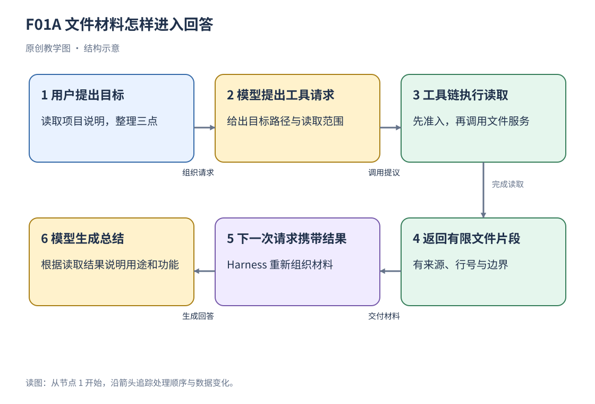

图 01A 按箭头展示成功路径：接纳任务、模型提出 read、文件服务返回窗口、下一次请求使用结果，再生成总结。第一次请求负责提出读取，第二次请求负责利用读到的文本。
- 用户提交任务，入口把消息放入 Inbox，返回接纳回执。
- 驱动组装第一次请求。模型提出 Tool Call，指定 read 和参数
{ file_path: "README.md" }。花括号里的“名称—值”组合称为对象，这里保存本次读取的路径。 - ToolRuntime 完成准入，执行包装函数检查参数，再由文件服务读取目标。
- 工具结果记录到 Session；驱动组装第二次请求，把已获取的文件窗口交给模型。
- 模型根据这些文字生成总结，驱动记录轮次结束，界面显示结果。
把正常路径与失败放在一起
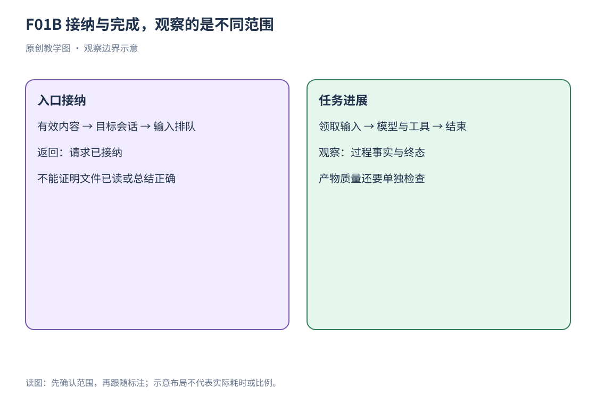

图 01B 左侧是入口接纳，右侧是后台任务。左侧结束于输入排队，右侧继续经历模型请求、工具执行和轮次结束；文件不存在、模型限流等错误出现在后续运行中。
accepted: true 是入口接纳本次输入的回执。文件读取和模型生成随后各自产生结果。读取 README.md 时若文件不存在，工具服务构造带错误信息的 ToolResult，驱动把它加入历史。下一次模型请求便能根据这个错误说明资料不足，或调整读取目标。
排查错误时，沿处理顺序检查：先查入口是否接纳，再查驱动是否启动，再查模型是否返回合规 Tool Call，最后查工具执行状态与终态事件。
01.4 源码研读
E01A · 接纳时的身份与来源
阅读任务：位置是 prompt 已通过前面的输入检查之后。已知请求有 Session 标识和请求标识，本段观察怎样定位 Agent、识别重复输入并建立来源对象；后续附件、排队和接纳返回不在此节选中。
代码类型：真实源码摘录。证据编号 E01A；下表的数字是原文件行号。
const agent = await this.resolveAgent(request.sessionId)
if (hasPromptRequest(agent, request.requestId)) return { accepted: true }
const source: MessageSource = {
kind: 'user',
rpcId: request.requestId,
...(clientTimeZone === undefined ? {} : { clientTimeZone }),
}| 原文件行号 | 写法 | 在这段流程中的作用 |
|---|---|---|
| 329 | const 保存一次结果，await 等待 resolveAgent | 按请求的 Session 标识获取本次接收输入的 Agent 对象。 |
| 330 | if 判断条件，return 提前结束方法 | 已识别的 requestId 不再排入一次，返回已有接纳确认。 |
| 331 | 冒号声明类型，花括号开始对象 | source 将保存本次用户消息的来源字段。 |
| 332 | 字符串属性 kind | 将来源类别记为 user，区别于其他消息来源。 |
| 333 | 点号读取属性，属性赋值 | 把入口的请求标识记成 rpcId，供后续关联使用。 |
| 334 | 三点号展开对象，三元表达式选择分支 | 未提供时区不增加字段；提供时加入规范化的时区值。 |
| 335 | 结束对象字面量 | source 建立完成，后续创建用户消息时使用它。 |
执行推演：已识别的请求标识直接得到接纳回执；新标识则继续建立用户消息的来源信息，随后进入附件处理、排队和回执返回。
E01B · 记录工具提议，而不是宣布完成
阅读任务：这是 executeToolCalls 使用的调用记录辅助函数。参数已经包含 Session、轮次、步骤和一个工具调用块。本段观察保存哪些关联信息以及返回什么。
代码类型：真实源码摘录。证据编号 E01B；下表的数字是原文件行号。
function appendToolCall(session: Session, turn: number, step: number, block: ToolCallBlock): SessionSeq {
const event = session.append('tool/call', { turn, step, callId: block.id, name: block.name, arguments: block.arguments })
return event.seq
}| 原文件行号 | 写法 | 在这段流程中的作用 |
|---|---|---|
| 263 | function 定义函数，冒号给参数与返回值标注类型 | 调用者交入本次工具调用所属的 Session 和推进位置。 |
| 264 | const 接收方法返回的事件，对象简写使用同名参数 | 把调用身份、名称、参数和所属 turn/step 追加到 Session 记录。 |
| 265 | return 读取事件的 seq | 返回刚创建的序号，供结果与调用关联。 |
| 266 | 右花括号结束函数 | 记录辅助函数到此结束，真实工具动作在调用者的后续路径中。 |
执行推演：当前日志有 9 项时，新调用得到序号 9。函数返回该序号，供后续结果关联；调用者接着推进工具执行，存储写入由 Session 的监听器另行处理。
01.5 理解检查与讲解问答
问题 1 · 入口返回 accepted 后，能说已经读完 README 吗？
讲解：不能。这里只确认输入已接纳。还要经过领取、模型提议、准入与读取，才有文件结果。
问题 2 · 模型给出了三点总结，怎样检查它依据了文件？
讲解：先找到 read 的调用记录和成功结果，确认返回的行范围覆盖总结所用的材料，再逐项对照总结与原文。这样才能把总结中的结论追到实际读取结果。
问题 3 · 第一次模型请求与第二次请求的材料有什么差别？
讲解：成功案例的第二次请求增加了读取结果。它依赖前面的真实执行，不是独立重复同一份输入。
第 2 章｜读懂代码：类型与异步等待
本章学习任务：认出值、对象、函数和类型的基本写法；解释一次 await 等待的结果，并区分注册回调、调用回调和后台完成。
02.1 基本概念
先把程序里的信息和动作拆开。变量是给一项值取的名字，例如 path 保存路径文字。字符串是文字值；数字可以表示起始行号；布尔值只有真和假。对象把相关信息放在一起，例如一份读取请求同时保存路径、起始行和行数。属性是对象中的一项信息，request.content 表示请求的内容属性。数组按位置保存多项值，例如多行文本；位置通常从 0 开始，文件行号却常从 1 开始，两个口径不能混用。
函数把一组步骤包装成可以调用的操作。参数是调用者交给函数的值，返回值是函数返回的值。方法是属于某个对象的函数；agent.followup(message) 表示让这个 Agent 的方法处理消息。类描述一类对象的结构和操作，实际创建出来的对象叫实例。接口和类型说明规定数据形状，例如路径应是字符串。文件是否存在，要等文件服务访问目标时检查。
TypeScript 在 JavaScript 的写法上增加类型说明。const 固定变量绑定，let 允许重新赋值；对象内部仍可能变化。冒号后面通常是类型，问号表示可缺省，return 把值返回调用者，throw 使当前路径失败。花括号既可能围住对象，也可能围住一组语句，要看它的位置。模块是单独组织代码的文件；import 引入别的模块，export 让别处能够使用本模块的名称。
Promise 表示一项异步操作的结果，可以处于等待中、成功或失败状态。async 方法返回 Promise，await 暂停这个方法的后续部分，等待该结果；其他工作可以继续推进。进程是操作系统管理的一次程序运行，线程是进程内一条执行指令的路径。等待期间，JavaScript 运行时可以执行其他已经就绪的工作。并发是多项工作可以交错推进，并行是同一时刻用多个执行资源处理多项工作；多个操作怎样交错，取决于它们的启动与等待顺序。回调是交给别处、等特定时机再调用的函数，例如收到事件后更新记录。以后看到 () => ...，先问谁会在什么时候调用它，而不是把它当成已经执行的结果。
JavaScript 是运行这些步骤的语言；TypeScript 的类型检查帮助在执行前发现写法与数据形状的问题。程序真正运行时，输入是否合法、资源是否可用仍要由实际代码检查。运行时的事件循环会处理已准备的工作并恢复后续执行；等待外部读取时，当前方法暂停，其他已准备工作仍可推进。
语法导航：从已讲过的数据与动作认写法
阅读源码时，可以用下表查询常见写法；每段节选还配有逐行解释。
| 写法 | 语言含义 | 本项目里的阅读用处 |
|---|---|---|
| const / let | 固定绑定／可重新赋值的绑定 | 保存结果或推进游标；固定绑定不冻结对象内部 |
| undefined / null | 未提供的值／显式表示无值 | 区分缺省配置与实际结果 |
| this / new | 当前对象／创建实例 | 访问所属服务，或建立错误与传输对象 |
| :、?、void | 类型说明、可缺省、不使用返回值的类型约定 | 阅读参数形状、可选字段与函数签名 |
| Promise 与 await | 将来结果与等待结果 | 找等待的是接纳、读取还是其他边界 |
| if / else / switch | 按条件或类别选择路径 | 分清允许、拒绝和不同后端 |
| === / !== | 严格相等／不等比较 | 比较模式、序号或行动类别 |
| && / || | 短路求值：&& 遇到假值停止，|| 遇到真值停止，返回停下时的操作数 | 阅读复合条件与取值表达式，确认右侧是否执行 |
| ?. / ?? | 对缺省对象安全访问／缺省时采用另值 | 读取可选 Agent、选择配置默认值 |
| () => ... | 把函数作为值写出 | 问谁以后调用回调，区别定义和执行 |
| {...对象} | 将已有对象属性放入新对象 | 保留已有决定，再替换 messages |
| {a,b}=对象 | 解构取出指定属性 | 将目标和文件信息分开命名 |
| [...数组] / ...数组 | 复制数组成员／展开成员 | 返回新视图或组合领取结果 |
| for...of | 逐项取出数组等集合的成员 | 对领取消息逐项发通知 |
| map / filter / some | 转换每项／保留符合条件项／检查是否有符合项 | 构造卡片行、提取工具提议、检测重复材料 |
| slice / toSpliced | 取前缀等子区间／建立修改后的新数组 | 继承事件或插入指令，不当然生成摘要 |
| try / catch / finally | 尝试路径／处理失败／离开时收尾 | 跟踪错误怎样返回和资源怎样释放 |
| return / throw / continue | 返回结果／失败退出／下一次循环 | 找输出交给谁，区分完成和重试 |
| yield | 给流消费者一项结果并可继续 | 阅读跟随事件或逐步效果 |
| 泛型 <T>、unknown、as | T 为具体类型留位置，例如同一容器可保存文字或事件；unknown 要求先确认值的种类；as 向类型检查器声明自己的判断 | 用类型组织事件；as 不会替程序验证真实输入 |
| readonly / private | TypeScript 的只读约束／类成员访问约束，主要用于类型检查 | 阅读代码中的写入与访问约定；运行时私有字段使用 # 名称 |
| using | 作用域结束时调用资源释放协议 | 读取附件绑定等有资源生命周期的代码 |
遇到单独一行的右括号，先看它关闭的是对象、函数、条件还是调用。逐行表会标出结构关系；沿函数的参数、调用和返回位置继续阅读，就能把这些写法接回实际流程。
02.2 沿一个任务看完整流程
await prompt(...) 等待提交回执。接纳方法校验请求内容，把消息交给 Agent，再返回接纳对象。调用方拿到回执后可以继续工作；Agent 驱动继续处理任务，最终总结通过持续观察通道送回界面。
假设输入是空白文字且没有附件，内容判断为假，方法抛出错误，调用者的等待以失败结束；假设输入有效，方法继续到后面的接纳逻辑。这里的 Promise 返回 SessionPromptValue，也就是接纳回执。
注册工具时，程序把名称、参数说明和执行函数交给注册表。执行函数此时作为一个值保存，具体调用到来时才运行。箭头函数、对象方法和事件回调都要区分定义与调用。要让两个异步操作重叠，可以先分别启动，再用 Promise.all 汇总结果。全部成功时，它按传入顺序返回结果数组；任一项失败时，汇总的 Promise 就失败，其他已启动操作仍按各自流程收尾。
02.3 关键机制与设计取舍
回执返回后，驱动继续工作
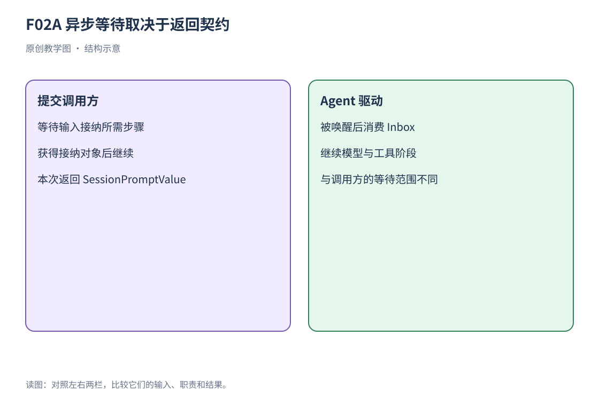

图 02A 并排展示两个等待范围。调用方等待 prompt 返回接纳对象；Agent 驱动在被唤醒后继续领取输入、调用模型和执行工具。
分析示例：注册不是执行
假设启动时运行三次“注册工具”的函数，随后模型只调用了一次文件读取工具。注册次数是 3，执行次数是 1。注册次数统计能力定义，执行次数统计实际调用。
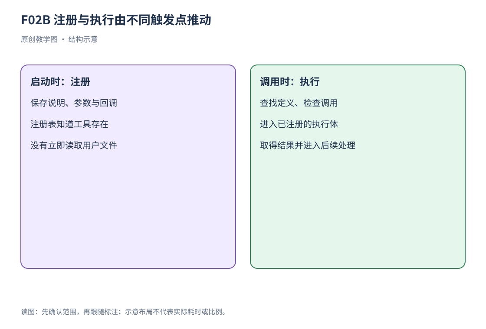

图 02B 左侧保存工具定义，右侧使用定义执行调用。名称、参数和回调在启动时注册，read 的执行函数在具体调用到来时运行。
在文件读取插件中，applyReadTool 注册 defineTool(...)，对象里的 async execute(...) 是稍后执行的函数。读到函数对象时，要问“谁保存了它、谁以后调用它”，而不是假定控制流已经进入函数体。
回到任务接纳
用代码写法重走接纳流程：prompt 校验请求内容并解析目标；已识别的 requestId 直接返回回执；新请求构造用户消息，调用 followup 或 steer，再返回接纳对象。followup 把消息送入 Inbox 并唤醒驱动，后续模型请求与工具执行由驱动推进。
调试“提交成功但没有回答”时，沿 Inbox、驱动状态、模型请求和工具结果继续查。await prompt 已经结束，后台驱动仍在运行。
容易混淆的地方
“async 使函数内部所有动作并行”：连续写两个 await 时，第二个操作要等第一个返回后才开始。先启动两个操作、再汇总它们的 Promise，才给它们提供重叠推进的机会。
“类型合法就不会失败”：类型不能证明文件存在、网络可达或权限获准；运行时检查依然必要。
“工具对象里有 execute，所以启动已执行”：对象属性可以是一段尚未调用的函数。要追保存与调用位置。
02.4 源码研读
E02A · async 返回的结果由方法契约决定
阅读任务：这是 prompt 方法开头，不是完整方法。request 是入口交入的请求对象；先观察输入不合法时怎样结束。后续时区、附件、消息入队与 accepted 返回在第 1 章主链中解释。
代码类型：真实源码摘录。证据编号 E02A；下表的数字是原文件行号。
async prompt(request: SessionPromptRequest): Promise<SessionPromptValue> {
if (!hasPromptContent(request.content)) {
throw new RemoteError(
'gateway/bad-request',
'prompt content must include non-whitespace text or an attachment',
{},
)
}| 原文件行号 | 写法 | 在这段流程中的作用 |
|---|---|---|
| 311 | async 标记异步方法，Promise 标注将来结果的类型 | prompt 接收入口请求，结果契约是 SessionPromptValue，不是最终总结。 |
| 312 | if 与感叹号分别表示判断和取反 | 内容不符合要求时进入拒绝分支。 |
| 313 | throw 抛出一个 new 创建的错误对象 | 中断当前接纳路径，将失败返回调用方。 |
| 314 | 第一个字符串实参 | 指定远程错误类别 gateway/bad-request。 |
| 315 | 第二个字符串实参 | 说明至少需要非空白文字或一个附件。 |
| 316 | 空对象实参 | 本错误不附加更多结构化细节。 |
| 317 | 右圆括号结束构造调用 | RemoteError 的参数已传完，throw 生效。 |
| 318 | 右花括号结束 if 分支 | 有效请求不执行本分支，方法其余逻辑继续。 |
执行推演：请求只有空白文字且无附件时，条件成立，构造并抛出 RemoteError，调用方等待失败。有效内容跳过这段拒绝，继续后面的接纳处理。
02.5 理解检查与讲解问答
问题 1 · await 一个方法，是否等于等待整个用户任务完成？
讲解：由方法返回契约决定。等待接纳方法只获取回执；等待读取方法才获取读取结果。
问题 2 · 注册对象里写了 execute 函数，为什么没有立即读文件？
讲解：注册只是保存函数值与说明。后来发生具体工具调用时，框架才调用执行函数。
问题 3 · 类型说路径是字符串，是否证明文件存在？
讲解：没有。类型说明数据形状，文件存在、权限和读取成功需要运行时检查。
第 3 章｜循环与消息队列：一轮任务为什么需要多步
本章学习任务：追踪一个输入怎样被领取、怎样进入轮次和步骤；比较 followup 与 steer，并解释工具执行与结果提交的顺序。
03.1 基本概念
轮次（turn）是驱动围绕一批输入推进的一段过程；步骤（step）是轮次里的一个推进单元；尝试（attempt）是该步骤中一次模型请求的执行。读取 README 后继续总结，可以是同一轮次的两个步骤。第一次请求失败、恢复策略允许再请求，则是同一步骤中的另一次尝试，而不是再收到一次用户任务。
状态是某个时刻保存的信息，例如待处理消息有哪些、当前轮次编号是多少。状态转换说明一件事发生后这些信息怎样改变。驱动是负责持续推进转换的程序。取消信号是可被执行代码检查的停止请求；接到信号后，执行代码停止后续工作，并等待已经启动的操作收尾。
Inbox 分别保存 next-turn 和 next-step 输入。followup 放入前者，steer 放入后者。进入下一步骤时，驱动领取全部 next-step 输入；开启下一轮时，再把一项 next-turn 输入接到这批材料后面。因此，较晚到来的引导可以先被领取，较早排队的另一项普通任务仍在等待。领取以后还要经过前置判断，允许进入本步才发起模型请求。
由此可以分别问：输入有没有接纳、有没有被领取、模型请求是否成功、工具是否执行、轮次以什么原因结束。这些问题各自对应不同记录，不能用一个“成功”替代。
03.2 沿一个任务看完整流程
设 A 是普通任务，B 是本轮中的补充要求，C 是另一条普通任务。A 已进入当前轮次；C 排在下一轮次；B 通过引导入口进入下一步。
| 边界 | next-step 待处理 | next-turn 待处理 | 领取结果 |
|---|---|---|---|
| 本轮请求执行中 | B | C | 不改已经发出的请求 |
| 本轮下一步骤 | B | C | 领取 B，C 继续等待 |
| 下一轮开始 | 空 | C | 领取下一轮的一项普通输入 |
驱动先记录轮次开始，再为下一步骤作前置判断。前置拒绝时，轮次可以以 blocked 结束而没有模型步骤；允许时才准备请求。成功请求没有工具调用则可完成；有工具调用则执行并记录结果，按结论继续下一步或结束。失败尝试是否继续由恢复策略决定：只有恢复链（第 9 章展开的错误恢复流程）给出 retry（重试）时，才在同一步骤里再次尝试；否则以失败结束。例如一个任务包含两步，第一步重试一次：共有一个 turn、两个 step、三次模型请求，也就是三次 attempt。
03.3 关键机制与设计取舍
三层边界
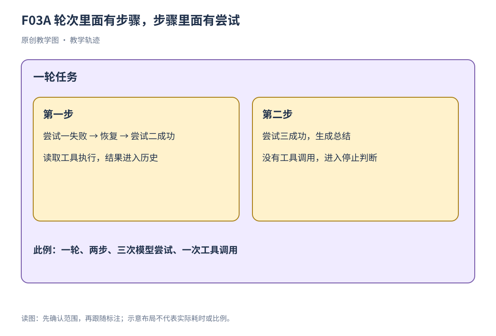

图 03A 外框是一轮任务，内框是两个步骤。第一步有失败和重试两次尝试，第二步有一次成功尝试，因此这条轨迹包含一个 turn、两个 step、三个 attempt。
turn、step 和 attempt 分别统计任务推进的三个层次。前置拒绝时，一轮没有进入模型步骤；读取后总结可以用两个步骤；某一步请求失败后又可以重试。驱动在成功消息提交后提取工具调用；失败尝试的 partial 是尚未成功完成的输出，先进入失败记录与恢复流程。
Inbox 怎样与驱动合作
Inbox 保存尚未领取的输入。followup 排入下一轮并请求唤醒；steer 排入下一步并请求唤醒；inject 也排入下一步，由后续驱动活动领取。选择哪种入口，决定输入何时进入处理以及是否启动驱动。
空闲时，需要唤醒的输入让驱动启动。已有活跃驱动时，新输入由现有驱动在约定边界领取。维护期间，唤醒请求先记在 wakeRequested 中，由维护任务收尾时检查是否启动驱动。这里把正在进行的一次运行称为活动。若活动已收到取消信号，send 会把需要唤醒的输入改排到 next-turn，等待原活动收尾后再处理。
普通运行路径中，驱动开放轮次，准备下一步，领取消息并组装材料。前置决定可能允许进入或拒绝。进入后发起模型请求，成功消息有工具调用则进入工具批次；工具结果回到 Session 历史。驱动再看停止原因与下一步输入，决定继续或结束。
工具执行能重叠，结果仍按模型顺序提交
把贯穿案例稍作教学扩展：模型在同一消息里先提出读取 README 的调用 A，再提出读取包信息的调用 B。要同时说明三个顺序：提议的排列、真实动作的完成先后，以及结果进入 Session 的顺序。三个顺序不必相同。S02 对照本节执行器。
执行器先按模型排列建立计划，给每项保存调用身份、工具名、解析后的参数、所属 Agent 和取消信号。然后查询当前工具的执行模式：允许交错执行的调用可以进入有数量上限的池；需要独占的调用形成屏障，让当前池排空后再处理。池是保存正在执行操作的集合，屏障是在这里要求前面的执行先收尾的边界。
启动每一项时，先记下 tool/call 及其序号，再等待这一项的前置准备。准备可能已经形成拒绝结果，也可能允许分派真实执行；前置准备按顺序推进，实际分派与工具体才可能重叠。拒绝结果同样要在相应位置进入结果链，不能把“未执行”理解为“没有结果记录”。
假设 A、B 均允许重叠、数量上限足够，B 较早读完。执行器先把 B 的结果放到自己的结果槽里。槽是按调用位置保存结果的临时位置；B 放在位置 1，A 在位置 0。提交位置仍停在 0，因此不能跳过 A 先把 B 提交到 Session。A 完成后，执行器才依次进行 A、B 的结果后处理，记录各自结果，并把额外上下文交给下一步骤的材料批次。
| 时点 | A 的结果槽 | B 的结果槽 | 已提交到 Session 的工具结果 |
|---|---|---|---|
| 两项已开始 | 尚空 | 尚空 | 无 |
| B 先结束 | 尚空 | 已有结果 | 无，仍等待位置 0 |
| A 随后结束 | 已有结果 | 已有结果 | 按 A、B 顺序处理并追加 |
| 下一步准备 | 已按约定交接 | 已按约定交接 | 模型可使用有确定关联的结果 |
这里的提交把结果追加到 Session；第 5 章继续解释这些事件怎样写入存储。执行器还会在提交之后重新检查尚未启动项的执行模式；某个工具改变注册状态后，后续调用按更新后的执行模式调度。工具的轮次结束提示会汇总给外层驱动，由驱动决定是否继续下一步。
取消与调度失败又是不同分支。取消会停止启动新动作，让已开始的执行收尾并按顺序交接；未开始的模型调用会得到表示跳过的合成结果。合成结果是框架生成的说明，没有对应真实工具动作。调度失败时，执行器等待已分派动作收尾，再把错误返回当前步骤。
按顺序提交让历史与模型提议容易对应，允许执行重叠则可以利用独立工作的等待时间。执行器为此维护并发池、结果槽和提交位置。B 虽然先完成，仍要等待 A 提交；下一步模型按原提议顺序读取结果。
队列与状态机的最小基础
队列保存“还有哪些输入等待处理”，状态机记录“当前运行在哪个阶段”。新消息入队后，正在执行的请求继续使用原材料；驱动到下一领取时点，才把待处理输入加入后续请求。
事件通知让关注这些变化的观察者（例如界面或记录组件）知道队列或状态变了。DSH（DeepSeek Harness 的缩写）Inbox 变更先更新可观察状态，再通知监听者，因此监听者可以在通知里查询新状态。
ReactLoopAgent 是核心运行驱动。它管理 Inbox、turn、step、模型请求和取消；网页端的 React 组件负责显示这些运行状态。
分析示例：数一次有重试的读取任务
教学轨迹如下：开放一轮；第一步第一次模型尝试失败，第二次尝试成功并提出 read；工具返回文件片段；第二步模型成功生成总结；轮次结束。本例共有 1 个 turn、2 个 step、3 次模型 attempt、1 次工具调用。
为什么不是 3 个 step？第一步重试发生在本步的尝试循环中，没有再次进入前置步骤，也没有把用户消息再提交一次。为什么不是 2 个 turn？工具结果引发的后续模型请求仍属于当前轮次推进。
按 turn、step、attempt 分别计数，可以看出额外请求来自任务推进还是失败重试。
运行中插入新要求
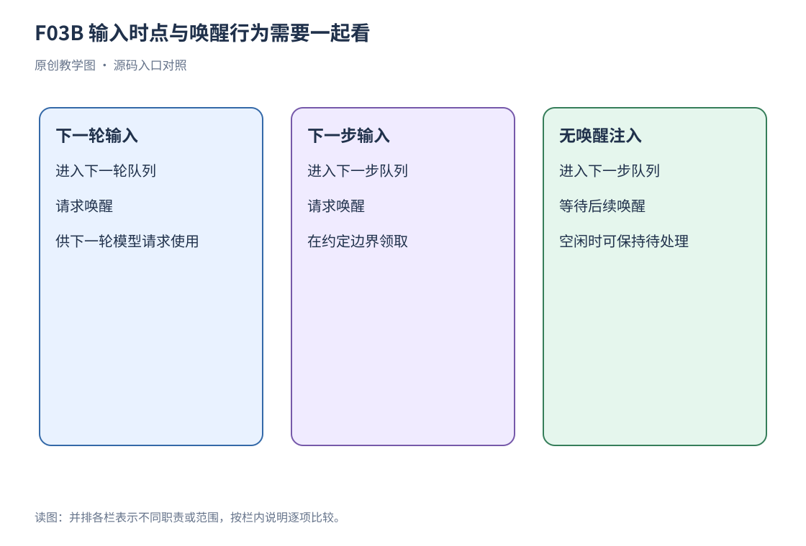

图 03B 的三栏分别对应 followup、steer 和 inject。followup 进入 next-turn 并唤醒，steer 进入 next-step 并唤醒，inject 进入 next-step，由后续驱动活动领取。
回到案例，读取结果后驱动进入下一次材料准备，如果约定时点领取了新约束，这次总结请求可以包含新约束。前置拒绝使轮次以 blocked 结束。取消则使正在运行的路径收尾，剩余输入由 Inbox 和下一次唤醒继续管理。
常见误解
“下一步输入会立刻打断当前模型流”：next-step 指定下一次领取的位置。当前请求继续执行；取消则通过独立信号要求它停止。
“结果按顺序记录，所以工具肯定串行执行”：工具的实际执行部分（工具体）可能同时跑多个，而准备、后处理和最终提交有顺序约束。
“出现 turn/start 就花费一次模型请求”：前置拒绝或初始空输入可能没有进入步骤。
03.4 源码研读
E03A · 领取时组合两类待处理输入
阅读任务：本段是 Inbox.claim 完整方法。target 指当前是否是新轮次边界，turn 指领取所属轮次。mutate 在这里移除对应列表项并返回被取出的消息；重点是两类列表的领取差异。
代码类型：真实源码摘录。证据编号 E03A；下表的数字是原文件行号。
claim(target: InboxTarget, turn: number): UserMessage[] {
const claimed = this.mutate('next-step', 0, this.nextStep.length, [], false)
if (target === 'next-turn') claimed.push(...this.mutate('next-turn', 0, 1, [], false))
for (const message of claimed) this.dispatch.emit('agent/inbox/claimed', { message, turn })
return claimed
}| 原文件行号 | 写法 | 在这段流程中的作用 |
|---|---|---|
| 109 | 方法接收边界和轮次，并返回消息数组 | 调用者是准备下一步骤的驱动。 |
| 110 | const 保存 mutate 返回值，length 表示列表项数 | 先取走当前全部 next-step 输入，保存为 claimed。 |
| 111 | if 比较 target，push 与展开追加数组成员 | 新轮次边界才再取一项 next-turn 输入，拼到领取批次后。 |
| 112 | for...of 遍历领取结果，emit 发出事件 | 让观察者知道每条消息被哪一轮领取，而不是直接执行模型。 |
| 113 | return 返回数组 | 前置处理可使用这批消息形成本步材料。 |
| 114 | 右花括号结束方法 | 领取动作完成，模型请求仍属于后续步骤。 |
执行推演：next-step 中有 B，next-turn 中有 C。target 为 next-step 时返回 B、保留 C；target 为 next-turn 时先取全部步骤输入，再取一项轮次输入。每项领取还发出对应通知。
03.5 理解检查与讲解问答
问题 1 · C 先以 followup 排入，B 后以 steer 排入，谁先用于本轮下一步？
讲解：B 在下一步领取，C 留给下一轮。Inbox 先按输入的目标边界分组，再在相应边界领取，所以后到的 B 可以先于 C 进入请求。
问题 2 · 一轮两步，第一步重试一次，一共有几次尝试？
讲解：三次。第一步两次，第二步一次；轮次数仍是一次。
问题 3 · inject 与 steer 的关键差别是什么？
讲解：两者都进入 next-step；inject 不触发唤醒，steer 触发。驱动空闲时，inject 的输入会留在队列中，等待后续唤醒。
问题 4 · 模型先提出 A、再提出 B，但 B 先完成，为什么 Session 可以先没有 B 的结果？
讲解：执行器先把 B 存入位置 1 的临时结果槽，提交位置仍等待 A 所在的位置 0。A 完成后才依次处理、提交 A 和 B。真实执行先后与历史提交顺序不同；若下一次模型请求读取历史，也应以实际已提交的结果为依据。
第 4 章｜沿文件读取工具追到底：模型怎样得到材料
本章学习任务：用路径、起始行和行数说明一次文件读取；预测缺失文件、非法参数与范围截断怎样影响获取的材料。
04.1 基本概念
文件路径指出要读哪份文件；当前工作目录是解析相对路径的起点。README.md 相对于哪个目录，必须由 Session 和所选文件后端决定。后端是实现统一接口的具体实现：接口规定“能够读文本”，后端决定从本机、远端或其他环境怎样读取。
工具参数契约描述可接受的字段与值。解析把外部写法转成内部输入，并补齐默认值、拒绝不合法值。未提供的参数采用默认值；明确提供的值接受合法性检查。描述字段与类型等形状规则的定义称为 schema，例如路径应是文字、行号应是数字；实际解析还要检查值是否符合规则。读取窗口返回指定行范围，并携带总行数和截断信息。
流式读取把文本分批交给处理者，避免先把整个大文件放进内存。它与模型逐段生成回答是不同对象上的流式处理。范围上限可以限制行数、单行长度和输出字节；结果需要如实表达保留了什么。输出结构、模型使用的文字和界面展示资料还会在第 18 章分别讨论。
字节是存储和传输数据的计量单位。UTF-8 把文字编码成字节序列，一个汉字通常占多个字节。模型的 tokenizer 又把文字编码成 token。文件字节数、文本行数和模型 token 数采用不同计量规则，工具输出上限与模型容量分别控制。
读取前要经过通用工具准入；这里先研究获准以后如何解释参数、选择读取方式和构造窗口。拒绝调用与读取时发现文件不存在，是两个阶段的结果。
04.2 沿一个任务看完整流程
假设 README 有五行，工具参数是路径 README.md、offset 为 2、limit 为 2。调用先经过 ToolRuntime 准入；获准后，defineTool 包装函数检查参数的 schema，read 执行体再检查路径不为空、行号与行数为正整数。合法输入变成内部的 filePath、offset 和 limit。文件服务解析目标、获取文件信息，然后依大小信息选择一次读取或流式读取；窗口构造器保留第二、三行，并受其他输出上限限制。
如果不提供 offset，使用第 1 行；不提供 limit，采用本次配置的默认上限。提供 0、负数或超过允许上限的 limit，会走参数错误分支。文件大小未知时采用流式路径，是为了避免无法判断大小的后端先缓存任意大文件。
结果返回后，ToolRuntime 校验并渲染输出，驱动再记录工具结果。下一次请求得到的是这次读取的窗口，窗口中的行号和总行数帮助模型决定是否续读。
04.3 关键机制与设计取舍
一次读取的材料变化
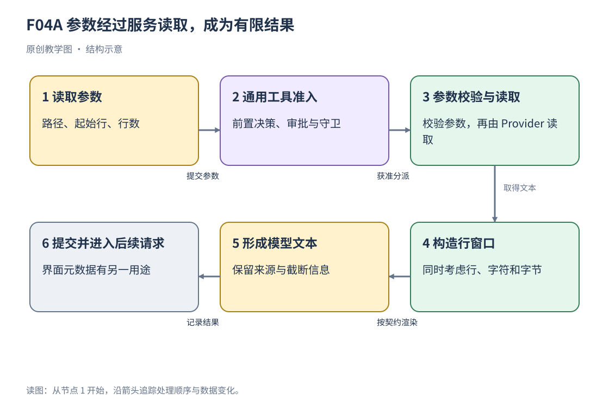

图 04A 从路径和行范围走到文件服务，再构造行窗口、渲染模型文本并记录结果。通用准入先决定是否分派，工具执行阶段再完成参数校验和实际读取。
read 接收 file_path、可选 offset 和 limit，起始行从 1 开始。参数 schema 描述字段名称、类型和必填要求；parseReadArgs 检查路径非空、行号和行数为正整数，并应用配置上限与默认值。
启动注册与调用执行
启动时，文件工具插件获取所需服务，调用 applyReadTool 注册工具定义，并贡献对应使用指导。定义里同时有说明、参数、执行体和输出呈现契约。此时没有读用户指定的文件。
实际调用先经过通用工具准入，由安全策略判断是否放行，详细规则见第 11 章。获准后，包装函数检查 schema，read 执行体解析参数，再通过 resolveRegularReadTarget 获取目标和文件信息。文件较小时整读，大小未知或达到阈值时流读。buildWindow 按行范围、单行长度和字节上限保留文本，同时继续扫描剩余输入，统计准确的总行数。结果因此可以同时告诉模型“本次返回哪几行”和“整份文件有多少行”。
ctx.fs 由当前 profile 选中的文件 Provider 实现。本机 Provider 访问本机路径，SSH Provider 访问远端路径；read 通过同一接口调用它们。读取结果随后分成模型文本和界面展示元数据，第 18 章会把这两条输出路径连起来。
行、字符和字节
行数、单行长度和输出字节数共同控制返回体积。长行先截到规定长度，再按 UTF-8 字节数检查能否加入窗口。模型随后对这份文字作 token 编码，所以读取 100 行时，token 数还要根据具体内容计量。
参数错误在读取前返回。路径不存在或目标不是普通文件时，目标解析报错，再由通用结果链形成工具错误。达到字节上限时，窗口停止保存后续行，继续统计总行数，并在成功结果中标明截断。
分析示例：读到哪些行
教学文件有 120 行，请求从第 41 行读取 30 行，且本例假设字节与单行长度限制没有提前截断。最后一行是 41＋30−1＝70，所以返回 41—70 行，后面仍有 50 行。
若重要约束在第 100 行，就要继续读取后面的窗口。若字节上限让结果提前停在第 60 行，实际覆盖范围是 41—60 行；续读应从第 61 行开始。每次都以返回结果中的范围为准。
有限窗口降低材料体积并让来源更容易定位，代价是需要正确续读和识别遗漏。整体读取先获取完整文本，流式读取分批交给窗口构造器；两条路径都应用同一组输出上限。
重走 README 任务
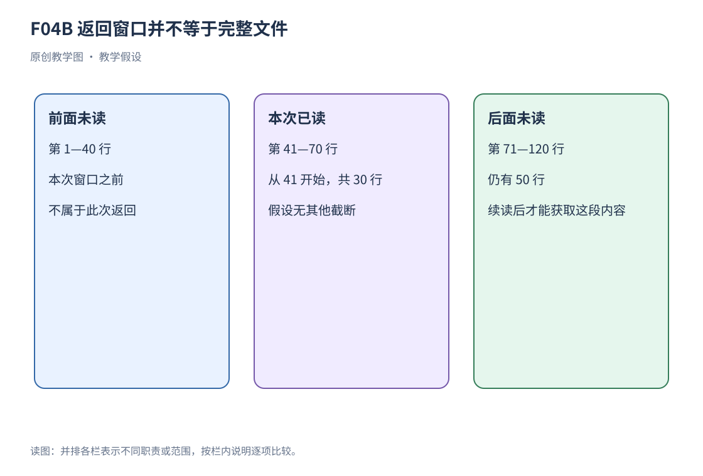

图 04B 把 120 行文件分成三段：第 1—40 行在窗口前，本次返回第 41—70 行，第 71—120 行留待续读。正文中的行范围说明本次结果覆盖哪里。
常见误解
“read 成功等于全文进入上下文”：检查行窗口、截断和实际结果。成功与完整性是不同属性。
“模型能直接执行参数里的任意路径”：先有工具准入，再有文件服务的解析与执行边界，不能略过这些层。
“行数限制就是 token 预算”：单位不同，材料统计与模型 token 计量需要分别进行。
04.4 源码研读
E04A · 参数默认值与错误分支
阅读任务：这是 parseReadArgs 完整函数。调用者把模型提交的外部参数和配置上限交进来；本次观察缺省值与不合法值怎样区别处理。
代码类型：真实源码摘录。证据编号 E04A；下表的数字是原文件行号。
export function parseReadArgs(args: { file_path: string; offset?: number; limit?: number }, maxLimit: number): ReadInput {
if (args.file_path.trim().length === 0) throw new Error('file_path must be a non-empty string')
const offset = args.offset === undefined ? 1 : parsePositiveInteger(args.offset, 'offset')
const limit = args.limit === undefined ? maxLimit : parsePositiveInteger(args.limit, 'limit')
if (limit > maxLimit) throw new Error(`limit must be less than or equal to ${maxLimit}`)
return { filePath: args.file_path, offset, limit }
}| 原文件行号 | 写法 | 在这段流程中的作用 |
|---|---|---|
| 55 | export 让别的模块可用，function 定义操作，问号表示可缺省 | 接收外部路径与可选窗口参数，返回内部 ReadInput。 |
| 56 | trim 去首尾空白，if 与 throw 建立错误分支 | 空白路径不能进入文件解析和读取。 |
| 57 | 三元表达式根据 undefined 选值 | 未提供 offset 用 1，提供了则检查正整数。 |
| 58 | 同样的三元选择 | 未提供 limit 用当前上限，明确提供的值必须合法。 |
| 59 | 大于号比较，模板字符串插入上限 | 超出允许窗口行数时拒绝，而不是静默变成任意读取。 |
| 60 | 对象返回，显式改写属性名 | 外部 file_path 对应内部 filePath，其余采用解析后的值。 |
| 61 | 结束函数 | 调用者拿到规范输入后继续真实读取。 |
执行推演：file_path 为 README.md、offset 缺省、limit 为 2 时，内部输入是 filePath=README.md、offset=1、limit=2；limit=0 由正整数解析拒绝，超过 maxLimit 则走原文件第 59 行。
E04B · 大小信息决定文本获取方式
阅读任务：位置在 read 的执行体内，参数已经解析。target 保存后端解析的目标，info 保存文件信息，caps 是本次读取限制，exec.signal 是取消信号，ctx 是携带各项服务的 Context 对象。后续 outcome 和结果返回在正文中说明。
代码类型：真实源码摘录。证据编号 E04B；下表的数字是原文件行号。
const { target, info } = await resolveRegularReadTarget(ctx, exec, input.filePath)
// Stream when the file is large OR size is unknown, so a size-less backend
// never buffers an arbitrarily large file.
const chunks = info.size === undefined || info.size >= caps.streamMinSize
? await ctx.fs.streamText(target, exec.signal)
: [await ctx.fs.readText(target, exec.signal)]
const window = await buildWindow(
chunks,
{ offset: input.offset, limit: input.limit, maxLineLength: caps.maxLineLength, maxBytes: caps.maxBytes },
target.displayPath,
)| 原文件行号 | 写法 | 在这段流程中的作用 |
|---|---|---|
| 141 | await 等待解析，花括号解构返回对象 | 获取符合普通文件读取要求的目标和信息。 |
| 143 | 原注释说明选路条件 | 文件大或者大小未知时采用流式读取。 |
| 144 | 原注释说明未知大小的风险 | 避免先缓存任意大文件。 |
| 145 | const 与逻辑或组成判断 | 按左侧条件选中流式或整读的结果，存入 chunks。 |
| 146 | 问号分支等待 streamText | 获取后端文本流，并传入同一取消信号。 |
| 147 | 冒号分支与数组字面量 | 一次读获取到文本后包装成一个批次供窗口处理。 |
| 148 | await 等待窗口构造函数 | 把获取文字的方式与窗口选择分开。 |
| 149 | 第一个实参 | 把文本批次或流交给窗口构造器。 |
| 150 | 对象实参列出边界 | 传入行范围、单行长度和字节上限。 |
| 151 | 第三个实参 | 传入可显示的路径用于结果表达。 |
| 152 | 结束函数调用 | window 是经过窗口规则处理的结果，尚需构造最终规范值。 |
执行推演：大小小于流式阈值时获取完整文本作为一个批次；大小未知或达到阈值时获取文本流。两种输入都交给 buildWindow，再按起始行和限制构造结果。
04.5 理解检查与讲解问答
问题 1 · offset=2、limit=2 是否代表文件只有两行？
讲解：不是。这是选取第二行开始的至多两行窗口；完整文件行数由结果的相应信息说明。
问题 2 · 未提供 limit 与提供 limit=0 一样吗？
讲解：不同。缺省采用配置默认值；0 不满足正整数条件，走参数错误。
问题 3 · 未知大小的文件为什么走流式路径？
讲解：避免先缓存一个无法判断大小的完整文件，同时让窗口处理接收有界输出所需的批次。
第 5 章｜Session 与日志：发生过的事怎样保存和还原
本章学习任务：说明事件怎样从当前 Session 进入记录和存储；区别 append、flush、重放与派生视图，判断崩溃时哪些事实已有持久证据。
05.1 基本概念
Session 事件日志按顺序记录消息、工具调用和运行边界。终端调试输出属于另一条输出通道。序号说明事件在 Session 中的位置；时间记录发生时刻，序号决定事件顺序和连续性。
快照是在某个时刻获取的一份数据副本；冻结让已经建立的对象不能再被直接改写。派生是从事实计算另一种数据，例如从消息类事件形成模型历史。投影是按特定问题整理状态，例如当前有哪些待办。快照保留某个时刻的数据，派生生成新的数据形式，投影持续维护某项业务状态。
可序列化表示数据能够按约定转成可保存或传输的形式，例如对象中的字符串与数字可形成 JSON，带任意函数的运行对象则不能直接当作同样的事实数据。冻结是限制对象修改，不是把它写到存储。缓存是保存已经算过的结果供后续复用，例如消息派生结果；原始记录变化后要使相关缓存失效。
持久化把运行内存中的资料交给能够在退出后保留它的存储。JSON 是表示对象、数组等值的文本格式；JSONL 每行保存一个 JSON 记录。追加事件首先改变 Session 内的历史，并通知订阅者；JSONL Provider 把写入排队。flush 等待存储 Provider 排空缓冲并完成写入。Session.append 更新内存日志，存储 writer.append 才执行持久写入。
Session 恢复还原已经记录的对话和运行过程；文件当前内容由文件服务读取，外部进程状态由进程 Provider 查询。
05.2 沿一个任务看完整流程
设 Session 已有 0—8 号事件，新工具调用追加为 9 号。Session 先创建数据副本，检查事件与 Surface 规则，再加入内存日志并通知观察者。Surface 是参与组装模型请求的消息序列，下一节展开它的维护方式。JSONL 写入者接到通知后安排存储，界面观察者则更新显示状态；同一条事件分别驱动这两项工作。
| 检查点 | 处理结果 | 后续工作 |
|---|---|---|
| append 返回 | Session 追加并发布事件 | 实时存储缓冲继续写入 |
| 消息派生返回 | 从当前 Surface 形成消息数组 | 模型使用这份历史组织请求 |
| flush 成功 | 存储监听器完成排空和持久化等待 | 调用者继续关闭或后续处理 |
重新打开 Session 时，存储 Provider 读取可支持的数据格式，恢复逻辑事实；投影再按这些事实恢复业务视图。格式迁移与运行恢复不同：迁移让旧表示能被当前代码理解，恢复则处理先前中断的运行状态。外部终端的连接与进程状态由对应 Provider 重新确认。
05.3 关键机制与设计取舍
一份事实，多个消费方
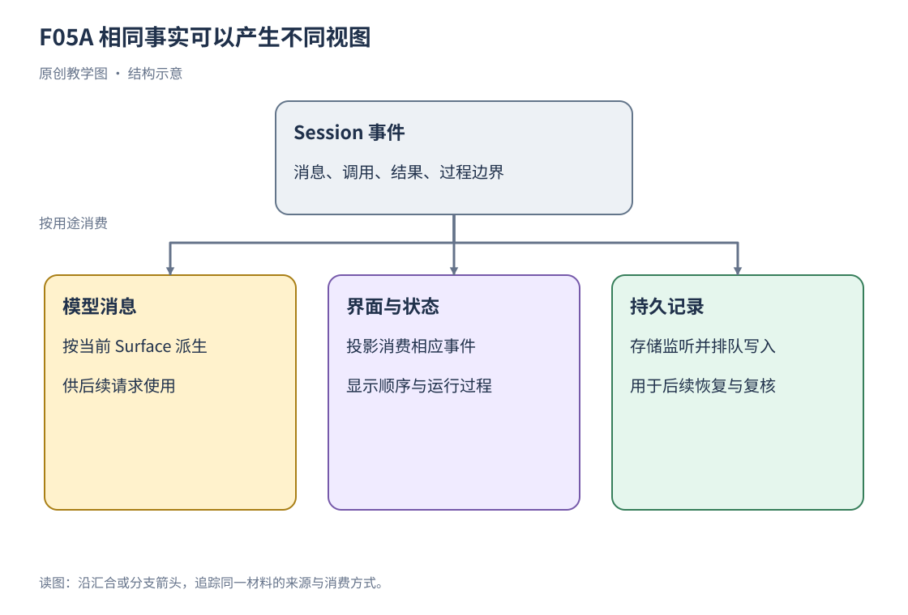

图 05A 由 Session 事件分出三个用途：模型历史按 Surface 派生，界面和状态投影消费过程事件，存储监听器排队写入持久记录。
持久日志保存已追加的底层过程事件，模型消息则由当前 Surface 派生。Surface 是参与组装下次模型请求的消息节点序列，规定哪些消息按什么顺序进入请求。Surface 管理器根据事件维护这份序列。生成途中的流式文本片段仍是临时观察；循环正式提交助手消息后，该消息才成为可交给持久化 Provider 处理的记录。提交使消息进入 Session 内存日志，flush 则等待存储写入完成。
append 怎样建立一个事实
Session.append 先创建可序列化的数据副本，再构造带序号和时间的冻结条目。可序列化表示数据能按约定转换成保存格式。接着，方法校验事件字段，并检查 Surface 约束：这条事件是否符合当前消息序列的更新规则。两项校验通过后，事件进入日志并发布。副本与冻结共同防止调用者后来修改原对象时改变已记录的历史。
随后 Session 发布该事实，消费方依各自接口更新或排队处理。消息派生 deriveMessages 遍历当前 Surface 中的消息节点，生成新的消息数组。状态投影则按注册的事件消费规则维护可查询状态。消息视图处理消息节点，状态投影处理各自关心的过程事件。
DSH 的 JSONL Provider 为每个 Session 管理一条写入通道，称为写入句柄。它监听 session/event，将新条目排入后台缓冲；收到 session/flush 后，先等待缓冲排空，再等待 writer.flush 完成。Session 通过事件通知存储，存储组件负责实际文件读写。
投影和持久化屏障
投影可理解为“按用途整理事实”。给定同一份订单记录，可以整理出当前状态，也可以整理出明细清单；软件里同理。Session 投影同样按各自的事件规则更新结果。
JSONL 的持久化链分为两层：实时监听器先把事件放进缓冲，writer.append 再按序写入文件并调用文件同步。session/flush 先等待 drainLive 排空实时缓冲，再等待 writer.flush；尚未写入事件的空 Session 会在此创建并同步头记录。文件追加或同步失败时，存储层关闭追加句柄，再把文件截回本批写入前的长度并同步，随后抛出原错误。若回退也失败，就用 AggregateError 同时报告写入错误与回退错误。成功回退后，本批可以按未推进的游标重试。
分析示例：日志行数为什么不是对话数
教学片段有一条用户消息、两条助手消息和一条工具结果，另有一条工具调用、两项轮次边界和四项步骤边界，共 11 个列出的事件。这里得到的消息数是 4，工具调用数是 1，日志片段事件数是 11；三个值回答不同问题。
统计对话消息时筛选消息事件；统计工具调用时筛选 tool/call；统计运行轨迹时再纳入轮次、步骤、请求信息和用量。回放按这些事件还原对应模型响应。
写入时间线与故障判断
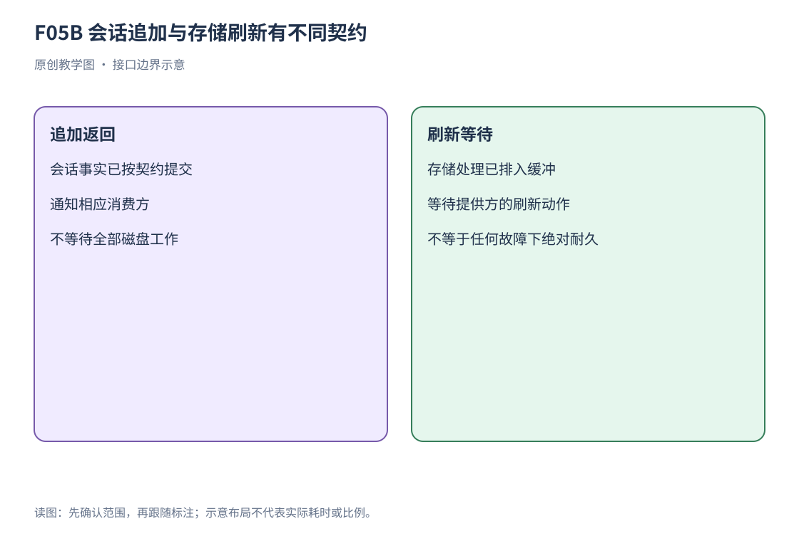

图 05B 对比 append 返回和 flush 等待。append 完成 Session 内追加与通知，flush 等待存储监听器排空并完成写入；后台写入从接到通知时就可以开始。
回到读取任务：用户输入、助手工具提议、工具调用、工具结果、助手总结和轮次边界依次进入事件序列。消息视图组织后续请求，页面更新显示，存储 Provider 写入文件。页面已经显示而写入失败时，问题出在存储链；刷新后临时文字消失时，先查它是否曾被提交为助手消息，再查对应事件是否写入文件。
常见误解
“日志里每一项都发给模型”：消息派生只处理相应的消息节点，过程边界另有用途。
“可从日志还原，所以视图必须与原日志相同”：派生视图可以按用途选择、组合和更新；压缩会在第八章进一步改变当前 Surface。
“页面显示了，所以已经保存到磁盘”：界面与存储分别消费事件。查看存储写入和 flush 的结果，才能确定对应记录是否已保存。
05.4 源码研读
E05A · 事件对象建立与验证
阅读任务：这是 Session.append 中已经获取可序列化副本之后的节选。重点观察序号、时间、数据副本和校验；后续加入日志、发布通知、返回事件是另一段逻辑。
代码类型：真实源码摘录。证据编号 E05A；下表的数字是原文件行号。
const event = deepFreeze({
type,
seq: SessionSeq(this.log.length),
time: Date.now(),
data: dataSnapshot,
...(surfaceMetadataSnapshot as { surfaceOp?: unknown; sourceEventSeqs?: unknown }),
} as unknown as SessionEvent<T>)
validateSessionEventData(event, `session event "${type}" at seq ${event.seq}`)
this.surfaceManager.validateNext(event as SessionEvent)| 原文件行号 | 写法 | 在这段流程中的作用 |
|---|---|---|
| 744 | const 保存 deepFreeze 返回值，对象开始 | 将已准备的事件字段组织并冻结，保持记录稳定。 |
| 745 | 属性简写 | 保存调用者指定的事件类别。 |
| 746 | 读取 length 后包装序号 | 按日志当前位置建立连续的 Session 事件序号。 |
| 747 | 方法调用获取当前时间 | 保存记录时间，不以时间替代序号。 |
| 748 | 显式属性赋值 | 采用之前建立的 dataSnapshot，而不是继续共享原输入对象。 |
| 749 | 展开对象，as 说明类型 | 加入已建立副本的 Surface 意图和来源关联字段。 |
| 750 | 结束对象与冻结调用，类型断言 | 把结果作为当前事件类型处理；类型断言本身不作磁盘写入。 |
| 751 | 调用事件数据校验 | 检查事件字段符合该类型的运行约束。 |
| 752 | 调用 Surface 管理者的校验 | 检查这条事件能否按当前消息视图规则追加。 |
执行推演：已有 9 项日志时，新事件的 seq 为 9。方法先冻结并校验事件；校验失败就抛错，通过后才加入日志、发布通知。
E05B · 后台写入与持久化等待
阅读任务：这两项监听由 JSONL 存储组件注册。回调在收到相应 Session 事件时执行；不是注册当场立即写入。重点区分 enqueueLive 与等待 drainLive/flush。
代码类型：真实源码摘录。证据编号 E05B；下表的数字是原文件行号。
ctx.on('session/event', (session: Session, event) => {
this.writers.get(session.id)?.enqueueLive(event, (error) => {
ctx.logger.warn(`session-persistence: background write for session "${session.id}" failed (buffered events retained): ${String(error)}`)
})
})
ctx.on('session/flush', (session: Session) => {
const writer = this.writers.get(session.id)
if (writer === null || writer === undefined) return undefined
return (async () => {
await writer.drainLive()
await writer.flush()
})()
})| 原文件行号 | 写法 | 在这段流程中的作用 |
|---|---|---|
| 535 | on 注册事件回调，箭头函数接收 Session 与事件 | 订阅 Session 新事实，稍后发生事件才进入函数体。 |
| 536 | 可选调用与回调参数 | 有对应 writer 才排入实时写入队列，并设置失败处理。 |
| 537 | 模板字符串和 warn 调用 | 后台写入失败时记录 Session 与错误，提示缓冲事件仍保留。 |
| 538 | 结束 enqueueLive 的错误回调 | 失败处理定义结束，不是把错误转成成功写入。 |
| 539 | 结束新事件监听器 | 登记的监听器继续等待后续事件。 |
| 540 | 注册另一项监听 | session/flush 是要求等待持久化边界的事件。 |
| 541 | const 获取 Map 中的 writer | Map 是按键查值的集合；这里按当前 Session 身份找到它的存储写入者。 |
| 542 | if 与 return | 没有 writer 时本监听不承担刷新工作。 |
| 543 | async 箭头函数立即调用并返回 Promise | 把内部异步排空任务交给等待 flush 的调用者。 |
| 544 | await 排空实时缓冲 | 先等待已经排入的实时事件处理完。 |
| 545 | await 等待刷新 | 再等待写入者完成其刷新契约。 |
| 546 | 结束函数并立即调用 | 向外返回这次等待任务。 |
| 547 | 结束 flush 监听器注册 | 之后 Session 服务可收集并等待这些刷新监听者。 |
执行推演：新事件发出后，如果有写入者则排入后台缓冲；后台失败会记录警告并保留缓冲事件。显式 flush 的处理获取同一写入者，先排空实时缓冲，再等待刷新。
05.5 理解检查与讲解问答
问题 1 · append 返回以后，能宣布已经完成磁盘持久化吗？
讲解：不能。追加首先完成 Session 内记录与发布，后台写入有单独的 flush 等待边界。
问题 2 · 为什么事件与聊天消息数量不同？
讲解：事件包括生命周期和状态记录，只有相应消息节点参与消息派生。
问题 3 · 恢复 Session 后，原来的外部终端一定恢复了吗？
讲解：Session 恢复对话记录和运行事实；终端进程保存在执行环境中，需要由进程 Provider 确认它是否仍在运行、连接是否可用。
第 6 章｜提示词与项目指令：下一次模型输入怎样形成
本章学习任务：追踪目录中的指令怎样被发现、组合与加入模型请求；解释指令的适用范围，以及文字规则与执行权限的区别。
06.1 基本概念
一次模型请求不是只发送用户刚打出的那句话。上下文指这一次推理能够使用的材料，包括行为规则、当前输入、历史内容和工具说明。提示词是作为材料发送给模型的文字指示；system prompt 是其中用于表达系统规则的部分，用户消息、项目指令和工具结果各自保留来源。
注册是先把某项贡献交给管理者保存，组装才是在请求需要时取出可见贡献形成材料。作用域回答贡献对谁可见；同名覆盖回答同一位置有多个版本时选择谁；排序回答不同贡献按什么顺序出现。这三件事分别决定请求内容。
项目指令描述工作区和当前文件路径相关的规则。每次模型请求前，项目指令插件先选择规则文件，将内容整理成指令消息，再与待处理输入一起进入本步。历史则从 Session 的 Surface 派生，随后与这些新材料汇合。
请求冻结为正在执行的请求固定数据副本。新输入、插件变化或压缩仍可影响下一次组装，但不能倒回去改已经提交的这一份请求。这解释了为什么引导消息要等下一步骤生效。
06.2 沿一个任务看完整流程
以“总结 README，但保留实验性功能的限制”为例，用户目标是一条来源明确的消息。system prompt 贡献说明行为规则，工具贡献说明 read 怎样调用，历史提供先前已经获取的材料；工作区指令再依据当前范围补充约束。
组装器先决定哪些贡献在当前作用域可见，再解决同名项和顺序问题。前置指令处理会清掉不再需要的待处理指令，并把这次需要的指令放入本步消息批次。用户消息在首次尝试登记，重试不再重复登记它；请求创建后获取独立配置副本。
若请求执行期间用户补充“只总结正式功能”，这句话先进入下一步输入。当前请求仍使用原来的固定材料；下一步骤重新领取并组装，才有新要求。若之后发生压缩，后续历史视图可能变化，但已经在途的请求仍不变。检查材料缺失时，应分别查可见贡献、前置消息、历史 Surface 和实际请求，而不是只在某个大字符串里找一句话。
06.3 关键机制与设计取舍
材料有不同的入口
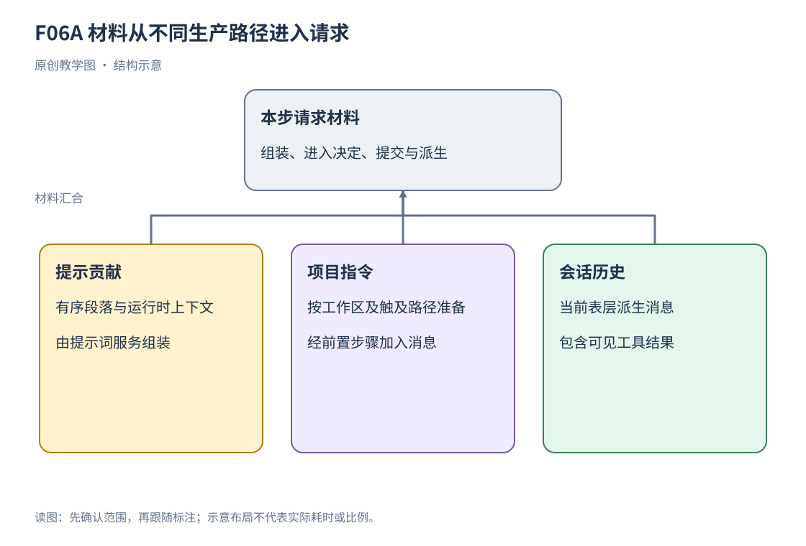

图 06A 的三路材料汇入本步请求：SystemPrompt 组装提示贡献，项目指令形成前置消息，Session 历史按 Surface 派生。它们分别保留自己的来源和排列规则。
system prompt 通常描述运行方式和工具使用等约束。运行时上下文提供当时环境材料，例如当前时间、工作目录或刚读取过的文件路径。项目指令描述工作区规则。用户消息提出当前目标，工具结果给出已获取事实。知道每类材料从哪里来，才能检查冲突、遗漏与重复。
从贡献到请求冻结
插件用 SystemPrompt.section 注册具名提示段，用 context 注册动态上下文。每项贡献带有作用域。同名项先选择当前 Agent 更近的作用域，再按服务规定的顺序排列。完整提示段另有自己的选择规则。SystemPrompt 服务根据这些规则组装本步提示词。
驱动在前置步骤领取输入，调用 assemble 得到组装结果，并把运行时上下文投影成适合本步的材料。随后进入 agent/pre-step 链。这是一串按顺序执行的前置检查关卡，决定本步是否继续，以及哪些消息进入本次请求。项目指令插件在这条链上等待相关投影就绪，再按工作区与触及路径整理指令。触及路径就是本次任务接触过的文件路径，用来确定要加载哪些目录下的规则文件。插件把选中的指令整理成上下文消息，插入将要进入步骤的批次。
进入步骤后，框架准备模型调用，记录需要的系统消息、首次进入的用户消息和请求信息，再派生并冻结请求。冻结意味着这次请求的内容不能被稍后修改的共享对象悄悄改变，下一步重新组装消息和上下文。
顺序与作用域的基础
贡献类似多个人填写同一份请求资料，但合并规则由系统决定。每项至少要有身份、范围和位置：身份帮助替换或去重，范围决定谁可见，位置决定有序组装。
消息同时保存内容与来源。项目指令来自规则文件，用户需求来自提交入口，工具结果来自执行链。框架按这些来源组织消息；一段文字里出现“系统提醒”，不会改变它原有的消息类别。
分析示例：重复材料占了多少空间
教学请求包含工具指导 800 字节、项目规则 600 字节、用户需求 200 字节、历史 2400 字节，共 4000 字节。某插件又加入完全相同的项目规则 600 字节，新总量为 4600 字节，增加 15%。
多一份相同规则没有提供新事实，还可能使来源难以辨认。合并前先识别同名项、作用域与历史中的既有材料，比盲目压缩整个请求更有针对性。项目指令用 sameContextPayload 判断等价消息，SystemPrompt 则按名称和作用域选择贡献。两条路径各自去重。
在下一步加入项目约束
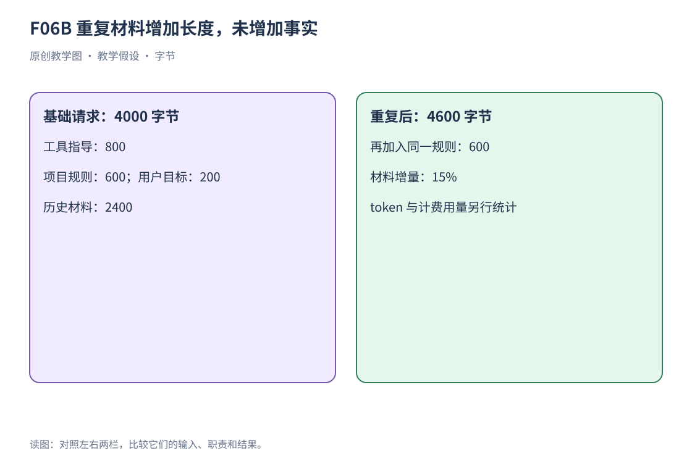

图 06B 比较重复材料的体积：基础请求 4000 字节，重复一份 600 字节规则后变成 4600 字节，增加 15%。两侧比较的是内容组成和字节数。
驱动准备模型调用时检查取消信号。工具成功访问文件后，项目指令插件按调用结果收集触及路径。当前步骤结束时，插件排队更新对应指令；下一步前置链等待更新完成，再把本次需要的规则消息加入请求。
常见误解
“所有项目指令都直接变成 system prompt”：项目指令在前置步骤中形成指令消息，再与本步输入组合；SystemPrompt 服务另行组装 system prompt。
“更长的提示词必定更可靠”：长度只描述材料体积。冲突、重复和是否被正确执行仍要检查。
“冻结一次请求就冻结整个 Session”：冻结保护本次材料；下一步可读取新消息、工具结果或新的 Surface 状态。
06.4 源码研读
E06A · 项目指令进入本步消息
阅读任务：位置是前置指令处理已经算出 desired 之后。desired 是这一步要插入的指令消息；pending 是待清理指令，decision 保存准备中的消息批次，messages 是已领取输入。重点观察去重和插入位置；指令文件的发现过程见本章前面的讲解。
代码类型：真实源码摘录。证据编号 E06A；下表的数字是原文件行号。
for (const message of pending) agent.inbox.remove(message.id)
if (desired === undefined || decision.messages.some(message => sameContextPayload(message, desired))) {
return decision
}
// Fold the context right after the claimed batch, so the direct prompt
// precedes it and the driver-appended runtime context follows it.
const lastClaimedIndex = decision.messages.findLastIndex(message => messages.includes(message))
const entered = decision.messages.toSpliced(lastClaimedIndex + 1, 0, desired)
return { ...decision, messages: entered }| 原文件行号 | 写法 | 在这段流程中的作用 |
|---|---|---|
| 332 | for...of 遍历 pending 并调用 remove | 先从 Agent Inbox 移除不再保留的待处理指令消息。 |
| 333 | if、逻辑或与 some 检查 | 没有新指令或已经有等价内容时，不重复插入。 |
| 334 | return 返回既有决定 | 本分支保持当前批次不变。 |
| 335 | 结束 if 分支 | 只有需要新增内容的情况继续。 |
| 336 | 原注释说明插入相对位置 | 指令放在领取输入之后。 |
| 337 | 原注释说明后续追加的运行材料 | 直接输入在前，驱动后补的运行上下文在后。 |
| 338 | findLastIndex 与 includes | 在决定的消息数组里找到最后一条属于领取批次的输入。 |
| 339 | toSpliced 建立新数组 | 在该位置之后插入 desired，不原地改写旧数组。 |
| 340 | 展开对象并替换 messages | 返回新的前置决定，供本步请求组装使用。 |
执行推演：desired 已经包含在批次时，返回原决定；需要新指令时，找到最后一条已领取输入，把 desired 放在它之后，返回新的批次对象。
06.5 理解检查与讲解问答
问题 1 · 项目指令一定进入 system prompt 吗？
讲解：项目指令由前置步骤形成消息，并加入本步材料；system prompt 则由 SystemPrompt 服务组装。两条路径在准备请求时汇合。
问题 2 · 引导消息到来后，已经发出的请求会改变吗？
讲解：不会倒改在途请求。新消息在相应领取边界影响后续请求。
问题 3 · 重试为什么不重复登记用户消息？
讲解：首次尝试登记后已有这份 Session 事实，再次登记会把一个输入变成重复历史。
第 7 章｜Skill 的按需读取：目录可见为什么不等于正文已加载
本章学习任务：区分 Skill 目录、Skill 正文与已经执行的动作；说明按需加载怎样增加材料，以及为什么加载 Skill 不等于注册新工具。
07.1 基本概念
Skill 把一项做事方法整理成说明和相关资源，例如“如何分析某类项目”。目录摘要帮助模型知道有哪些方法，正文才说明具体步骤。模型先通过摘要选择 Skill，再获取正文。
Skill 服务负责发现、列出和读取定义，skill 工具让模型按名称获取正文。调用权限分别声明是否允许用户调用、是否允许模型调用；读取入口按相应标志检查。目录可见性用于发现候选，调用标志决定能否从这一入口加载。
加载是实际获取正文并形成可供模型使用的内容，不是装上一个新的操作系统权限。正文可以指导模型组合已有工具，但工具仍受自己的注册、准入和执行边界约束。用户显式指定 Skill 与模型主动选择 Skill，进入材料的路径也不同。
需要区分三个观察点：目录是否包含名称，读取是否获取定义，正文是否进入本次请求。排查“它没有按 Skill 做事”时，先找这三个证据，再评价正文的方法是否清楚。
07.2 沿一个任务看完整流程
假设目录里出现 report-skill，摘要说它用于整理技术报告。模型先根据摘要判断有用，再调用 Skill 读取工具。工具根据当前工作目录、Agent 范围和取消信号获取目录，找到名称以后检查它是否允许模型调用；通过后再获取完整定义。
若目录里的定义已经移除，查询不到名称就报错；名称仍可见但禁止模型调用时，工具返回入口限制错误。获取正文以后，框架把它整理成模型材料，后续模型请求便能使用其中的方法。
用户显式调用的入口会检查用户可调用条件，符合时才建立 Skill 调用来源的指令消息。未知名称和不符合条件的文字不会都被解释为命令。正文中的方法通过后续模型推理与工具调用落实。
07.3 关键机制与设计取舍
先知道名称，再获取正文
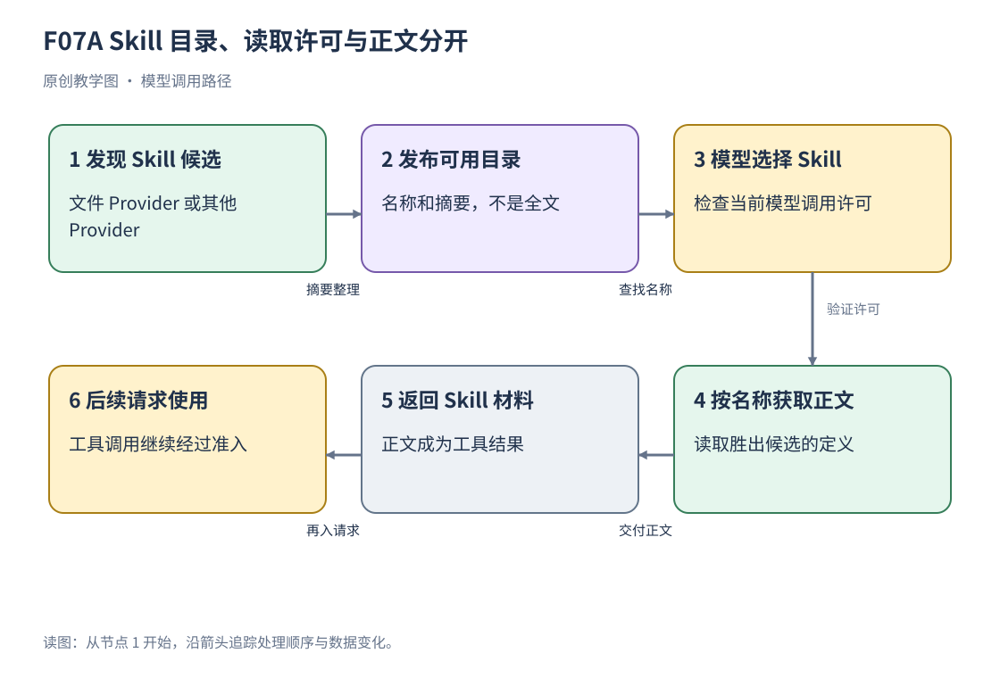

图 07A 沿模型调用路径展开：发现候选、发布摘要、选中名称、检查模型调用许可、获取正文。正文作为工具结果记录，随后进入下一次模型请求。
注册表与 Provider 分别负责什么
SkillRegistry 管理可见 Provider 和候选。文件系统 Provider 负责从相应目录发现 Skill 并读文件内容。list 返回摘要列表；get 按名称选择候选；同名项依次按 Provider 优先级、Provider 顺序和本地顺序取舍，把候选定位信息返回对应 Provider 读取，再校验完整定义。这使消费方不必固定绑定某个文件目录实现。
工具插件在前置步骤把当前 Agent 可调用的 Skill 目录写成持久提示消息。目录包含名称与说明，正文按需读取。目录发生变化时，插件发布替换消息；发现过程不完整时，保留已有目录。模型调用 skill 后，执行体检查名称、可见摘要和模型调用标志，再获取完整定义并返回正文。
用户直接调用走另一条路径。前置步骤检查直接用户消息第一行的 /<name>，名称存在且允许用户调用时，加载正文并注入本步消息。模型调用 skill 工具则把正文记录为工具结果，供后续步骤使用。消息来源与调用标志决定这两条路径各自何时生效。
按需读取不等于权限授权
按需读取是到需要时再获取内容。Skill 正文是材料，可以指导做事，但读取它不会自动增加文件、网络或发布权限。工具是否可用、动作是否获准和运行环境怎样限制，仍有独立控制层。
目录摘要帮助选择 Skill，正文提供步骤、参数和限制。例如“用于文档整理”只说明用途，具体怎样整理要在加载正文后确定。Provider 读取失败、名称消失或入口禁止调用时，工具返回对应错误。
分析示例：按需材料量
教学目录有三个 Skill，正文分别是 2000、3000、5000 字节，目录摘要合计 600 字节。本次只获取第一个 Skill，目录加正文为 2600 字节；若都加载则为 10600 字节，差额 8000 字节。计算假设两种方案都携带同一目录，忽略其他请求材料。
本次请求只携带目录和选中正文，省去另外两份正文。多一次 Skill 查找也有调度和读取代价；Skill 选错、说明太含糊或正文过时，可能降低效果。合理比较应同时看材料、获取次数与实际任务检查。
回到项目说明整理
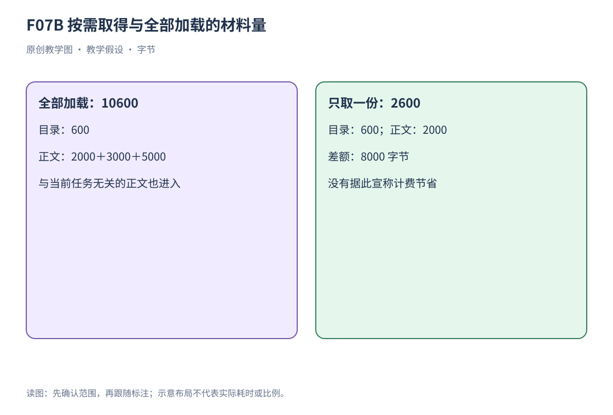

图 07B 左侧携带三个 Skill 的全部正文和同一目录，共 10600 字节；右侧携带目录与第一个正文，共 2600 字节，差额为另外两份正文的 8000 字节。
Skill 正文指导报告结构，read 结果提供项目事实。模型把两者结合，生成注明来源和限制的总结。
常见误解
“目录列出一百个 Skill，所以上下文已包含一百份全文”：目录与正文有不同契约，应查看实际获取材料。
“任何页面里出现 /Skill 名 都会触发”：直接调用手势有消息来源与可调用策略限制。
“Skill 加载后可以绕过工具准入”：Skill 改变材料和工作方法，准入仍在第十一章的工具链里。
07.4 源码研读
E07A · 读取正文前的可见性和入口检查
阅读任务：这是 Skill 读取工具执行体中的节选。args.name 是请求的名称，exec 提供 Agent 与取消信号；重点区分目录查询、模型调用条件与获取正文。后续结果构造不在本段。
代码类型：真实源码摘录。证据编号 E07A；下表的数字是原文件行号。
const lookup = { cwd: exec.agent?.session.header.cwd, signal: exec.signal, scope: exec.agent }
const summary = (await ctx.skills.list(lookup)).find(skill => skill.name === args.name)
if (!summary) {
throw new Error(`skill "${args.name}" is unknown or no longer available`)
}
if (!isModelInvocable(summary)) {
throw new Error(`skill "${args.name}" is not available for model invocation`)
}
const skill = await ctx.skills.get(args.name, lookup)
if (!skill) {
throw new Error(`skill "${args.name}" is unknown or no longer available`)
}| 原文件行号 | 写法 | 在这段流程中的作用 |
|---|---|---|
| 133 | 对象和可选属性访问 | 把 Session 工作目录、取消信号和 Agent 范围组合成查询条件。 |
| 134 | await 后 find，箭头函数比较名称 | 获取该范围目录并选中请求名称的摘要。 |
| 135 | if 取反判断 | 没有摘要时进入错误分支。 |
| 136 | throw 构造错误与模板文字 | 名称未知或已不可用时中断读取；反引号串里的 ${…} 会替换成具体名称。 |
| 137 | 结束第一个 if | 找到摘要后继续下一项条件检查。 |
| 138 | 函数调用与取反 | 检查摘要是否允许模型通过这个入口调用。 |
| 139 | throw 抛出入口限制错误 | 可见但不可由模型调用的 Skill 不能继续加载。 |
| 140 | 结束第二个 if | 通过入口条件才继续。 |
| 141 | await get | 向 Skill 服务获取完整定义，不能把目录摘要当作正文。 |
| 142 | if 检查加载结果 | 目录查询以后定义仍可能消失。 |
| 143 | throw 抛出已不可用错误 | 没有正文时停止，不编造 Skill 内容。 |
| 144 | 结束最后一个 if | 有效定义交给后续渲染和结果处理。 |
执行推演：目录中没有名称时第一个分支抛错；有名称但不允许模型调用时第二个分支抛错；都通过才调用 get，之后还要处理定义已消失等情况。
07.5 理解检查与讲解问答
问题 1 · 看到 Skill 摘要以后，正文是否已经可用？
讲解：还没有。摘要帮助选择，读取工具获取完整定义后才能形成正文材料。
问题 2 · Skill 可见但不允许模型调用，会怎样？
讲解：读取入口检查调用条件，不能因名称出现在目录中就放行。
问题 3 · Skill 能否自行提高工具权限？
讲解：不能。Skill 提供方法与说明，真实工具仍经过本身的准入和执行限制。
第 8 章｜上下文压缩：让历史变短需要付出什么
本章学习任务：说明上下文为何有容量限制，哪些历史可被压缩，哪些事实需要保留；比较摘要、检索、token 估计与真正的语义搜索。
08.1 基本概念
模型一次请求可容纳的材料有容量限制。token 是模型处理文字时使用的编码单位，tokenizer 把文字编码成 token，词数、汉字数和 token 数分别统计。上下文压力把当前材料的 token 计量与模型容量比较。TokenMeter 分别记录本地估计和可复用的 Provider 用量信息。
压缩（compaction）将选定历史改成较短表示，供后续请求使用。例如，把十次文件调查整理成“已读哪些文件、得到什么结论、还缺什么”。原始事件留在日志中，当前 Surface 则使用摘要表示这段历史。
压缩不是无损编码：摘要可能遗漏细节。选区要保持工具调用与结果成对，并保留最近一段历史。选择边界时检查配对平衡；仍未关闭的步骤留在选区外，而不是交给摘要补造缺失结果。稳定性检查确认准备摘要期间，相关依赖没有变化到使旧摘要失效。提交是把准备好的结果正式纳入 Session 视图的动作，区别于仍在生成中的草稿。
另有裁剪和 spill：裁剪移除选定可省略内容，spill 把长内容放到存储并返回取回入口。三者都能缩短当前请求，却改变了不同东西，不能用同一个“压缩掉了”概括。
08.2 沿一个任务看完整流程
假设本轮准备请求时材料接近容量，压缩插件在前置步骤测量压力、选择可处理的历史范围、生成较短表示。若选不到范围，就没有压缩结果；若范围可处理，生成期间仍要保持关联条件，提交前再次检查稳定性。
流程先追加 compaction/start，在请求摘要前建立压缩锁。摘要通过稳定性检查后，代码依次记录 compaction/summary、替换 Surface 的检查点消息和 compaction/end。开始以后的失败会进入收尾分支，尝试追加一次结束事件；结束事件本身失败时，未配对的开始标记继续占用锁。已追加的记录保留在 Session 中，错误按 summary 或 commit 阶段报告。自动压力钩子捕获错误、记录警告后继续前置链；上下文溢出恢复则按策略裁剪、重新计量并选择范围。
用一个小例子检查信息损失：原文写“功能 X 是实验性的，只在某后端提供”，摘要若只保留“有功能 X”，字数更少却改变了约束。比较前后应该检查任务仍需要的结论、来源、未完成事项和调用关联。缩短材料为后续请求腾出容量，摘要中的功能范围则决定模型能否准确回答。
08.3 关键机制与设计取舍
同一历史的两种形态
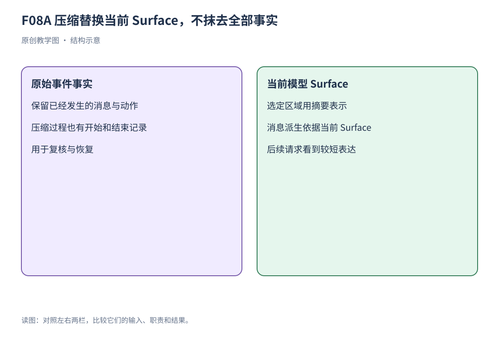

图 08A 左侧保存原始事件，右侧展示当前 Surface。压缩在 Surface 上用摘要替换选中区域；原始消息、调用和压缩过程记录继续留在日志里。
触发条件与压缩主链
基本压缩插件有两个自动入口：前置步骤检测上下文压力，以及请求恢复链处理 Provider 确认的上下文溢出。compactIfNeeded 先检查目标、策略和计量状态。压力入口根据模型容量计算阈值，未达到阈值就返回；选不到安全区域时，也返回而不请求摘要。
选区确定后，流程检查 Surface 范围和压缩事务状态。事务在这里指由开始、摘要、替换消息和结束标记组织的一次压缩流程。开始标记先建立锁，摘要返回后再检查选区稳定性，通过后按顺序追加提交记录。选区发生冲突时，稳定性检查抛错，流程转入失败收尾。
前置压力压缩失败时，插件记录警告，驱动继续原有前置链。上下文溢出恢复由目标策略和次数上限决定是否再尝试。手工压缩通过维护阶段预留驱动，检查空闲状态与取消信号，并在结束标记追加后等待存储 flush。
逻辑视图和信息保留
Surface 可以理解为当前需要呈现给模型的消息节点集合。历史事实记录发生过什么，Surface 选择当前怎样表示这些事实，两者职责不同。摘要以较短文字保留重点，细节和原文措辞会被省略。项目名、限制条件、路径和未完成事项往往比普通叙述更需要保留。
长期记忆通过存取和检索把其他任务的材料带回请求；compaction 调整当前 Session 的历史表示。语义检索中的 embedding 把文字编码为用于相似度比较的数字向量，第 12 章再介绍这类外部服务。
分析示例：长度与额外成本分开算
教学区域原为 12000 字节，摘要为 3000 字节，当前可见材料减少 9000 字节，即该区域缩短 75%。但为了生成摘要，流程仍要进行模型请求，产生输入与输出用量；评价总用量时，需要把摘要请求计入。
设后续原本需要三次重复携带该区域，简化教学口径下，材料传输字节差额为 3×9000＝27000 字节。第 17 章把后续请求用量、缓存用量和这次摘要开销放在一起比较。若摘要漏了“某功能尚未稳定”，总结质量还可能下降。
取舍因此不是越短越好。小摘要降低后续材料压力，保留较多细节则可能更有利于任务正确性。比较时需要相同任务检查，而不只看压缩比例。
两份摘要的区别
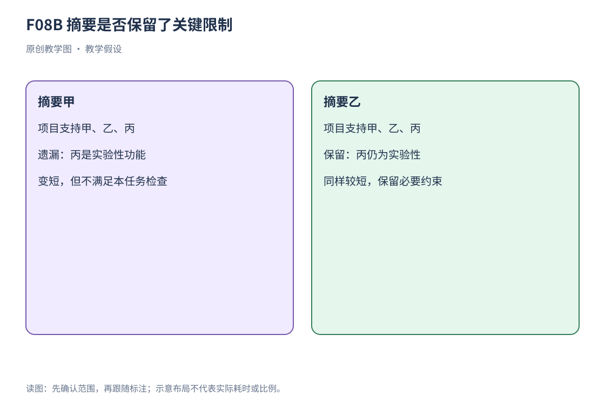

图 08B 对比两份摘要：甲列出功能甲、乙、丙，乙同时保留“丙仍为实验性”的限制。总结项目功能时，乙能够提供本任务需要的完整约束。
摘要生成失败时，选区仍采用原历史。提交阶段失败时，先前已追加的摘要或替换消息可能已经留在 Session 中，代码记录 commit 错误并处理结束标记。排查时要定位失败发生在哪次 append，以及当前 Surface 和压缩锁的状态。
常见误解
“压缩就是删除历史”：当前 Surface 替换不等于抹去所有原始事实。
“生成了摘要就永久记住”：跨 Session 发现和检索不是本流程的默认能力。
“越短的摘要越优”：必须结合本任务需要保留的事实与约束检查。
08.4 源码研读
E08A · 提交前稳定性检查与结束记录
阅读任务：这是摘要已经生成后的提交路径，不是整个压缩函数。dependencies、session 和 summarized 保存本次准备依据，lifecycle 保存本次压缩身份；owner 是这段提交的归属标记，没有归属时先响应取消；startEvent 是压缩开始事件，用于把提交与开始记录关联；外层 catch 还会记录失败阶段和关闭记录。
代码类型：真实源码摘录。证据编号 E08A；下表的数字是原文件行号。
if (options.owner === null) signal?.throwIfAborted()
assertStable(dependencies, session, summarized)
stage = 'commit'
const pending = commitCompactionBody(session, startEvent, summarized)
closing = true
const endEvent = session.append('compaction/end', lifecycle)
closed = true| 原文件行号 | 写法 | 在这段流程中的作用 |
|---|---|---|
| 232 | if 与可选方法调用 | 这段提交没有归属（owner 为空）时先响应取消，避免继续正常提交。 |
| 233 | 调用检查函数 | 确认摘要依据与当前 Session 仍满足稳定条件。 |
| 234 | 字符串赋值 | 将失败归因阶段切到 commit，供外层异常处理使用。 |
| 235 | const 保存提交结果 | 把已准备的摘要交给 Session 提交操作。 |
| 236 | 布尔状态赋值 | 标记已经进入关闭压缩记录的阶段。 |
| 237 | 追加事件并保存返回值 | 记录本次 compaction/end，形成对应生命周期终结。 |
| 238 | 布尔状态赋值 | 标记关闭记录已完成，避免外层再次按未关闭状态处理。 |
执行推演：稳定性检查不通过时，正常提交不会继续；通过后提交摘要，追加 compaction/end，再建立完整结果。压力触发、无可用选区和失败收尾的流程见本章前面的讲解。
08.5 理解检查与讲解问答
问题 1 · 摘要更短是否证明压缩更好？
讲解：压缩率只衡量材料变短了多少。还要对照原文检查任务约束、来源和未完成事项是否保留，再检查后续回答是否满足任务要求。
问题 2 · 压缩与 spill 改变的东西相同吗？
讲解：不同。压缩形成较短表示；spill 保存长内容并提供取回入口。
问题 3 · 生成摘要期间来源变了，为什么要再检查稳定性？
讲解：防止把基于旧依赖生成的摘要提交成当前有效材料。
第 9 章｜流式输出与重试：一次失败怎样留在同一步里
本章学习任务：追踪模型路由、请求准备、流式结果与重试；说明哪些内容能进入后续工具阶段，哪些失败仍需单独处理。
09.1 基本概念
流式响应不是一条立即得到的完整回答，而是一段段到达的数据。一个片段可以是文字、工具调用信息、用量或结束信息，循环持续收集片段，直到收到 finish 或消费抛错。适配器把特定模型服务的交互转成项目统一接口；Provider 指提供这项能力的接入方，Provider 与模型选择决定这次请求实际交给谁。
限流是服务限制一段时间里可接收的请求数量；超时是等待超过规定边界。它们都可能产生失败，但恢复方式由策略决定。
重试是在某次执行失败后重新尝试。恢复策略决定哪些失败可以重试，以及要作哪些准备；agent/request-error 链返回 retry 时，循环才发起下一次尝试。失败尝试产生的临时内容可以被观察，但不能直接作为成功助手消息执行其中的工具提议。
请求先解析模型路由和配置，再获取流并消费片段。流正常结束后，驱动检查 finish：成功则提交助手消息，错误或中止则记录失败尝试并询问恢复链。消费过程中直接抛出的异常走 catch 分支，结算已开始的尝试后继续抛出；这一分支与 finish 携带失败状态的恢复入口分开。
当 finish.kind 为 max-tokens 时，循环先提交已经生成的助手消息，再返回 max-tokens 结束原因，跳过该消息的工具执行。这里达到的是当前请求的输出上限，与上下文过长触发的压缩恢复分开处理。
09.2 沿一个任务看完整流程
假设第一次尝试先到达文字片段，再收到失败终结。临时流可供界面显示进度；循环记录失败事实，向恢复链交出失败类型、模型 Provider、重试策略和取消信号。如果恢复链没有返回 retry，抛出对应模型错误；返回 retry 才进入下一次尝试。
| 到达的内容 | 循环处理 | 能否进入工具执行 |
|---|---|---|
| 正在生成的片段 | 更新临时流状态 | 先显示临时进展 |
| 失败尝试的工具提议 | 记录尝试失败并走恢复 | 不走成功工具阶段 |
| 成功终结的助手消息 | 建立消息并提取工具调用 | 再交给通用准入链 |
重试并没有重新接纳一次用户任务。已经登记的用户输入不应重复追加；请求准备也保持对应的配置语义。每次重试重新准备调用，恢复处理可以改变后续请求配置。turn 和 step 保持不变，attempt 增加。
09.3 关键机制与设计取舍
临时输出与最终事实
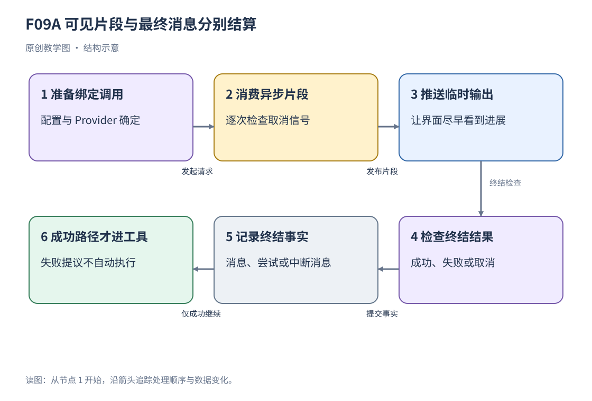

图 09A 把临时输出和正式提交分开：片段先更新界面，finish 决定成功、失败或取消，循环再记录助手消息或失败尝试。完成且未达到 max-tokens 的消息才进入工具调用判断。
一次调用怎样绑定 Provider
LLM 服务的 prepareCall 按 provider 标识查找适配器，解析目标模型与配置，返回绑定这次调用的 prepared call。它保存冻结配置与重试策略，且只能分派一次。每次重试重新准备调用，适配器将具体服务的响应转换成统一流。
DeepSeek 适配器把响应转换成异步片段，并组合取消信号。空闲监测统计等待新片段的时间，超出阈值就产生超时错误。超时、取消和传输失败分别分类；结束时停止消费，并尝试关闭逐项提供片段的迭代器。关闭失败作为诊断信息保留。
驱动用 for await 消费片段，逐次检查取消信号并推送临时输出。正常终结生成助手消息并记录；符合请求错误恢复流程的失败先记录尝试，再经 agent/request-error 链决定是否重试。没有 retry 决定时抛出 LlmError；已取消时由取消信号结束等待。
异步迭代的够用基础
Promise 是将来的一次结果，异步可迭代对象则是分次到来的序列：for await 每轮向它索取下一个片段，拿到就处理，取完为止。例如一条流依次交出文字甲、文字乙和结束信息，循环不是一次拿到三项，而是先等待甲并处理，再等待乙并处理，最后依据结束信息判断完成。
for await 每次等待下一个片段，直到迭代器结束。驱动随后读取 finish，确定这次响应怎样结算。取消信号沿驱动和适配器传递，各层在检查到取消后停止后续消费，并进入连接清理。
分析示例：重试等待算在哪里
教学轨迹为第一次尝试用时 400 ms 后失败，退避等待 300 ms（退避：失败后先等待一段时间再重试的策略），第二次尝试用时 700 ms 后成功。不计其他开销，模型阶段共 400＋300＋700＝1400 ms，其中请求尝试时间 1100 ms，等待时间 300 ms，尝试数 2。
若用户在退避等待中取消，流程在第二次尝试开始前结束，此时只有一次请求。重试能够重新处理临时故障，也会增加等待和用量；Provider 与恢复插件共同决定重试策略。
失败、取消与成功走不同出口
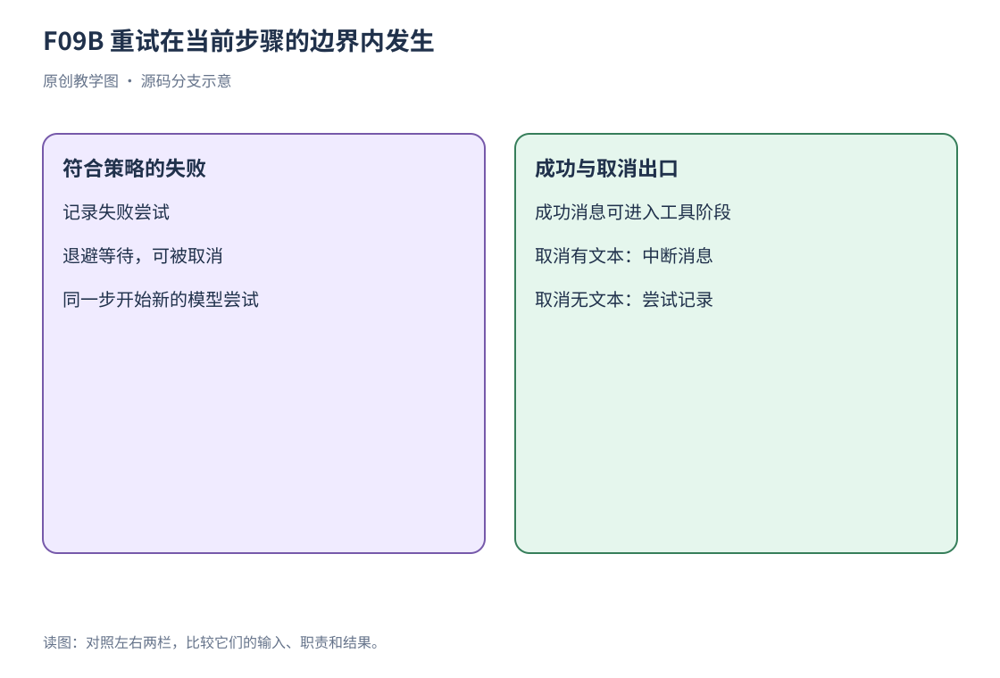

图 09B 左侧展示可重试失败的处理，右侧列出成功和取消出口。失败记录 attempt 后等待恢复；取消时，有保留文本就提交 interrupted 消息，无文本就记录 attempt。
回到 README 任务：第一次模型流失败，符合策略则在本步重试；第二次成功给出读取调用，才进入工具执行。文件结果进入下一步，总结成功后再检查产物。这样避免把失败输出的工具提议当成已准备用来执行的动作。
常见误解
“每个 chunk 都是一条助手消息”：片段属于尝试中的暂态流，最终消息有自己的提交边界。
“重试只是再次发送同一函数，在哪里都一样”：重试位置决定是否重复材料、工具副作用（对外部世界产生的实际影响，例如写文件）或其他提交。
“取消后保留了文本，所以任务成功”：应检查 interrupted 与结束原因，并另做产物判断。
09.4 源码研读
E09A · 配置复制与冻结
阅读任务：这是 prepareCall 方法内部的准备片段。config 已指明 Provider 与模型，registration 找到其适配器；重点是解析后的配置怎样变成独立副本，而不是本段就已经消费模型输出。
代码类型：真实源码摘录。证据编号 E09A；下表的数字是原文件行号。
const registration = this.registration(config.provider)
const adapterCall = await registration.adapter.prepareCall(config.provider, config.model, signal)
const modelInfo = this.normalizeModelInfo(registration, config.model, adapterCall.model)
const resolved = this.resolveCallWithInfo(config, modelInfo)
const resolvedConfig = deepFreeze(structuredClone(resolved.config))
const context = resolved.context === undefined
? undefined
: deepFreeze(structuredClone(resolved.context))| 原文件行号 | 写法 | 在这段流程中的作用 |
|---|---|---|
| 937 | const 与属性读取 | 按 config.provider 查找已登记的 Provider 适配器。 |
| 938 | await 适配器准备操作 | 获取该路由的模型准备信息，带入取消信号。 |
| 939 | 函数调用与属性读取 | 将适配器模型信息规范成项目使用的形式。 |
| 940 | 函数调用 | 结合模型信息解析本次调用配置与上下文。 |
| 941 | structuredClone 与 deepFreeze 嵌套调用 | 先复制配置再冻结，隔开共享可变输入。 |
| 942 | 三元表达式开始 | 判断本次解析结果是否包含随调用携带的附加 context（上下文材料）。 |
| 943 | 问号分支 | 未提供就保持 undefined，不凭空添加内容。 |
| 944 | 冒号分支 | 有 context 时复制并冻结，形成同样稳定的请求准备资料。 |
执行推演：原 config 后续被别处修改时，已复制并冻结的 resolvedConfig 不跟着变化。没有 resolved.context 时保持缺省；有则同样建立冻结副本。实际网络流在后续执行阶段获取。
E09B · 失败以后是否再尝试
阅读任务：位置在失败已经登记、恢复链已经返回 action 之后。本段处于尝试循环内；finish 保存本次尝试的失败终结信息。重点是没有 retry 时怎样结束，以及 continue 返回哪个循环。
代码类型：真实源码摘录。证据编号 E09B；下表的数字是原文件行号。
signal.throwIfAborted()
if (action?.kind !== 'retry') {
throw new LlmError(finish.failure.message, finish.failure.code, finish.failure)
}
continue| 原文件行号 | 写法 | 在这段流程中的作用 |
|---|---|---|
| 505 | 调用信号检查 | 已经取消时先停止，不被重试行动覆盖。 |
| 506 | 可选属性与不等比较 | 只有明确的 retry 才允许正常进入下一尝试。 |
| 507 | throw 与 new | 用失败消息、代码和详情构造 LlmError，交给上层错误路径。 |
| 508 | 结束 if 分支 | retry 情况跳过抛错。 |
| 509 | continue | 回到尝试循环下一轮，而不是完成本轮用户任务。 |
执行推演：action 没有值或 kind 不是 retry，就抛出模型错误；kind 为 retry 且未取消，才进入同一步骤的下一次尝试，不进入本次失败响应的成功工具阶段。
09.5 理解检查与讲解问答
问题 1 · 失败流里出现工具提议，是否应该执行？
讲解：不进入成功助手消息的工具阶段。先记录失败并按恢复行动决定下一次尝试。
问题 2 · 每次请求失败都会重试吗？
讲解：不会。恢复链必须返回 retry，且取消等条件仍有效。
问题 3 · 临时文字已经显示，为什么后来还会失败？
讲解：片段到达只说明生成正在推进，成功需要相应终结与后续处理完成。
第 10 章｜插件框架与运行配置：这些部件怎样装成一个应用
本章学习任务：从配置条目说明插件怎样装配、怎样获取所需服务；区别 profile、条目修改与运行实例，并定位热更新的边界。
10.1 基本概念
插件是一份可装入应用的能力实现，例如注册文件工具的模块。配置给出本次采用的参数，profile 选择整组插件及其设置。启动程序按配置装入插件，插件再注册服务、工具和监听器。
依赖指一个部件运行前需要另一项能力，例如文件工具需要工具注册表与文件服务。依赖注入让框架提供这些能力，而不是让每个插件自行创建一份。Context 是 Cordis 用于访问当前可用服务与登记资源的对象。注册和资源清理属于插件生命周期：装入、运行、卸载各自有动作。
条目是一项插件及其设置的记录，补丁描述这次怎样修改这些记录。配置合成规则决定补丁怎样作用到原条目。注册表保存名称与实现等对应关系，让使用者在需要时找到能力。
启动入口先读取运行选择与配置层，再合成条目、加载插件，满足依赖后执行插件的装入函数。函数执行期间注册工具，不表示文件已经读取。条目补丁按 id 定位插件，对补丁中的每个条目字段直接赋值。
热重载在运行时替换符合条件的部件。内部模块可以局部刷新，外部依赖变化则走完整重载路径。Cordis 在卸载时调用已登记的清理函数，例如撤销工具注册或事件监听；第 19 章展开资源登记与释放的机制。
10.2 沿一个任务看完整流程
以文件工具插件为例：配置给出读取上限，启动程序把合成后的条目交给加载器；依赖可用以后执行 apply。apply 检查参数，再注册 read 等工具。此时注册表变了，但磁盘文件没有因注册而被读取。用户任务中出现合法调用，才进入执行函数。
配置层先展平成有序补丁列表。applyEntryPatches 按 id 找条目，再用补丁值覆盖对应字段；config 也是一个整体字段。insert 可以向顶层或指定分组加入条目，新条目随即进入 id 索引，供后续补丁修改。缺少目标、目标不是分组或 name 校验不匹配时，函数记录警告并跳过该补丁。
卸载时，框架处理登记的资源释放。热重载还需分析模块依赖：可替换的内部模块走局部处理，外部依赖变化会设置完整重载并调用退出路径。局部替换先释放旧实例的登记资源，再装入新实例；完整重载交给退出和重启路径处理。
10.3 关键机制与设计取舍
配置层怎样汇合
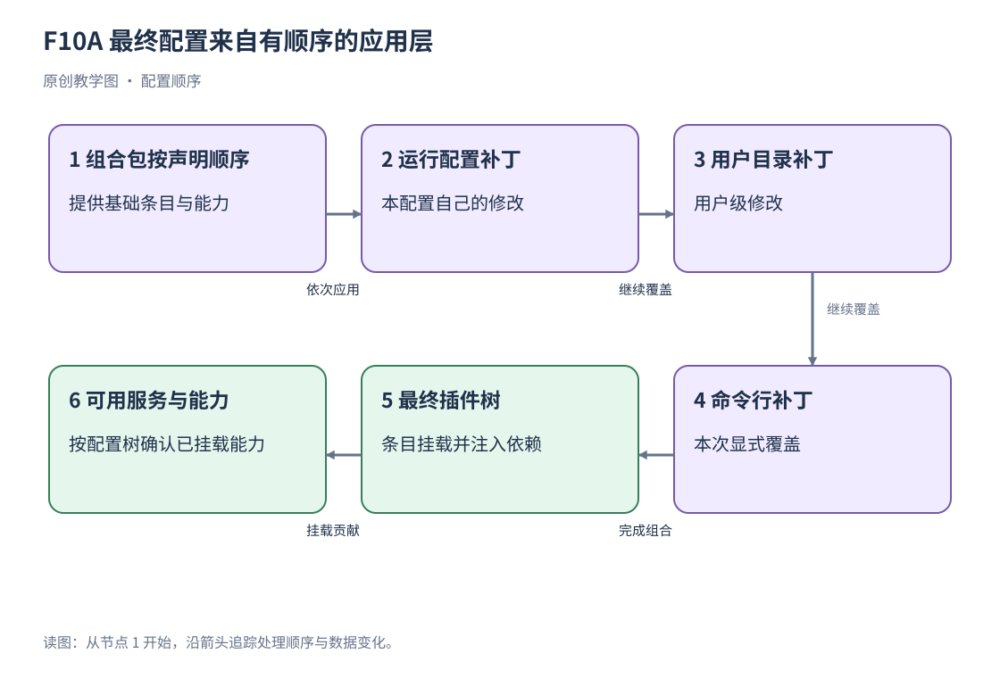

图 10A 按配置应用顺序排列：bundle、profile patch、用户目录 patch、命令行 patch。最终条目交给加载器，满足依赖的插件完成挂载。
启动到挂载的主链
CLI 是 Command-Line Interface，即通过终端命令与选项操作程序的入口。它解析启动参数，profile 模式进入 runProfile。运行器准备环境，读取组合包和有序补丁，得到 Cordis 配置条目。每个条目保存插件及其设置；多个条目按分组组织成应用树。boot 将树中的插件挂载到应用，插件由此提供服务、工具和事件监听。
消费者通过 Context 访问服务，例如文件工具使用文件服务，循环使用模型服务。Provider 实现服务接口，profile 决定挂载哪一份实现。查看应用树，可以确定当前运行使用哪些包及其配置。
官方架构中的 base 是多种 profile 的共享第一层，而 sdk-minimal 是例外：它的组合包拥有完整显式配置树，不应用 base。不同 profile 对热重载的设置也不同。热重载在可局部替换时使相应变化生效；需要完整重载的情形仍走退出与重新启动路径。
依赖注入与生命周期
依赖注入（dependency injection）让插件声明所需服务，再由配置环境提供。框架在当前作用域解析服务；依赖未满足时，实例等待可用环境，服务注册冲突则进入错误处理。作用域决定插件树中哪些位置可以获取这项服务。
插件从安装到卸载的存续期间称为生命周期。注册产生的副作用通常随插件卸载而撤销，例如移除事件监听或能力声明。事件监听是插件为某类事件登记的响应。撤销这项注册后，插件就不再接收相应通知；插件已发出的网络请求和已写入的文件仍由各自服务处理后续状态。
分析示例：覆盖整个 config
设一个插件条目的 config 是 {timeout: 100, limit: 20}，后续补丁给同一 id 设置 {timeout: 300}。applyEntryPatches 直接替换 config，结果只剩 timeout: 300。
加载插件时，配置 schema 再为缺省字段应用默认值。若要显式保留 limit: 20，后续 config 中也应写出它。条目覆盖和插件配置解析是两个连续阶段。
Provider 替换的含义
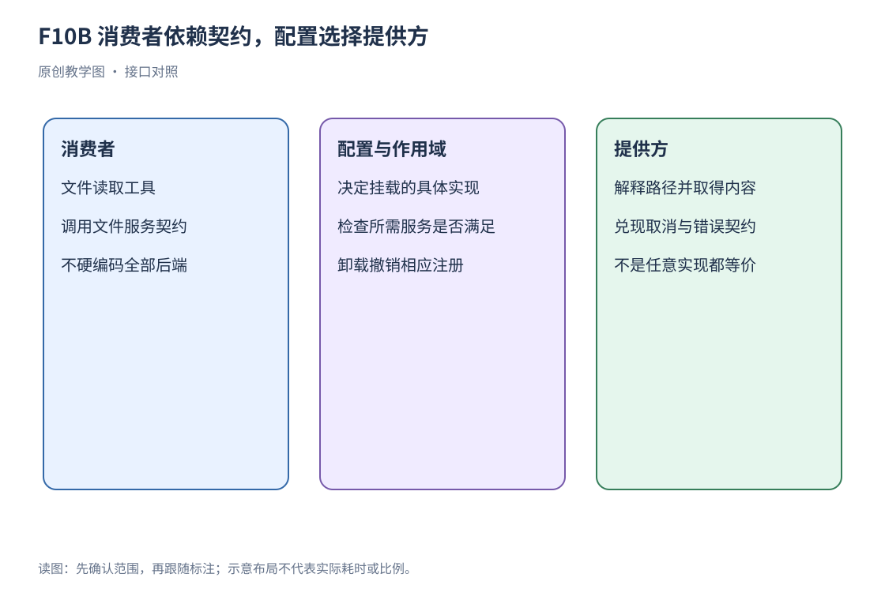

图 10B 的三栏是消费者、配置与作用域、Provider。read 调用文件服务接口，配置选出具体实现，Provider 负责路径、读取、取消和错误处理。
读取 README 的 profile 需要装入循环、工具、文件服务和模型 Provider。所选模型路由与工具作用域继续决定本次可用能力。Skill、压缩和 MCP 也按当前配置树启用。
常见误解
“包安装了，能力就启用了”：安装与挂载是不同动作，当前 profile 决定是否进入应用树。
“所有 profile 都带 base”：sdk-minimal 的明确例外推翻这一概括。
“卸载插件会撤销它做过的一切”：卸载调用已登记的释放函数；文件写入和远端请求由各自服务处理后续状态。
10.4 源码研读
E10A · 配置层交给条目补丁规则
阅读任务：这是 composeEntries 完整函数。layers 是启动阶段获取的配置层集合，warn 是可替换的警告回调；重点看展平、复制和真正执行合成规则的位置。
代码类型：真实源码摘录。证据编号 E10A；下表的数字是原文件行号。
export function composeEntries(
layers: readonly PatchOptions[][], warn: (message: string) => void = () => {},
): EntryOptions[] {
return applyEntryPatches([], structuredClone(layers.flat()), (message: string, ...args: unknown[]) => {
let index = 0
warn(message.replace(/%C/g, () => JSON.stringify(args[index++])))
})
}| 原文件行号 | 写法 | 在这段流程中的作用 |
|---|---|---|
| 731 | export 与 function | 公开配置合成操作供启动程序调用。 |
| 732 | readonly 嵌套数组与默认箭头函数 | 接收多层补丁，未给警告处理时采用空操作。 |
| 733 | 返回类型与函数体开始 | 合成结果是 EntryOptions 数组。 |
| 734 | flat、structuredClone 与回调 | 展平并复制层数据，再交给条目补丁函数，以空条目集为起点。 |
| 735 | let 初始化计数 | 当前警告格式替换从第 0 个附加参数开始。 |
| 736 | replace 正则与 JSON.stringify | 将警告中的占位符换成参数的可读表示，再通知 warn。 |
| 737 | 结束回调与补丁调用 | applyEntryPatches 的结果作为本函数结果返回。 |
| 738 | 结束函数 | 加载器随后依据合成条目装配插件。 |
执行推演：多层条目先展平并复制，再交给 applyEntryPatches。applyEntryPatches 按 id 定位目标并直接覆盖字段；同一目标的后层补丁覆盖前层值。
10.5 理解检查与讲解问答
问题 1 · 插件装入时注册 read，是否已经发生读取？
讲解：没有。装入使工具可用，后来具体调用才进入执行体。
问题 2 · 热重载是否保证永远不重启？
讲解：内部模块满足局部替换条件时走热替换；外部依赖变化触发 fullReload，随后通过 loader.exit 退出，交给重启路径重新加载。
问题 3 · 配置覆盖能否按任意深合并理解？
讲解：applyEntryPatches 对条目字段直接赋值。config 是一个整体字段，后面的 config 会替换前面的对象；加载插件时，schema 再为缺省字段应用默认值。
第 11 章｜工具准入与审批：允许执行的决定在哪里发生
本章学习任务：沿工具准入、审批、守卫、参数校验与执行追踪一次请求，解释各阶段怎样放行、拒绝或取消。
11.1 基本概念
准入决定某次工具调用是否进入执行体。前置策略可以允许、拒绝、取消或要求审批；审批服务取得本次决定；后续守卫检查额外限制。allowed-once 将许可绑定到这一次审批，后来的调用重新进入准入流程。
守卫的单调性是它只能增加拒绝，不能推翻前置拒绝而提高权限。undefined 表示该守卫不提出拒绝，不等于拥有批准权限。执行环境限制获准动作实际能访问什么；它是否存在操作系统沙箱，以及限制哪些文件或网络，取决于具体 Provider 和配置。
一次调用依次留下调用记录、执行状态和结果。前置拒绝时，框架直接构造拒绝结果；进入执行体后抛错时，已经完成的外部动作按实际情况保留。结果后处理再决定交给模型哪些内容。沿这三个时点，可以分清“没有执行”和“执行后失败”。
这套分工使策略与工具实现能分别扩展，同时增加了排查层次。发生错误时必须找到作出决定的位置，而不是把所有错误都归为“没权限”。
11.2 沿一个任务看完整流程
模型提出读取某路径，循环先登记调用事实。ToolRuntime 建立描述本次调用的执行上下文 exec，进入前置链。拒绝时直接形成拒绝结果；要求审批时，服务记录 asked，等待应答，再记录 decided。允许后继续检查守卫，通过后分派层重新解析执行工具，调用其包装函数。包装函数完成 schema 校验，才进入 read 的读取逻辑。
考虑四项请求：前置拒绝、审批拒绝、允许后成功、允许后抛错。请求数是 4，实际进入执行体是 2，成功结果是 1。最后一项已经进入执行体，失败前发生了哪些动作，要沿执行体内部的调用顺序追踪。
执行体返回后，结果规范化把返回值整理成统一结构，后置策略再决定模型最终收到的内容。若策略替换结果文字，模型会看到替换后的版本；此前完成的读取或修改保留在外部系统中。调用记录、准入决定和执行结果分别解释这次调用怎样推进。
11.3 关键机制与设计取舍
工具体前后都有处理
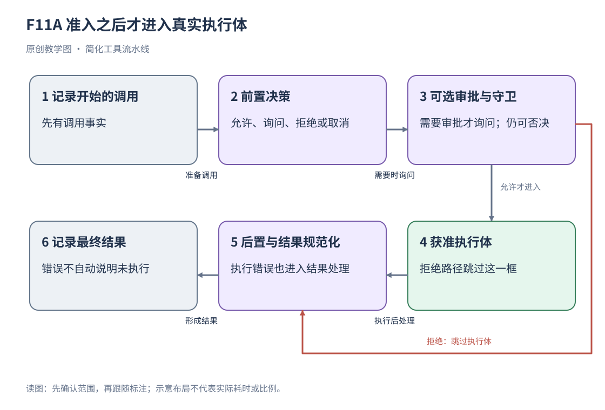

图 11A 的主线是调用记录、前置决定、可选审批与守卫、执行、结果处理和记录。拒绝支线跳过 execute，再把拒绝结果交给后续处理。
从调用到最终结果
循环先记录工具调用，ToolRuntime 创建执行上下文并检查取消。tools/pre-execute 链返回允许、拒绝、取消或审批请求，策略插件在这条链上作出决定，链尾默认返回 allow。需要审批时，服务向应答者发出询问、记录事实并回传结论。交互界面通常由用户应答，自动化桥接也可以提供机器应答。前置决定为允许时，ToolRuntime 再检查单调守卫。单调指守卫只能否决或原样放行，不能把应拒绝的调用升级为授权。
进入分派后，注册表重新解析可执行工具，融合来自调用方与外层封装的取消信号，再调用真实 execute。执行体返回的规范对象经过成功结果构造；抛错被转成工具错误。之后还有后置处理、内容约束和最终结果通知，循环再按约定顺序记录模型面对的结果。
审批服务在开放轮次内记录 approval/asked 与 approval/decided。开放轮次指已经开始、尚未结束的 turn，这让询问和应答归属到同一轮任务。allowed-once 允许本次审批对应的调用。要求审批时，若缺少审批服务、调用 Agent 或可用应答通道，serviceAsk 返回拒绝。
三种边界分别回答什么
策略回答“这次调用应怎样判定”；审批回答“这次需要的确认结果是什么”；执行环境回答“实际动作可以访问什么”。沙箱（限制程序能访问哪些资源的执行机制）或文件系统守卫提供具体范围限制，但它们不是审批弹窗的另一种名字。
教学上可把它类比为门口决策、一次通行许可与场地围栏。profile 分别选择审批策略和执行 Provider，把这三类控制接入实际调用。
分析示例：请求数与执行数
教学批次有四项已记录工具请求：一项前置拒绝，一项审批拒绝，一项允许且执行成功，一项允许但执行体抛错。请求数 4，实际进入执行体数 2，成功结果数 1。被拒绝的两项没有进入工具体，但仍可能有错误形式的结果。
isError 是工具结果中的错误标志。前两项在执行前被拒绝，后两项已经进入执行体；最后一项在失败前产生了哪些动作，要查看执行体。准入记录说明是否放行，结果记录说明调用怎样结束。
发生拒绝时查前置决定和审批记录；执行体抛错时查文件服务或进程结果；输出错误则查结果校验与渲染。
让读取案例走拒绝分支
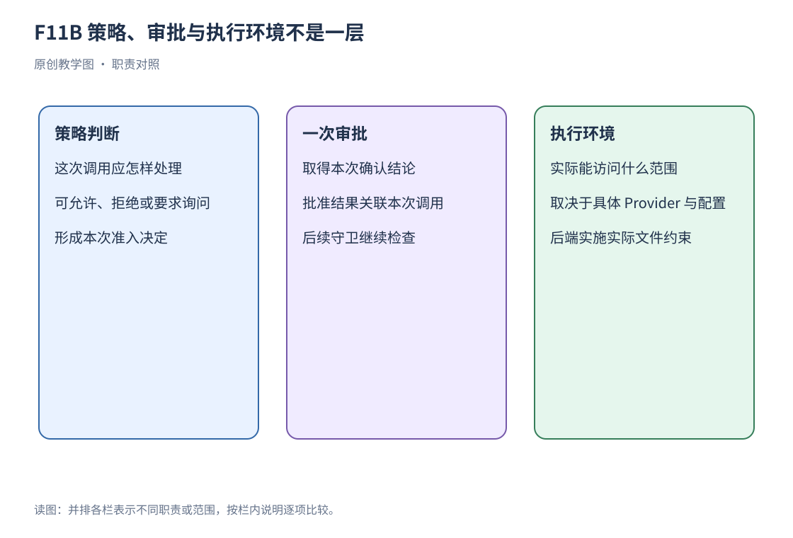

图 11B 并列三类控制：策略给出处理决定，审批获取本次确认，执行环境限制实际资源访问。审批后，调用继续接受守卫与环境约束。
假设 read 已获取文件，后置策略随后替换结果文字。下一次请求使用替换后的文字，文件读取本身已经完成。后置处理控制返回内容，外部资源的修改和撤回由执行服务处理。
常见误解
“审批允许就绕过全部限制”：后续 guard 与实际执行环境仍有自己的边界。
“所有错误都是执行前拒绝”：执行体错误、取消与后置结果处理都可能产生错误结果。
“工具调用记录等于操作完成”：调用、执行与最终结果分别有证据。
11.4 源码研读
E11A · 准入链与可选询问
阅读任务：这是 prepareExecution 中创建执行上下文之后的节选。exec 描述本次调用，carrier 确定服务派发范围；观察前置决定与审批分支，后续守卫和实际分派不在本段。
代码类型：真实源码摘录。证据编号 E11A；下表的数字是原文件行号。
const carrier = scopeTarget(this, exec.agent)
const gate = await this.ctx.waterfall(
carrier, 'tools/pre-execute', exec,
() => Promise.resolve<PreToolDecision>({ kind: 'allow' }),
)
const askResolution = gate.kind === 'ask'
? await this.serviceAsk(exec, gate)
: { decision: gate, approvalCancelled: false }| 原文件行号 | 写法 | 在这段流程中的作用 |
|---|---|---|
| 1504 | const 保存范围选择结果 | 按工具服务与本次 Agent 确定派发范围。 |
| 1505 | await waterfall | 等待前置处理链给出本次准入决定。 |
| 1506 | 调用实参 | 指定范围、事件名和执行上下文，处理者据此判断。 |
| 1507 | 箭头函数创建已成功完成的 Promise | 无人提出不同决定时提供默认 allow。 |
| 1508 | 结束前置调用 | gate 保存处理链最终决定。 |
| 1509 | 比较类别并开始三元选择 | 只有 ask 需要询问路径。 |
| 1510 | await serviceAsk | 等待一次审批并获取包括取消状态的结果。 |
| 1511 | 对象分支 | 其他决定直接进入后续处理，同时标记本分支没有审批取消。 |
执行推演：gate 为 ask 时等待 serviceAsk；allow 或 deny 则保留当前决定，不走询问。没有前置处理改写默认值时采用 allow，但仍需经过后续守卫与实际环境约束。
E11B · 一次审批怎样留下关联记录
阅读任务：这是审批服务已经获取可记录 Session 之后的正常路径。req 保存工具和调用信息；重点是同一个审批标识怎样关联 asked 和 decided。取消或失败处理还需依 decide 和上层调用契约理解。
代码类型：真实源码摘录。证据编号 E11B；下表的数字是原文件行号。
const id = ApprovalRequestId(randomUUID())
session.append('approval/asked', {
id,
toolName: req.toolName,
...req.callId !== undefined ? { callId: req.callId } : {},
...req.reason !== undefined ? { reason: req.reason } : {},
})
const outcome = await this.decide(req, session)
session.append('approval/decided', { id, outcome })
return outcome| 原文件行号 | 写法 | 在这段流程中的作用 |
|---|---|---|
| 224 | const、randomUUID 与身份包装 | 生成本次审批独有的 id。 |
| 225 | 调用 append 并开始对象 | 记录一次 approval/asked 事实。 |
| 226 | 对象属性简写 | 保存审批身份。 |
| 227 | 属性读取 | 保存被询问的工具名称。 |
| 228 | 条件展开 | 有调用标识时加入，以便关联具体工具请求。 |
| 229 | 条件展开 | 有原因时记录本次询问原因。 |
| 230 | 结束对象和追加调用 | asked 事实已交给 Session 记录。 |
| 231 | await 等待决定 | 暂停本审批路径，等待相应决策结果。 |
| 232 | 追加另一个事件 | 用同一 id 记录 outcome，闭合正常决策路径。 |
| 233 | return | 将本次结论返回准入链。 |
执行推演：生成审批标识后，先记录 asked，再等待 decide。返回的 outcome 记入同一标识的 decided，并交给这次调用的准入链；下一次调用重新进入自己的准入流程。
11.5 理解检查与讲解问答
问题 1 · 审批允许一次以后，守卫还能拒绝吗？
讲解：能。允许一次不绕过后续守卫与执行环境限制。
问题 2 · 结果 isError 是否证明没有外部动作？
讲解：isError 标记这次调用以错误结束。若错误发生在准入阶段，执行体没有运行；若发生在执行体中，失败前已经完成的读取、写入或远端请求仍按实际执行情况保留。
问题 3 · 后置处理删掉结果文字，能否撤销此前读取？
讲解：不能。改变模型结果与撤销外部动作是不同能力。
第 12 章｜外部服务与能力接入：连接成功不等于拥有知识库
本章学习任务：比较 stdio 和 HTTP 接入的参与者与步骤；将连接、能力发现、注册、调用、资源读取和记忆分别列出证据。
12.1 基本概念
Model Context Protocol（MCP）规定客户端怎样与服务端发现能力并交换请求和结果。客户端发起调用，服务端提供能力。协议处理通信与能力发现，具体服务实现存储、检索或其他动作。
标准输入是程序接收外部数据的一条通道，标准输出是程序交出普通结果的通道。stdio 是 standard input/output 的缩写；它用子进程的这两条通道传递协议数据。HTTP（Hypertext Transfer Protocol，超文本传输协议）规定网页与服务请求怎样交换信息，URL 是定位服务的地址。Streamable HTTP 连接服务 URL，可以跨网络，不是本机子进程的另一种写法。连接、能力发现、工具注册和一次调用成功，是四个不同状态。
名称包装让来自不同服务器的工具能进入同一注册表。公开名称和服务器原工具名可能不同；执行包装保存二者的对应关系，因此模型调用公开名以后，客户端仍向服务器发送原名。
MCP 工具接收参数并执行操作，资源接口按标识读取材料。客户端分别发现并调用这些能力。跨 Session 记忆还需要服务保存信息，并在后续 Session 中提供相应查询。
12.2 沿一个任务看完整流程
假设服务 A 通过 stdio 提供一个 search 工具。客户端启动配置指定的进程并建立通信，获取完整工具列表，为它构造公开名称和定义，再交换注册代次（代次：一次连接及其注册结果的版本标记，详见下一节）。模型看到公开名后，调用仍经过本地通用工具链；包装执行体把参数、取消信号和超时交给服务器原工具名。
服务 B 使用 Streamable HTTP 时，客户端连接它的 URL；服务 A 的 stdio 则由本机子进程承载。两者发现的工具都接入本地 ToolRuntime。更新时先准备完整定义，准备失败保留旧注册；开始交换后若新注册失败，客户端撤销本轮已注册项，结果是该服务器没有工具注册。
远端工具返回内容后，本地包装按输出契约整理，再交给 Session。资源能力通过独立接口发现和读取。检索算法由服务器实现：子字符串查询匹配原文是否含查询词，向量检索则按 embedding 相似度选择材料。
12.3 关键机制与设计取舍
外部工具复用原工具链
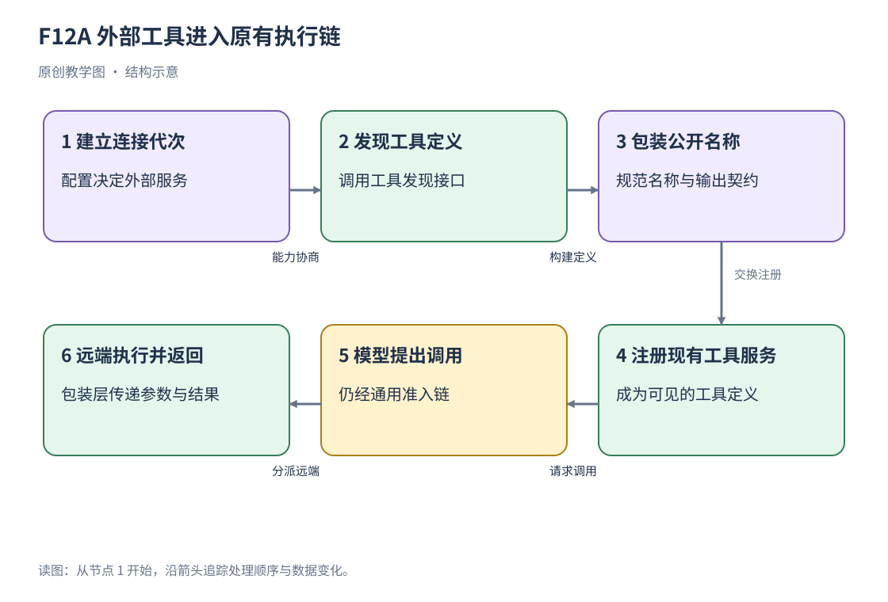

图 12A 从 MCP 连接与工具发现开始，经过公开名称包装和本地注册，再进入模型调用与远端执行。本地 ToolRuntime 继续处理准入、取消和结果。
连接、发现与代次交换
MCP 客户端按配置建立连接，并同步该连接代次的工具列表。代次标识一轮连接及其注册结果。同步分两阶段：先获取完整列表并构建所有定义，此时保留旧注册；准备成功后撤销旧注册，再逐项注册新定义。新注册发生冲突时，代码撤销本轮已注册项，使该服务器留下零项工具；严格启动同步继续抛错，普通同步记录错误并返回空注册表。
工具公开名采用 mcp__服务名__原工具名 的命名形式。简单有效名称直接拼接，非法字符和过长名称经过规范化与哈希处理。哈希把输入映射成较短标识，执行包装仍保存服务器原名，用于发送远端调用。
包装定义将远端参数 schema、说明和执行函数接到 ToolRuntime。模型调用公开名，参数经过本地准入与执行链，再由包装层向服务器原名发起调用。返回的模型文本与结构化内容按输出契约处理；资源插件另行提供资源发现和读取。
连接与知识能力的基础区别
客户端是发起请求的一方，服务端是提供协议能力的一方；远程调用把参数与结果跨越进程或网络边界。MCP 规定交互方式。RAG 是 Retrieval-Augmented Generation，检索增强生成：先检索与问题有关的材料，再把材料交给模型生成回答。例如先找出相关文档片段，再作总结；它是一种材料组织方法，和通信协议不是同义词。
一个 Memory 服务是否使用 embedding（第 8 章简介：把文字转成可比较相似度的数字向量）、按语义搜索、保存跨 Session 信息，需要看该服务契约。本项目 Memory MCP 指南介绍可选第三方接入，并非默认内置数据库；其中 Reference Memory 按子字符串查询。
分析示例：四项分别验收
教学服务已经建立连接，发现了一个检索工具，但没有声明资源能力，也没有验证跨 Session 记忆。四项验收应填：连接通过、工具发现通过、资源读取未证实、跨 Session 记忆未证实。
继续使用该工具前，还要检查一次实际调用结果、调用许可与结果质量。以协议接入可以复用成熟链路，代价是多了外部可用性、超时、版本和返回契约问题。
回到项目资料任务
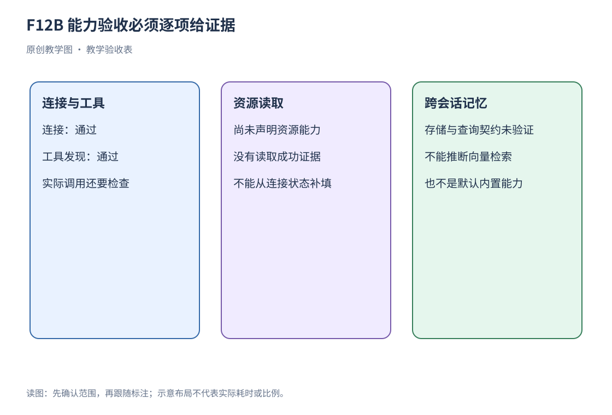

图 12B 按能力分别列状态：连接与工具发现已经完成，资源能力尚未声明，跨 Session 存储与查询尚未接入。每一栏对应一组独立的请求。
服务发现失败时，检查当前连接代次和已注册定义，而不只看页面的连接指示灯。远端调用失败时，则要查包装执行与服务器返回，不能自动归类为本地文件权限错误。
常见误解
“用了 MCP 就做了 RAG”：协议接入与检索生成方法是不同层次。
“服务连上就知道它的全部资料”：需要能力发现和具体读取；连接本身不提供全文。
“Memory 名字说明已经有向量库”：看实际存储、查询与启用方式，不按名字补造能力。
12.4 源码研读
E12A · stdio 与 HTTP 的不同执行边界
阅读任务：这是 createTransport 完整函数。config 已通过配置解析，transport 决定选哪一种连接；重点是命令与 URL 分别交给谁处理。
代码类型：真实源码摘录。证据编号 E12A；下表的数字是原文件行号。
export function createTransport(config: Config): Transport {
switch (config.transport) {
case 'stdio':
return new StdioClientTransport({
command: config.command,
args: config.args,
env: buildChildEnv(config.env),
cwd: config.cwd,
})
case 'streamable-http':
return new StreamableHTTPClientTransport(
new URL(config.url),
{ requestInit: { headers: config.headers } },
)
}
}| 原文件行号 | 写法 | 在这段流程中的作用 |
|---|---|---|
| 31 | export function 与类型标注 | 按配置创建一项 MCP 传输对象。 |
| 32 | switch 选择分支 | 用 transport 字段决定执行方式。 |
| 33 | case 字符串标签 | 进入标准输入输出传输分支。 |
| 34 | return new 与对象参数 | 创建并返回会启动子进程的传输。 |
| 35 | command 字段赋值 | 使用配置指定的可执行命令。 |
| 36 | args 字段赋值 | 把命令参数交给传输实现。 |
| 37 | 调用环境构造函数 | 按项目规则准备子进程环境。 |
| 38 | cwd 字段赋值 | 指定子进程工作目录。 |
| 39 | 结束构造调用 | stdio 分支返回传输，不再进入 HTTP 分支。 |
| 40 | 第二个 case | 进入 Streamable HTTP 分支。 |
| 41 | return new | 创建按 HTTP 访问服务的传输。 |
| 42 | new URL | 解析配置里的服务地址，不是启动本机命令。 |
| 43 | 对象嵌套 | 将配置请求头交给 HTTP 请求初始化设置。 |
| 44 | 结束构造调用 | 返回 HTTP 传输对象。 |
| 45 | 结束 switch | 两种受支持配置分支已经说明。 |
| 46 | 结束函数 | 连接和能力发现由后续客户端逻辑完成。 |
执行推演：stdio 配置创建子进程传输，HTTP 配置创建 URL 传输。客户端随后用返回的对象连接服务，发现能力并注册工具。
12.5 理解检查与讲解问答
问题 1 · 所有 MCP 服务都在本机子进程里运行吗？
讲解：不是。stdio 启动子进程，Streamable HTTP 连接服务 URL。
问题 2 · 工具列表更新失败，是否应该先清空旧工具？
讲解：同一连接更新工具列表时，先完整发现并构造新定义，准备失败保留旧注册。准备完成后才撤销旧注册；如果注册新列表发生冲突，代码清掉本轮已注册项，该服务器此时没有工具。
问题 3 · 发现 search 是否证明已做语义检索？
讲解：MCP 传输工具说明、参数和调用结果。search 背后的检索方法由服务器实现，可以是关键词查询、数据库查询或向量检索；要沿服务器的实现确定具体算法。
第 13 章｜Subagent：拆分任务前先看上下文起点
本章学习任务：说明子 Session 的来源与继承材料，比较 fresh 和 fork；解释子任务完成、团队消息送达与共享文件冲突是不同问题。
13.1 基本概念
Subagent 是父任务启动的另一运行单元，负责一部分工作。父 Agent 交代目标、材料、可用能力和交付要求，子 Agent 完成分工，父 Agent 再检查并整合结果。
fresh 从不继承父历史的材料起点开始，fork 从已有历史的规定前缀开始。进程内 Provider 的 spawn 创建空历史子 Session，fork 截取父 Session 到最近已完成轮次为止的事件。前缀保留开头到该位置的全部记录；当前轮次新增资料由父 Agent 通过启动输入传给子任务。
Subagent Runtime 选择 Provider，检查选项与最大深度，再交给 Provider 创建运行。进程内 Provider 为子任务建立独立 Agent 和 Session，它们与父任务共享宿主进程。这里的 fork 指历史继承方式，子任务仍有自己的驱动和生命周期。
实验性团队功能再增加成员、任务板和消息投递记录。邮箱机制可以安排投递、确认与恢复，但不会因此给共享工作区加文件锁。两个成员修改同一文件，仍需要实际的协调或冲突检查。
13.2 沿一个任务看完整流程
父 Agent 在当前轮次刚读到一份 README，随后启动 fork Subagent。进程内 Provider 先查最近的 turn/end，只继承到已完成轮次；这份资料位于当前未结束轮次，因此不在继承前缀里。父 Agent 应把子任务必需材料明确交代，或选择适当的已完成起点。
| 起点 | 初始历史 | 父 Agent 应补什么 |
|---|---|---|
| spawn | 不继承父事件历史 | 目标、材料和限制 |
| 本章进程内 fork | 最近完成轮次以前的事件前缀 | 当前轮次新增的必要材料 |
| 其他 Provider | 由其能力契约决定 | 依支持项建立交接 |
运行时检查 Provider、能力、最大深度和结构化输出选项；Provider 再创建运行句柄。父 Agent 获取子结果后对照原任务检查准确性、遗漏和冲突，然后汇合。团队消息有排队、投递和确认记录，恢复时可继续处理未确认项；共享文件修改另由任务分工和冲突协调处理。
13.3 关键机制与设计取舍
两种起点
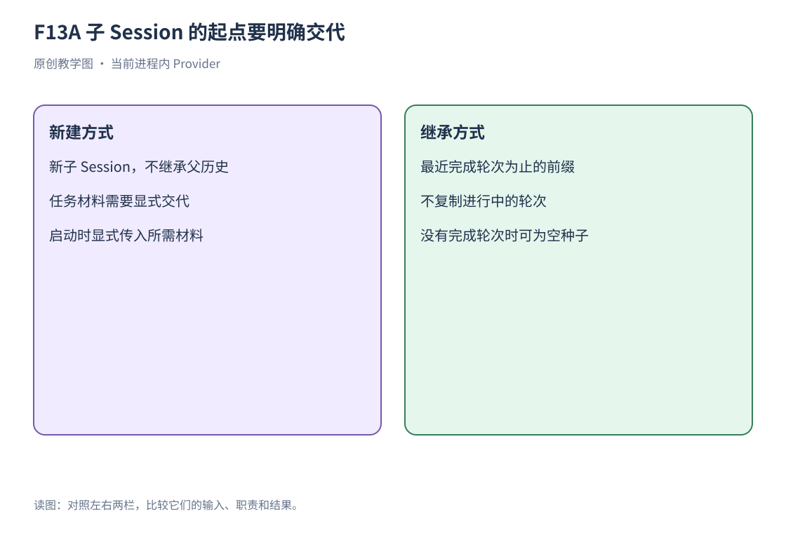

图 13A 左侧是进程内 spawn：新建子 Session，任务材料显式传入。右侧是进程内 fork：复制父 Session 到最近 turn/end 为止的前缀；没有 turn/end 时种子为空。
从父工具调用到子运行
父 Agent 调用 Subagent 工具后，执行入口先取得实际调用 Agent，再处理模型选项和 Provider 请求。Runtime 管理启动、Provider 查找和契约检查。一次性任务调用 start；后台任务选用支持持续运行的 Provider 时，可调用 startContinuable 接纳输入并返回子 Session 身份。Runtime 检查能力和最大深度，后者限制子任务继续创建子任务的层数。检查通过后，Runtime 建立运行描述并交给 Provider。fresh 与 fork 选择初始材料，start 与 startContinuable 选择运行和交付方式。
进程内 spawn 将空种子交给 startInProcessRun，fork 则先截取父 Session 到最近 turn/end 为止的事件前缀。两种 Provider 复用这份创建流程，为子任务建立新的 Agent 和 Session；子 Agent 接收自己的任务输入，再运行自己的循环。没有已完成轮次时，fork 的种子为空。运行句柄提供结果、取消传递和资源释放。
持续运行的历史起点在创建时捕获，后续继续运行沿用子 Session 已有历史。Provider 的能力契约列明支持的选项，Runtime 在启动前按该契约检查。
并发、进程与历史
多个 Agent 和 Session 可以在同一进程内分别运行，各自保存 Inbox、历史与生命周期。进程内 spawn 和 fork 通过这些对象组织任务；进程、容器和操作系统资源由宿主与执行 Provider 管理。
拆分任务先确定职责，再准备材料。例如一个子任务提取功能，另一个核对限制，父 Agent 最后整合。当前轮次刚读到的 README 尚未进入 fork 的已完成历史前缀，父 Agent 要在启动输入中把这份材料传给子任务。
分析示例：拆分不只计算工作时间
教学单代理需要 1200 ms。拆成两个子任务，各 700 ms；假设允许重叠且确实同时开始，启动与交代开销 200 ms，汇合检查 250 ms，则简化总时间是 200＋max(700,700)＋250＝1150 ms，只减少 50 ms。
若串行执行，则相同假设下为 1850 ms。若结果不一致还需额外处理。因此比较不仅要计执行区间，还要计材料、请求量与汇合质量。
选择任务起点
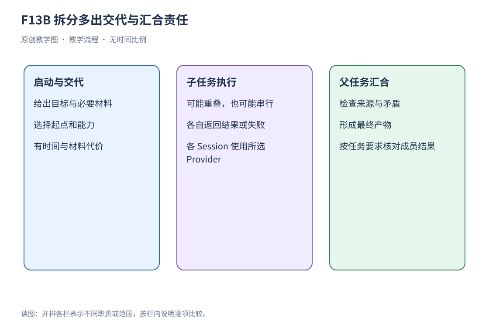

图 13B 用三栏列出拆分任务的工作：父任务交代目标和材料，子任务运行并返回结果，父任务检查与汇合。时间分析应把这三段一起计入。
父 Agent 收集子结果，检查材料来源和相互矛盾，再形成最终总结。取消子任务时，Runtime 调用对应 Provider 的取消与清理路径，运行句柄返回收尾结果。
常见误解
“fork 复制了父 Agent 当前全部内容”：本 Provider 只取最近已完成轮次前缀。
“多个 Subagent 就是多个独立进程”：当前讨论的是进程内实现。
“一个生成、一个评审就一定更准”：评审输入、标准和责任仍需设计与实验验证。
13.4 源码研读
E13A · 进程内 fork 取到哪里
阅读任务：这是 completedTurnPrefix 完整辅助函数。parent 是父 Agent；重点观察事件边界，而不是猜测 fork 与操作系统进程复制相同。
代码类型：真实源码摘录。证据编号 E13A；下表的数字是原文件行号。
function completedTurnPrefix(parent: Agent): SessionEvent[] {
// oxlint-disable-next-line typescript/no-deprecated -- Existing Session history read; migration deferred.
const events = parent.session.snapshotEvents()
const lastEnd = events.findLast(e => e.type === 'turn/end')
if (lastEnd === undefined) return []
// seq === array index (the append contract), so slice up to and including it.
return events.slice(0, lastEnd.seq + 1)
}| 原文件行号 | 写法 | 在这段流程中的作用 |
|---|---|---|
| 48 | function 和参数类型 | 从父 Agent 计算可继承的完成轮次前缀。 |
| 49 | 原 lint 注释 | 说明本处暂时采用现有历史读取接口，不是运行逻辑。 |
| 50 | const 保存快照 | 获取当前父 Session 的事件数组。 |
| 51 | findLast 和箭头判断 | 从末尾找最后一个 turn/end 事件。 |
| 52 | if 与提前 return | 没有完成轮次时不继承历史。 |
| 53 | 原注释解释序号关系 | 追加契约保证 seq 与数组下标对应，所以可用来切片。 |
| 54 | slice 的不包含结束位置规则 | 加 1 使边界事件也被保留，返回整个前缀而非摘要。 |
| 55 | 结束辅助函数 | Provider 随后用这份起点创建子 Session。 |
执行推演：事件中最后的 turn/end 为 20 号时，返回开头到 20 号的全部事件；21 号以后属于当前未完成部分，不在种子里。没有 turn/end 时返回空数组。
13.5 理解检查与讲解问答
问题 1 · 当前轮次刚获取的资料会自动进入进程内 fork 吗？
讲解：fork 使用最近一个已完成轮次之前的历史前缀，正在进行的轮次留在父 Session。若子任务需要当前轮次的读取结果，应在启动材料中明确传入。
问题 2 · fork 是否自动生成很短的摘要？
讲解：不会。前缀保留边界以前的事件，摘要属于另外的机制。
问题 3 · 团队邮箱能否解决同时修改同一文件的冲突？
讲解：邮箱协调消息的投递和确认。共享文件由文件服务修改，多个成员写同一路径时，应拆分修改范围、安排执行顺序，并在整合时检查冲突。
第 14 章｜网页端：提交任务与跟随结果是两条链
本章学习任务：把宿主事实、客户端镜像和界面状态分开；追踪初次历史与后续事件怎样共同形成可观察的任务进展。
14.1 基本概念
网页交互至少有两条信息流：用户向宿主提交任务，宿主把后续变化送回页面。远程调用（RPC）让页面请求另一执行环境执行操作；它这次返回的是接纳结果。持续跟随则让页面在任务推进期间获取变化。
本地回显先显示刚输入的内容，使人知道按钮已经响应。它属于客户端待提交状态，不是宿主已经保存的事实。请求标识用于把提交与后续记录关联起来，避免重试或状态协调时把同一输入显示两次。
快照描述某个位置的已知状态，游标指出后续消费从哪个位置推进。持久事件有序号，助手临时流是尚在生成中的变化。跟随过程在准备快照前安装监听与缓冲，可以保留准备期间发生的事件。
Host 的 follow 按序号发送事件：略过旧事件，发送符合预期的下一项，发现缺口则报错并结束这次流。客户端的历史来源管理与控制流重连分别处理历史和状态，下一节说明两条路径。
14.2 沿一个任务看完整流程
用户点击发送后，页面先建立待提交记录并显示本地输入。附件等处理完成，客户端发送带 requestId 的 prompt 请求；宿主接纳后返回回执。页面还要把这项暂态与随后观察到的用户消息协调，避免重复显示。
这里把已存在的完整状态称为基线，把其后新增的变化称为增量。订阅是登记自己要持续接收哪类变化，缓冲是先保存尚未处理的变化；监听器是收到变化以后调用的处理函数。
另一条链获取快照与后续变化。假设下一预期序号是 41，而缓冲收到 39、41、43：39 是已经过去的重复记录，略过；41 正常消费后预期变成 42；43 暴露缺口，不能当作 42 使用。Host 跟随生成器因此抛出 gateway/internal 错误。
页面刷新后，客户端重新获取快照，再接收后续变化。已提交的助手消息从 Session 记录恢复；正在生成的文字通过启用的助手临时流观察。页面不更新时，沿提交、接纳、跟随、客户端状态和视图订阅逐项定位。
14.3 关键机制与设计取舍
两个方向
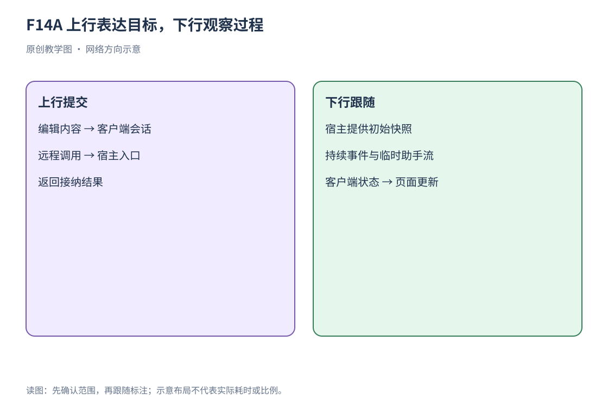

图 14A 左侧是上行提交，右侧是下行跟随。prompt 返回输入接纳结果，follow 提供初始快照、持久事件和启用的助手临时流，客户端据此更新页面。
发送路径
Session 交互控制器从编辑器取出内容，用 beginSubmission 创建本地 pending 条目，立即显示用户输入。随后处理附件并发出请求；Host 的接纳与消息记录通过另一条通道返回。
本地记录创建时生成 requestId，附件序列化完成后，Client Session 的 prompt 将同一标识送往 Host 命令控制器。后续跟随流带回对应记录，客户端据此协调 pending 条目与正式用户消息，避免重复显示。提交失败时，则按失败状态处理本地条目。
跟随路径与网络基础
订阅让客户端持续接收事件流。snapshot 给出某个游标位置的状态，游标就是后续事件从哪里继续的序号标记。RPC 传递操作请求，持续流传递之后发生的变化。
SessionHistoryController.follow 在准备快照前安装事件监听与缓冲，再发出快照并处理缓冲后续。这避免把快照准备期间的变化简单丢掉。持久事件与助手临时流分别处理；临时流只有在请求开启相应能力时提供。
Host 用预期序号检查缓冲事件，旧事件略过，缺口抛错。客户端消费收到的事实并维护 Session 状态，ChatView 订阅状态变化，重新显示相应节点。
分析示例：序号去重与缺口
教学快照游标为 40，后续期望先收到 41。缓冲中依次出现 39、41、43：39 已早于期待位置，可略过；41 正常推进后期待 42；43 不能冒充 42，应该触发缺口处理。
这里的 39、41、43 来自 Host 的事件缓冲。预期 42 却收到 43 时，Host 报告 gateway/internal 并结束该流。客户端 resync 用于历史来源地址替换：关闭旧来源，再重新 open 历史窗口。投影状态由另一条控制流管理重连。事件连续性、历史来源替换和状态重连分别对应这些实现。
刷新后重建视图
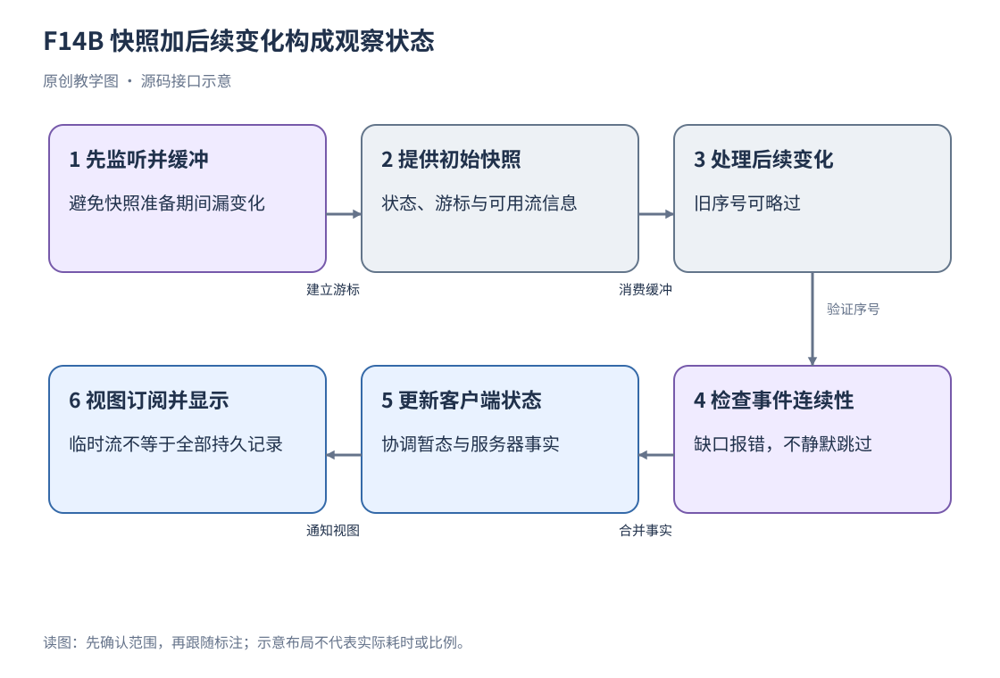

图 14B 从 Host 安装监听和缓冲开始，再发送快照、检查后续事件序号，最后由客户端更新状态、驱动视图。快照建立观察基线，持续事件推进它。
README 正在读取时刷新，页面通过新快照和后续事件重建视图。先前只在本地回显的输入由 pending 状态表示；Host 接纳并记录后的输入，才能在新的历史读取中作为正式用户消息出现。
本地回显让输入立即出现，requestId 把它与 Host 的接纳记录关联；快照和后续事件持续更新聊天视图。
常见误解
“提交函数返回成功就是最终回答”：其契约仍然是接纳；连续过程走跟随链。
“刷新会把所有临时片段逐字恢复”：临时流与持久事实的保存方式不同。
“有序号就一定无损恢复”：序号能检查连续性，恢复还要由实际协议与客户端路径完成。
14.4 源码研读
E14A · 跟随时发现重复与缺口
阅读任务：这是跟随消费循环内的节选，item 是当前缓冲事件，nextOffset 是下一个需要的位置。yield 是把一项结果交给流的消费者，后续可再继续生成下一项。
代码类型：真实源码摘录。证据编号 E14A；下表的数字是原文件行号。
const expectedSeq = SessionSeq(nextOffset)
if (item.event.seq < expectedSeq) continue
if (item.event.seq !== expectedSeq) {
throw new RemoteError('gateway/internal', `session event stream skipped seq ${String(expectedSeq)}`, {})
}
nextOffset = SessionLogOffset(nextOffset + 1)
yield entryFor(item.event)| 原文件行号 | 写法 | 在这段流程中的作用 |
|---|---|---|
| 226 | const 与序号包装 | 把当前消费位置转成期待的 Session 事件序号。 |
| 227 | 小于比较和 continue | 跳过已经早于期待位置的重复或旧事件。 |
| 228 | 不等比较 | 剩余事件若不是恰好期待的一项，就是缺口。 |
| 229 | throw 构造远程错误 | 报告跳过了哪个序号，不无声继续。 |
| 230 | 结束 if | 连续事件才能进入后面推进。 |
| 231 | 赋值和加 1 | 消费当前位置以后，期待下一项。 |
| 232 | yield 调用转换函数 | 把当前事实转成协议条目交给跟随消费者。 |
执行推演：Host 预期 41 时略过 39，收到 41 后发送该项并将预期推进到 42；随后收到 43，就抛出 gateway/internal，结束跟随。客户端的历史来源地址替换由 resync 关闭旧来源并重新 open，投影状态由独立控制流维护。
14.5 理解检查与讲解问答
问题 1 · 本地出现输入气泡是否证明服务器已接纳？
讲解：客户端提交前会建立 pending 条目，让输入立即显示。提交回执确认入口接纳，随后跟随流带回 Host 记录，客户端再把 pending 条目与正式记录协调。
问题 2 · 预期 42 却收到 43，能否继续当作连续事件？
讲解：Host 预期 42 却收到 43，会报告缺失事件并结束跟随。客户端有两项相关机制：历史地址替换时，resync 关闭旧来源并重新 open；投影控制流独立管理重连。Host 的缺口检查负责发现不连续，resync 负责替换历史来源。
问题 3 · 提交回执和持续跟随为什么分开？
讲解：提交表达操作并返回接纳，跟随传回后续过程；两者完成时间与数据契约不同。
第 15 章｜桌面端：窗口、页面与宿主服务怎样合作
本章学习任务：说明桌面主进程怎样启动与管理独立 Host；区别窗口状态、服务状态和 Session 记录，判断恢复究竟恢复了什么。
15.1 基本概念
桌面版使用 Electron 承载网页产品。Renderer 是显示页面的运行环境；Main 是管理窗口和桌面生命周期的主进程；preload 是给页面提供有限桌面接口的桥。实际 Harness 服务还有独立 Node Host 子进程，因此理解架构不能停在一个三层图。
进程是操作系统管理的一次程序运行，有自己的内存与生命周期。进程间通信（IPC）传递启动和退出等消息；聊天业务继续使用网页客户端的请求与持续流。HTTP 组织请求和响应，WebSocket 提供持续双向通道；它们与启动 IPC 各自解决不同问题。
启动时，Main 先加载本地页面，再等待 Host 返回服务地址与启动资料。页面先显示等待状态，拿到资料后激活业务。请求转发同时校验页面来源，并为 Host 请求补齐认证信息。
关闭普通窗口与退出应用也不是同一个动作。关闭普通窗口走隐藏并保留运行的路径；后者需要按应用生命周期处理仍在运行的任务。
15.2 沿一个任务看完整流程
桌面启动的可见顺序是：Main 导航到本地网页文档，随后启动后端准备；HostProcess 启动独立 Node 子进程，接收 ready 或 fatal 等消息。ready 携带服务 URL 与启动注入资料，同一页面据此继续激活客户端。
假设 200 毫秒看到等待界面，1000 毫秒业务可用，前者不能作为完整启动耗时。页面出现但 Host 失败时查子进程启动；Host 已 ready 但请求失败时查转发和服务；业务状态已有变化但没有显示时查客户端与视图。
主进程把页面业务路径转发到 Host，校验来源并适配认证。preload 提供目录选择等桌面接口，聊天请求使用 Web 客户端已有的通信方式。Main 管理窗口与后端生命周期，Node Host 运行 Harness 服务。
15.3 关键机制与设计取舍
三个环境与通信
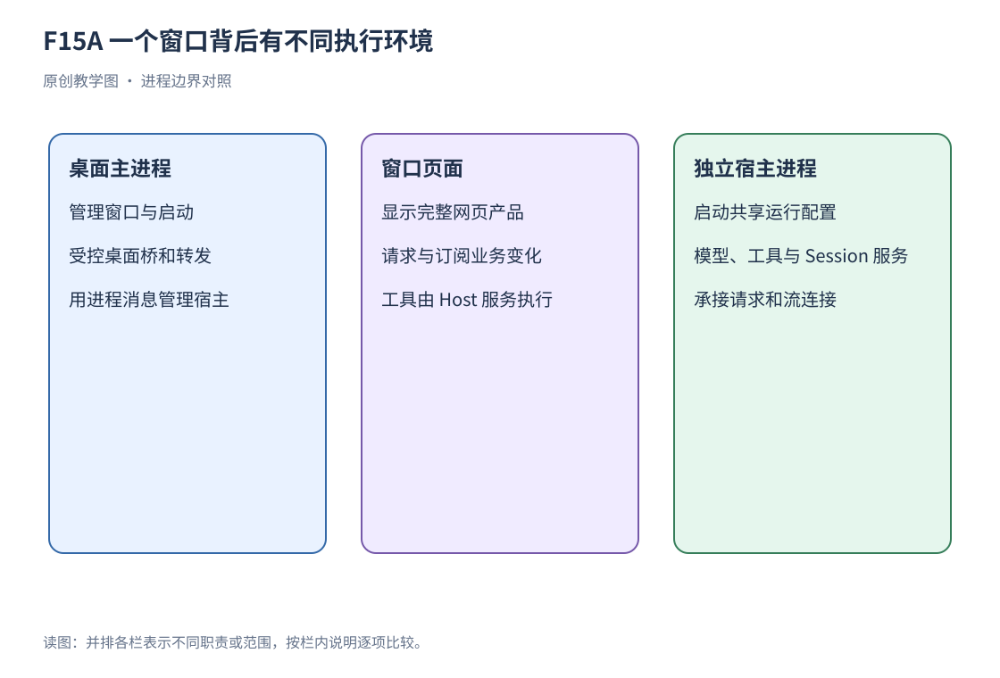

图 15A 并列 Main、Renderer 和独立 Node Host。Main 管理窗口与启动，Renderer 显示 Web 产品，Node Host 运行模型、工具和 Session 服务。
先加载文档，再等服务准备
reconcileBackend 先导航到打包页面，再调用后端启动。窗口加载本地 Web 资源并等待启动注入，不需要在 Host 准备好后换到另一份文档。
DesktopHostProcess.start 创建 Node 子进程，建立 IPC 和输出管道，接收 ready 或 fatal 消息。ready 携带服务 URL 与 injections，也就是页面启动需要的服务地址等参数。已加载页面据此激活客户端，开始向 Host 发起业务请求。
桌面协议分别处理本地静态资源与业务请求。转发函数检查页面来源，映射目标路径和查询参数，并适配认证凭据。WebSocket 为页面与 Host 建立双向流通道。preload 通过受控接口提供目录选择、ready 等桌面能力。
进程与受控桥的基础
Main、Renderer 与 Node Host 各有内存和生命周期。preload 为 Renderer 暴露目录选择等桌面接口；文件工具由 Node Host 内的文件服务执行。
普通主窗口关闭会隐藏窗口并保留运行；退出应用进入任务中断检查和后端关闭流程。Main 分别处理这两个生命周期事件。
分析示例：页面出现与业务可用
教学启动时间线：0 ms 开始，200 ms 页面显示等待界面，900 ms Host 就绪，1000 ms 客户端可用。页面出现耗时 200 ms，业务可用耗时 1000 ms，中间等待区间为 800 ms。
启动过程中，同一份页面先显示等待状态，收到 Host 的启动资料后再激活客户端。页面较早出现，让用户能看到启动进展；服务准备、启动注入和业务激活则继续在后台推进。
把故障交给正确部件
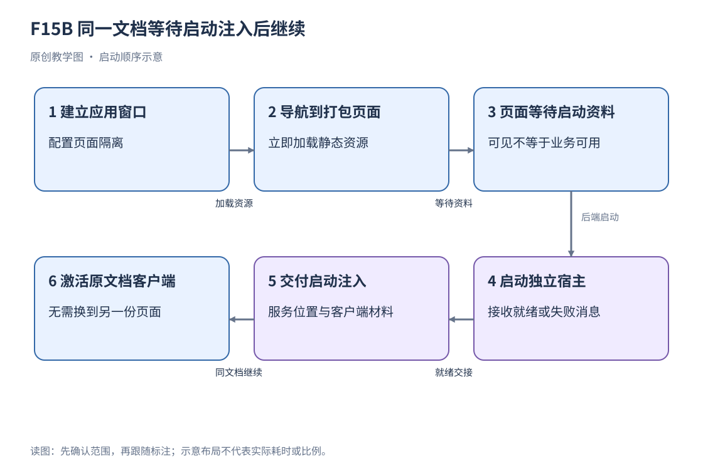

图 15B 按启动顺序展示窗口、打包页面、Host 和启动注入。页面先显示等待状态，收到 ready 资料后激活同一文档中的客户端。
桌面上的 README 总结仍经过 Agent 循环、工具执行和 Session 记录。Renderer 负责界面，Main 负责桌面生命周期，Node Host 中的文件服务执行读取；桌面壳将这三个环境连接起来。
常见误解
“页面加载完成就等于模型和工具可用”：Host 和客户端激活还有独立状态。
“所有业务都通过 preload IPC 直接进入 Agent”：已有 Web RPC 和流仍承担聊天过程。
“关闭窗口等于退出应用”：普通主窗口关闭时隐藏并保留运行；退出应用则进入任务中断检查和后端关闭流程。
15.4 源码研读
E15A · 真正启动 Host 子进程的位置
阅读任务：这是 DesktopHostProcess.start 内部的子进程启动节选。this.node 是所选 Node 程序，runtimeDir 与 projectDir 是已准备的目录；本段观察入口、参数与通信管道。ready/fatal 消息处理属于后续路径。
代码类型：真实源码摘录。证据编号 E15A；下表的数字是原文件行号。
const entry = join(this.runtimeDir, 'node_modules', '@deepseek-ai', 'dsh-desktop-host', 'lib', 'index.js')
const child = spawn(this.node, [
'--expose-internals',
...(this.inspectPort === undefined ? [] : [`--inspect=127.0.0.1:${String(this.inspectPort)}`]),
entry,
this.runtimeDir,
this.projectDir,
this.primaryRuntime ?? join(this.runtimeDir, '..', 'runtime', 'primary-runtime'),
...this.packageManager === undefined ? [] : [this.packageManager.pnpm, this.packageManager.nodeBin],
], {
cwd: this.projectDir,
env: desktopNodeEnvironment(this.node, undefined, this.environment),
stdio: ['ignore', 'pipe', 'pipe', 'ipc'],
})| 原文件行号 | 写法 | 在这段流程中的作用 |
|---|---|---|
| 188 | const 与 join 拼接路径 | 定位运行包中 desktop-host 的入口文件。 |
| 189 | spawn 调用和参数数组开始 | 以指定 Node 程序启动独立子进程。 |
| 190 | 字符串参数 | 给 Node 启用该入口需要的内部能力选项。 |
| 191 | 条件数组展开 | 只有配置检查端口时才增加调试参数。 |
| 192 | 数组成员 | 把 Host 入口交给 Node 执行。 |
| 193 | 数组成员 | 传入运行包目录。 |
| 194 | 数组成员 | 传入当前项目目录。 |
| 195 | 空值合并和 join | 显式主运行环境优先，否则使用约定的默认目录。 |
| 196 | 条件展开 | 存在包管理器信息时追加其命令与 Node 目录。 |
| 197 | 结束参数数组，开始 spawn 选项 | 下面是进程环境，不是工具参数。 |
| 198 | cwd 选项 | 子进程从当前项目目录运行。 |
| 199 | 环境构造函数 | 根据所选 Node 与配置准备 Host 环境。 |
| 200 | stdio 数组 | 不使用标准输入，捕获输出与错误，并开启 IPC。 |
| 201 | 结束 spawn 调用 | 获取子进程句柄，后续管理其 ready、失败与退出。 |
执行推演：Main 的管理对象调用 spawn，启动 dsh-desktop-host 的 Node 子进程。当前项目目录成为子进程工作目录，管道和 IPC 供宿主观察输出与启动消息；spawn 返回并不等于收到 ready。
15.5 理解检查与讲解问答
问题 1 · Main 是不是 Harness 核心的唯一执行进程？
讲解：不是。Main 管理桌面与后端生命周期，另有 Node Host 子进程运行服务。
问题 2 · 等待页面出现是否等于业务已经可用？
讲解：不等于。还需要 Host ready 与客户端激活。
问题 3 · preload 是否直接承接所有聊天业务？
讲解：不是。它暴露受控桌面接口，聊天继续走已有请求与流链路。
第 16 章｜测试与回放：复现通过究竟证明了什么
本章学习任务：比较位置回放、工程测试与真实任务评价；解释回放游标怎样消费固定材料，以及它不能证明哪些实际模型效果。
16.1 基本概念
测试把一个判断写成可检查的条件。断言是必须成立的条件，例如“失败模型尝试不执行其中的工具提议”。替身代替一个依赖；回放使用已有响应脚本代替这次模型输出，同时让所选真实循环和工具链继续运行。
本项目 LLM 回放采用按 Session 绑定、按调用位置消费的方式。新 Session 获取下一份录制脚本，每调用一次前进一个位置。它不是把当前请求的全部内容与录制请求逐字段比较后再匹配响应。
脚本在本章指一个录制 Session 的响应清单，每个条目对应一次模型调用。消费检查发现脚本没有绑定或条目没有用完；请求次数超出清单时也会报错。消费检查验证调用次数与脚本绑定。请求内容、工具动作和最终产物分别用对应断言检查。
固定模型输出减少一种变化来源，不固定操作系统文件、时间、并发调度和远端工具的全部行为。回放时使用哪些文件和工具，由测试 profile 与替身配置决定。
16.2 沿一个任务看完整流程
设录制脚本有两个响应：第一项提出 read，第二项生成总结。当前 Session 第一次请求获取第 0 项，第二次获取第 1 项，游标变成 2。只发一次请求时有条目未消费；第三次请求时脚本耗尽。消费检查帮助发现轨迹变化。
位置回放按请求次数返回脚本条目。即使第一次请求组装错了材料，仍会拿到第 0 项响应。测试要另外检查实际请求的字段，才能发现材料组装错误。
| 想验证的命题 | 合适观察 |
|---|---|
| 错误尝试没有执行工具 | 固定失败响应，并检查调用与执行 |
| 请求包含项目指令 | 检查实际组装的请求内容 |
| 新提示词使模型更少遗漏 | 使用新模型输出和统一任务评价 |
| 客户端没有重复气泡 | 检查客户端提交与历史合并状态 |
修改提示词以后，用真实模型重新生成结果，再按同一任务标准比较；回放用于检查固定响应下的程序行为。
16.3 关键机制与设计取舍
固定一个依赖，继续执行其他部分
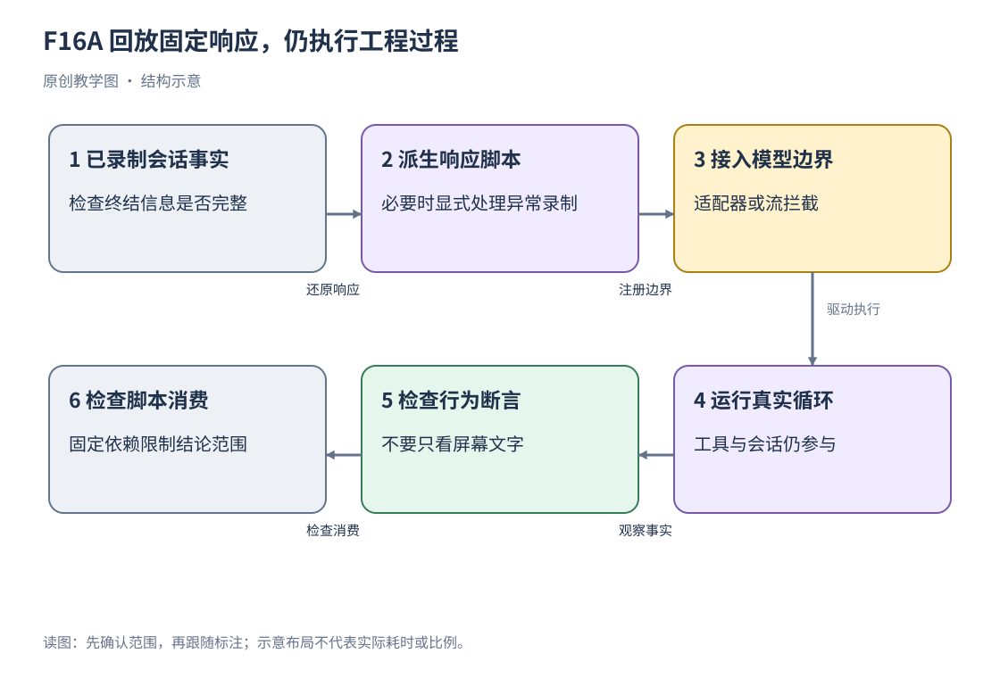

图 16A 从录制日志派生响应脚本，把脚本接到 LLM 边界，再运行循环和工具。测试检查实际行为，同时检查响应清单是否完整消费。
证据层怎样选择
单元测试检查局部函数，例如读取窗口；快照测试比较选定输出；回放让固定模型响应驱动真实循环；API 端到端测试连接实际服务，走完整请求链；性能实验记录规定条件下的时间和用量。选择检查方式时，先明确要观察哪个行为。
deriveReplayScript 从事件中恢复响应条目。遇到缺失终结的录制，需要在 replay.override.json 中明确提供覆盖响应，让回放使用明确指定的响应。整个 ReplayEntry 数组替换完整脚本；{ patches } 则在可成功派生的脚本上修改指定位置。installLlmReplay 加载脚本，按 Session 绑定消费位置；接入有两种方式：配置 providers 时注册 ReplayAdapter，在模型 Provider 层面直接顶替真实模型；否则在 llm/stream 边界拦截，请求即将发出时截获并改由脚本应答。
回放的消费检查确认每份脚本都绑定到实际 Session，并且条目全部用完。少一次请求会留下未消费条目，多一次请求会使脚本耗尽。用固定响应定位工程故障时，这些检查可以发现调用轨迹变化。
断言、替身与覆盖范围
断言（assertion）写出要检查的条件，替身（mock）替代某项依赖。检查数组长度为 2，只验证数量；检查元素中的工具名、参数和结果，才验证这些字段。回放固定响应序列，断言决定测试实际检查什么。
一个故障测试需要给出触发条件与观察点。例如，构造失败 finish，检查驱动是否记录 attempt、是否执行工具。评价模型总结质量则使用任务集和新生成的产物，按相同要求检查遗漏与错误。
分析示例：四个命题选四种检查
“行窗口只返回选定范围”可以用窗口单元测试；“失败尝试没有执行工具”可以用固定失败响应驱动真实循环；“实际服务能够完成协议请求”需要 API 测试；“修改提示词后更少遗漏实验性声明”需要同条件的业务任务评价。
若把最后一项改成固定输出回放，输出内容已经由脚本决定，无法评价提示词对真实模型的影响。回放便于定位工程回归（回归：原本正常的行为在修改后被破坏），真实模型评价则使用新输出。
再看一份含 3 次模型调用的录制。第 2 次缺少 finish 时，deriveReplayScript 抛出 “ended without a finish chunk”，要求提供 replay.override.json 覆盖文件。若改用完整的 3 项响应脚本，而实际只发起 2 次请求，assertConsumed 报告只消费了 2/3 次。另一项检查针对录制 Session：某份脚本从未绑定实际 Session 时，报告 recorded script(s) never bound。前者检查条目消费，后者检查 Session 绑定。
README 故障怎样复现
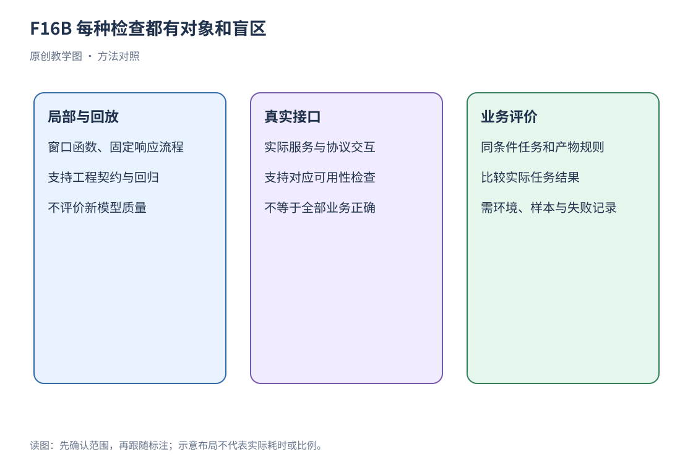

图 16B 比较三类检查：局部函数与固定响应回放、真实服务接口、业务任务评价。前两类检查程序行为和服务交互，业务评价比较新生成的产物。
若故障是“模型漏掉限制”，保存材料与产物用于分析，但真正比较修改效果仍需要新模型输出和统一任务检查。选择最小合适证据，比不断扩大整套测试更有帮助。
常见误解
“测试通过说明所有场景正常”：测试只覆盖给定条件与断言。
“回放通过说明新模型更强”：固定输出没有检验新模型行为。
“读到测试就等于测试通过”：阅读测试说明预期行为，实际执行结果记录该环境下的通过与失败。
16.4 源码研读
教材另附源码验证记录。它实际调用第四章的读取窗口函数和第三章的 Inbox 方法，检查分块换行、字节上限后的总行数、越界错误、边界领取和重复输入拒绝。断言写在代码中，观察结果与源文件哈希一起保存。读这个记录时，可以把“文字中的机制”“实际调用的函数”和“断言检查的结果”逐项对应起来。
E16A · 消费按位置推进
阅读任务：本段在 replay 已依据 Session 找到或建立绑定状态之后。state 保存该 Session 的脚本数组和游标；重点看这次选择响应的依据。后续生成器（可逐个产出值并暂停的函数，配合 yield，见附录）负责脚本耗尽等错误。
代码类型：真实源码摘录。证据编号 E16A；下表的数字是原文件行号。
const boundState = state
const seenSessions = nextScript
const totalScripts = scripts.length
const index = boundState.cursor++
const entry: ReplayEntry | undefined = boundState.entries[index]| 原文件行号 | 写法 | 在这段流程中的作用 |
|---|---|---|
| 1064 | const 保存同一状态对象 | 后面的生成器使用本次已经绑定的 Session 状态。 |
| 1065 | const 保存数量 | 捕获目前已绑定的脚本数量，用于错误说明。 |
| 1066 | 读取数组 length | 保存录制脚本总数，便于报告未录制 Session。 |
| 1067 | 后缀自增 | 先取旧游标作为 index，再把本 Session 游标增加 1。 |
| 1068 | 方括号按下标取值，联合类型允许 undefined | 选择当前位置响应；越界由后续生成器报错。 |
执行推演：cursor 为 0 时本次取 entries[0]，随后 cursor 变为 1；下次取 entries[1]。这些行没有按请求内容（Payload）查找等价条目。
E16B · 有路由时与无路由时的接入
阅读任务：本段在回放脚本已经加载后安装模型替身。providers 是回放配置的 Provider 目录，dispose 是以后移除替身的释放函数。
代码类型：真实源码摘录。证据编号 E16B；下表的数字是原文件行号。
const providers = config.providers ?? []
const dispose = providers.length > 0
? ctx.llm.registerAdapter(providers.map(provider => provider.id), new ReplayAdapter(providers, replay))
: ctx.on('llm/stream', (options: GenerateOptions, _next) => replay(options))| 原文件行号 | 写法 | 在这段流程中的作用 |
|---|---|---|
| 1101 | 空值合并与数组字面量 | 缺省目录采用空数组。 |
| 1102 | const 与长度判断 | 依据是否指定 Provider 目录选择安装方式。 |
| 1103 | map、箭头函数和适配器构造 | 提取 Provider 身份并注册对应回放适配器。 |
| 1104 | on 与回调 | 另一分支在流接口拦截，把请求交给同一 replay 函数。 |
执行推演：providers 非空时登记路由适配器；为空时登记 llm/stream 拦截回调。对应路由的模型调用由 replay 返回；工具和文件服务继续采用测试配置中的实现。
16.5 理解检查与讲解问答
问题 1 · 两次回放调用都消费完了，是否证明请求材料正确？
讲解：位置消费检查第几次请求使用了第几项响应。要检查材料组装，还要断言实际请求中的消息、工具名和参数；两项检查分别覆盖调用轨迹与请求内容。
问题 2 · 固定回答以后能评价新提示词改善了多少吗？
讲解：不能。回答已由脚本决定，评价提示词影响需要新的模型输出。
问题 3 · 回放是否自动成为纯内存、无外部动作的测试？
讲解：回放替换模型响应。循环、工具和 Session 继续运行；若测试配置使用真实文件 Provider，工具仍会访问测试工作区。
第 17 章｜量化评价：同时看质量、时间、用量与失败
本章学习任务：区别估计 token、Provider 用量和实际计费；为一次任务选择可解释的评价口径，避免把输入变短等同于质量提高。
17.1 基本概念
评价先定义任务怎样算正确，再记录完成这些任务花了什么。质量是产物满足规则的程度；时间是选定起点到选定终点的耗时；用量是请求、token 或工具等资源数量；失败记录说明哪些样本没有正常完成以及原因。
计量是记录或估算数量，遥测是把运行信息交给观察系统。投影把事件整理成可读取的用量和上下文状态；导出后端决定资料怎样发送。TokenMeter 负责用量和容量状态，业务评分规则负责判断结果，计费按 Provider 报告和对应计费类别计算。
比较需要保持任务集、版本、模型选择和验收规则一致，再改变一个明确因素。通过率是通过数除以全部样本数；百分点是两个百分比的直接差，区别于相对增幅。平均数反映所有纳入样本的算术平均，中位数反映排序后的中间位置，失败样本怎样处理要先写清。
本章用一组十项任务的示例，说明怎样把质量、耗时和用量放在一起比较。
17.2 沿一个任务看完整流程
假设同一组十项任务，甲通过九项、消耗 20000 token；乙通过八项、消耗 14000 token。乙用量少了 30%，通过率却从 90% 降到 80%，差 10 个百分点。两种方案的取舍是用量下降、通过率也下降。
对每个任务同时记录输入标识、配置、产物、验收、接纳与终态时间、用量来源和失败原因。成功、失败与取消都保留；缺失数据不能填成零。费用按相应计费类别的用量乘单价求和，正式实验时再核验单价与缓存口径。
TokenMeter 注册用量、压力和材料组成等投影，供消费者按用途读取；Session 遥测协调事件并交给导出后端。这些过程信息与业务规则一起组成评价记录。例如“如实说明资料不足”可以是读取失败任务的正确产物，而不是要求每个样本都强行生成三点总结。
17.3 关键机制与设计取舍
一次任务的三组记录
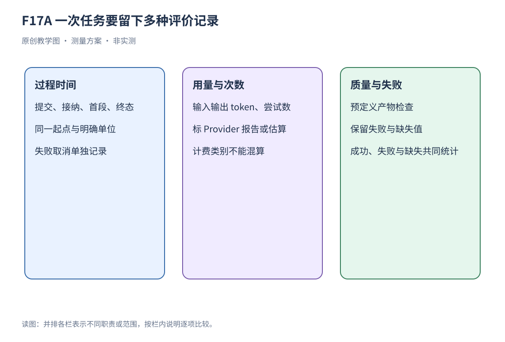

图 17A 的三栏记录过程时间、用量次数、质量与失败。每条任务记录共用任务身份，成功、失败和取消都进入统计。
TokenMeter 和遥测怎样提供运行数据
TokenMeter 注册三项投影，投影是从事件计算并持续更新的统计视图。tokenUsage 记录请求用量，contextPressure 估算上下文压力，contextBreakdown 展示材料组成。压力计算使用当前 Surface、请求信息和模型路由；符合复用条件时采用 Provider 用量，否则使用本地估计。界面同时展示数值与来源。
Session 遥测协调器观察生命周期、事件和 flush，将选定记录交给导出后端。OTel 即 OpenTelemetry，提供遥测接口；项目后端支持按需捕获和反馈触发等配置。span 记录一段操作的耗时与关联，任务评分则使用产物检查规则。
质量检查是课程另外设计的实验层：README 总结是否准确说明用途、三点是否各有材料依据、是否保留关键限制、是否编造功能。先定义规则，之后才能计算通过率。
比例、单位和控制变量
通过率＝通过任务数÷全部任务数。平均耗时是所有相应样本耗时的算术平均，中位数则是排序后的中间位置。先说明失败时用哪个耗时、是否单独报告，才谈两项统计。
比较配置甲与乙时保持输入任务集、版本、模型选择、验收规则和预算一致，记录变更项、重复次数和实验环境。若模型与任务同时变了，不能把比例变化全部归因于某个提示词。
成本按明确计费类别求和：总成本 = Σ(该类别用量 × 对应单价)。单价、缓存口径和计费单位在真正实验时核验，缓存输入、普通输入和输出各按自己的单价计算。
分析示例：便宜的方案未必更合适
以下全部为教学假设：同样十项任务，方案甲通过九项，用量 20000 token；方案乙通过八项，用量 14000 token。甲通过率 90%，乙 80%；乙用量减少 (20000−14000)/20000＝30%，通过率下降 10 个百分点。
方案乙的变化是“用量减少 30%，通过率下降 10 个百分点”。若要求至少九项正确，选择甲；若预算允许八项通过，则继续比较失败类型和费用。将总用量除以通过数，甲约 2222、乙 1750 token，得到的是每项通过任务分摊的总用量，其中包含失败样本的消耗。
指标并列让取舍可见，代价是需要保留完整样本记录，而不是只报最漂亮的一个数字。扩大任务集并重复测量，可以继续观察结果在其他样本中的分布。
这组数字有逐项输入和计算记录：样本文件保存每项任务的通过标记与用量，calculations 输出列出公式、结果和单位。这里使用本地 calculations 工具的 Decimal 四则运算；甲的分摊用量在结果中保留小数，正文取整数近似值。数字仍来自教学假设，计算记录使每一步可以复查。验证代码检查百分点与相对增幅的区别，也检查任务身份是否配对和非法输入是否被拒绝。
一个小型实验怎样安排
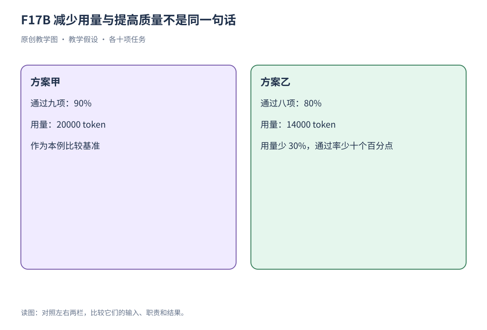

图 17B 中甲通过九项，消耗 20000 token；乙通过八项，消耗 14000 token。乙少用 30% token，同时少通过一项。
记录每次任务的输入标识、配置、产物、检查、时间、用量来源和失败原因。没有可靠 token 报告时标估算；没有终态时间时标缺失；不要把缺失填成零。分析后回到对应材料或执行机制修改，再用相同规则复查。
常见误解
“用量少就是质量好”：上例乙更省却少通过一项。
“通过率从 80% 到 90% 是提高 10%”：绝对差为 10 个百分点，相对增幅为 12.5%，口径必须注明。
“只看成功任务耗时就足够”：失败样本可能消耗更多时间与请求，遗漏会扭曲方案评价。
17.4 源码研读
E17A · 三项计量视图的注册
阅读任务：这是 TokenMeter 构造期间的三项注册。register 把投影定义交给管理者，不是在这三行中已经测量所有 Session；后续读取和事件观察推动相应状态。
代码类型：真实源码摘录。证据编号 E17A；下表的数字是原文件行号。
ctx.sessionProjections.register(tokenUsageProjectionDefinition)
ctx.sessionProjections.register(contextPressureProjectionDefinition)
ctx.sessionProjections.register(contextBreakdownProjectionDefinition)| 原文件行号 | 写法 | 在这段流程中的作用 |
|---|---|---|
| 114 | 调用投影注册方法 | 登记 tokenUsage 的计算与读取定义，供查询模型用量。 |
| 115 | 同一方法接收另一项定义 | 登记 contextPressure 视图，供观察上下文容量压力。 |
| 116 | 同一方法接收第三项定义 | 登记 contextBreakdown 视图，供解释材料由哪些部分组成。 |
执行推演：装入计量组件后，消费者可以按需请求用量、压力与材料组成视图。注册数量为三项，不等于运行过三次模型请求。
17.5 理解检查与讲解问答
问题 1 · 通过率由 80% 到 90% 的直接差是多少？
讲解：10 个百分点；相对增幅是 12.5%，两种口径不同。
问题 2 · 未知耗时填零会有什么问题？
讲解：零代表真实无耗时，缺失代表没有记录，混用会扭曲统计。
问题 3 · 计量和遥测能否自动判断总结正确？
讲解：事件和用量记录提供运行事实。评价正确性时，先规定任务要求，再检查产物是否满足要求，例如功能总结是否保留实验性限制、是否标明资料不足。
第 18 章｜综合案例：已有文件工具如何接入与呈现
本章学习任务：把同一个 read 工具从注册追到展示；区分参数、规范结果、模型文字与展示元数据，定位每个契约失败的影响。
18.1 基本概念
扩展点是框架允许新增能力的位置，例如工具注册接口。接口契约既规定输入输出，也规定怎样处理生命周期、取消和结果。一个新能力复用这些位置，才能进入现有流程；插件通过 profile 挂载并注入依赖，工具定义才进入运行中的注册表。
规范值是执行体返回的结构化结果，供程序检查。schema 规定结构，render 将它转成模型内容，presentationMeta 提取可保存的展示资料。模型读取渲染文字，客户端从原始事件与 meta 派生界面组件数据。
真实 read 工具通过已选文件服务获取有界文本，再构造路径、行范围和总行数等结果。模型从渲染文字获取资料，界面从保存的展示元数据重建读取卡片。持久记录保存模型内容和展示元数据；界面恢复时读取这份记录。
这一章把启动装配、参数检查、工具准入、读取、结果记录和产品呈现连起来。新增能力的价值在于接上已有责任链，而不是再造一套绕开记录与限制的模型循环。
18.2 沿一个任务看完整流程
从启动追一次 read：profile 装入文件工具插件，插件声明所需服务并注册工具定义；模型调用时提交 file_path、offset 和 limit。ToolRuntime 先建立参数的 JSON 快照并完成准入。随后 defineTool 的 execute 包装函数检查参数 schema，read 执行体调用 parseReadArgs 补齐默认值、检查行范围，再由文件服务读取并构造窗口。
执行结果形成规范对象，输出 schema 检查形状，render 生成模型材料，顶层工具调用的 presentationMeta 提取可保存的窗口资料。通用链处理最终结果，循环将 content 和 meta 写入 tool/result。后续模型请求使用 content，Web Client 从原始调用、结果和 meta 生成卡片。
| 出错位置 | 影响 |
|---|---|
| 参数解析 | 还未按这些参数读取 |
| 准入拒绝 | 真实执行体不运行 |
| 读取执行 | 需要检查文件服务错误与取消 |
| 结果契约 | 已读取也可能不能形成合法结果 |
| 顶层 presentationMeta 生成 | 执行结果转成工具错误，进入后续结果处理 |
| 客户端卡片数据不匹配 | readCardModel 返回 null，工具行显示原始输出 |
新增工具时，依次实现注册、输入检查、执行、输出渲染和资源释放；专用卡片通过展示契约接入。
18.3 关键机制与设计取舍
接入已有接口，而不是另造循环
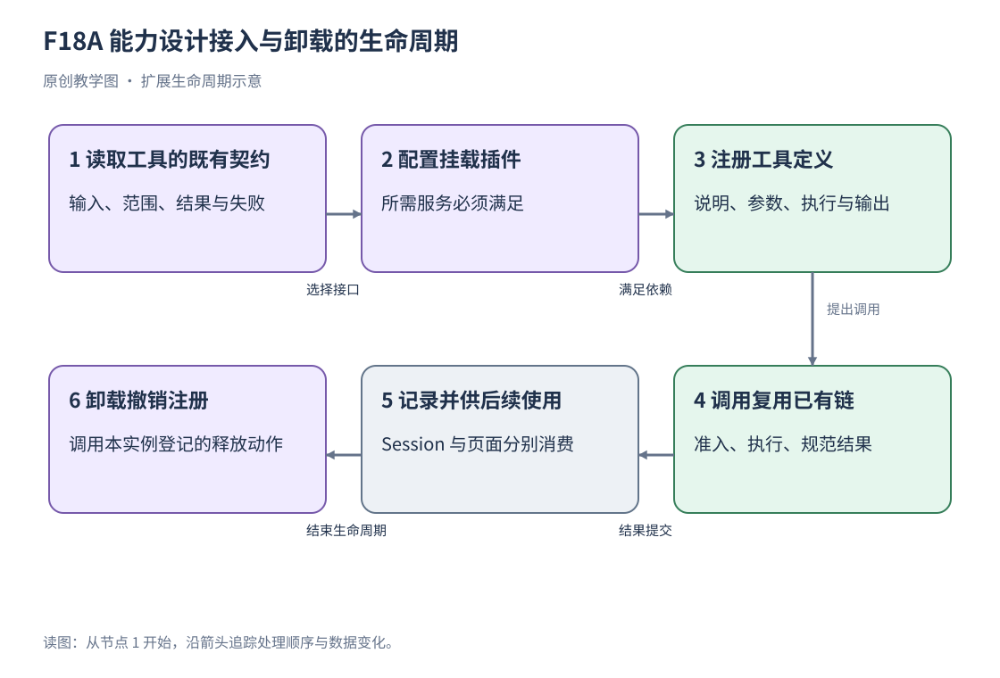

图 18A 按工具接入生命周期展开：确认契约、挂载插件、注册定义、复用 ToolRuntime、记录结果、卸载注册。read 的执行逻辑位于已有运行链中。
参数、规范值、模型文本和展示元数据
read 的外部参数是 file_path、offset 和 limit，解析后得到 filePath、offset 和 limit。前者是调用接口的命名，后者供执行逻辑使用：路径是字符串，起始行和最大行数是数字。解析完成后，执行体用这份内部输入读取文件。
执行体返回路径、起始行、行列表和总行数等规范 JSON 值。output.schema 检查结构，output.render 把该值转成模型面对的文本；presentationMeta 抽取可持久化的窗口数据，使支持读取卡片的界面能够重建行号和语言信息。规范值用于执行契约，模型文本供后续请求使用，展示元数据保存窗口事实。page 和 follow 传输原始 Session 事件；客户端再从事件提取卡片数据。
执行体通过所选文件服务读取，并检查取消与输出上限。schema 检查结构，解析逻辑检查具体值。插件的 name 标识实现，inject 声明依赖，apply 在依赖可用时注册工具。卸载时撤销注册，专用卡片则由客户端插件提供。
原指南与真实工具各怎样参考
官方最小工具示例说明 defineTool、execute 与 render 的关系，并使用 Node 文件读取展示一个最小形态。实际 tool-fs 使用 DSH 文件服务，由所选 Provider 解析路径；文件观察与执行守卫通过独立插件参与调用。
Web Client 的展示链从原始事件开始：Conversation 按 callId 配对工具调用与结果，ToolCallTree 按工具名称选择 tool.call.toolview 中的 renderer。这个按名称选择渲染组件的入口，是 keyed slot。read 对应 ReadRow，后者调用 readCardModel，从原始参数、结果文字和持久 meta 生成 React 组件的 props，也就是界面组件使用的数据。
readCardModel 先确认这是已结算、成功的顶层 read，再检查参数、meta 中的路径与行号、每行文本，以及模型结果的文件文本格式。通过后生成路径标签、行列表、总行数与语言信息；不符合时返回 null，工具行保留原始输出。没有专用 renderer 时，ToolCallTree 选择 GenericToolCard。
Host 的 presentCall 和 presentResult 是为本地消费方保留的纯转换接口。内置 Web Client 使用自己的卡片模型；page 和 follow 传输原始事实，Host 无需在读取历史时再次计算网页卡片。展示链核验列出这条路径的实现入口。
分析示例：什么证据支持“能读文件”
沿同一次 read 检查六项行为：参数解析、空路径拒绝、文件读取、行窗口构造、输出校验和客户端卡片派生。输入决定前两项，执行轨迹说明读取过程，content 与 meta 分别支持模型材料和界面展示。
输出 schema、render 或顶层 presentationMeta 抛错时，ToolRuntime 将本次返回转成工具错误。结果已经记录以后，客户端的卡片模型只读取并校验事实：数据不符合卡片要求时显示原始输出，已有模型内容保持原样。执行结果的构造与卡片的派生分别发生在 Host 和 Client。
复用通用工具链让文件工具专注获取和表达材料，代价是必须实现已有 schema、结果、准入和生命周期约定。模型文本与专用卡片分别处理，也避免为了界面格式污染模型材料。
全书机制回到一个任务
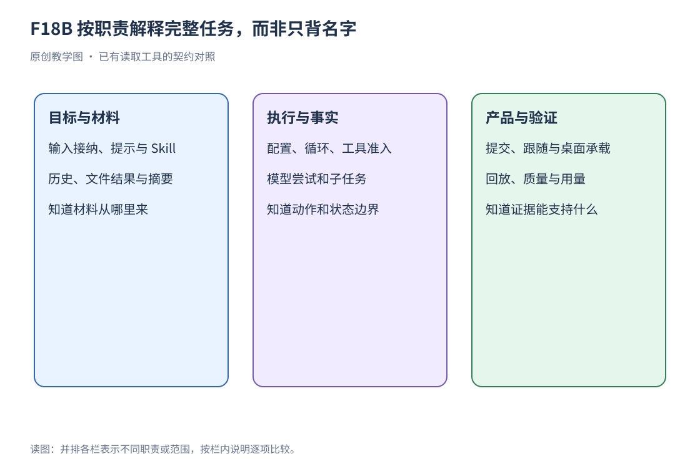

图 18B 用三组职责回顾全书：目标与材料、执行与事实、产品与验证。一次总结任务由这些部件合作完成，read 的输出在 Session、模型请求和界面中各有对应形式。
遇到材料过长，检查压缩后是否保留任务约束；模型失败，检查 attempt 与恢复决定；工具拒绝，检查准入结果；子任务参与，检查初始材料和返回产物。这些机制共同决定总结依据什么资料，以及失败发生在哪里。
常见误解
“一段类型定义就是可用插件”：类型不完成挂载、执行或运行验证。
“工具注册后自然有网页专用卡片”：工具行为与客户端呈现分别需要契约。
“更多能力必定更好”：新增接口还带来理解、控制与维护成本，应对准真实任务。
18.4 源码研读
E18A · 卡片资料从规范值派生
阅读任务：这是 read 输出定义中的 presentationMeta 函数属性。value 已是读取规范值，_args 是这里未使用的参数。观察怎样形成可序列化展示对象；模型文本 render 是同一输出定义的另一项职责。
代码类型：真实源码摘录。证据编号 E18A；下表的数字是原文件行号。
presentationMeta: (_args, value) => {
const lang = langFromPath(value.path)
return {
path: value.path,
offset: value.offset,
lines: value.lines.map(({ number, text }) => ({ number, text })),
totalLines: value.totalLines,
...lang === undefined ? {} : { lang },
}
},| 原文件行号 | 写法 | 在这段流程中的作用 |
|---|---|---|
| 124 | 属性和箭头函数 | 输出层稍后用规范值调用本函数，注册时不立即执行。 |
| 125 | const 与函数调用 | 依据结果路径推断展示语言。 |
| 126 | return 与对象开始 | 建立要保存的展示资料。 |
| 127 | 属性读取 | 保留结果里的显示路径。 |
| 128 | 属性读取 | 保留本次窗口的起始行。 |
| 129 | map、解构和对象返回 | 逐行只提取编号与文字，形成新的可保存数组。 |
| 130 | 属性读取 | 保留结果中的完整行数信息。 |
| 131 | 条件展开 | 可识别语言时才加入 lang 字段。 |
| 132 | 结束对象 | 本次展示资料建立完成。 |
| 133 | 结束函数属性 | 这些资料交给输出和保存链，不是一个 React 组件。 |
执行推演：路径、起始行、每行编号与文字及总行数形成卡片资料。文件扩展名能识别语言时增加 lang；无法识别就不增加。后续界面可以读取保存的元数据，不必再次读文件来重建这个窗口。
18.5 理解检查与讲解问答
问题 1 · 规范值、模型文本和展示元数据分别交给谁？
讲解：规范值供契约检查和内部处理，模型文本供模型推理，展示元数据供保存与卡片重建。
问题 2 · 专用卡片失败是否意味着模型一定没收到文本？
讲解：Host 将规范结果渲染成模型文本，并为顶层调用保存窗口 meta。Web Client 从原始事件派生卡片；readCardModel 不接受当前数据时，工具行显示原始输出，模型仍使用已保存的文本。
问题 3 · 新增工具只写 execute 是否足够？
讲解：不够。还要完成注册、参数与输出契约、准入配合、取消和资源生命周期。
第 19 章｜Cordis 与 Spatiotemporal Composability：论文契约怎样落到 Harness
本章从资源登记、依赖变化和插件卸载三个问题出发，讲解 Cordis 的 Spatiotemporal Composability。先用定时器和工具注册理解机制，再把它们与论文的定义和生命周期规则对应起来。
论文是 A Programming Paradigm for Spatiotemporal Composability，作者 Yifan Shi、Wei Zhang、Tianyi Cui，本文采用 arXiv:2608.25512 的 v1（2026-08-26）。实现采用固定项目快照里的 @deepseek-ai/cordis 4.0.4。下面先解释论文模型，再说明 Cordis 4.0.4 的实现方式。
19.1 先理解问题：装入以后，还要能够撤离
假设文件工具插件装入时做两件事：注册 read，监听文件观察事件。模型于是能够使用工具，其他组件也能收到观察通知。后来配置改变，要换成另一份实现。如果只把插件名字从列表删除，旧监听器可能继续接收通知，旧工具也可能留在注册表；重新装入又登记一次，便会出现重复响应或旧对象继续被访问。
生命周期不仅关心“怎样让它工作”，还要说明“怎样停止并撤去它带来的贡献”。effect 是操作对状态造成的改变，例如增加一个监听器。disposer 是为撤销相应贡献而保存的动作，例如移除刚增加的那个监听器。inverse 在这里指可以撤回该操作的函数，而不是“再运行一次原函数”。
read 插件还依赖文件服务。提供者撤销服务后，消费者要重新检查依赖，退出当前实例或等待新的服务。服务名称标识可解析的能力，依赖声明列出装入前需要可用的入口。
论文把这两个问题放在一起：时间方向上，组件的贡献怎样撤回；空间方向上，组件怎样在当前 Context 中获取依赖并随环境变化重新装配。这就是 Spatiotemporal Composability：时间方向上的可撤回与空间方向上的依赖组合。空间维度指服务的组织和解析关系。
19.2 一个可逆操作需要交出什么
用一个工具集合说明数学记号。设状态 S 保存当前工具集合，装入 A 前为 {read}；执行操作 f 后为 {read, search}。同时保存的撤回动作 g 只移除 A 注册的 search，则 g(f(S)) 回到 {read}。写成关系是：先执行 f，再执行它给出的 g，恢复原状态。
这里的“状态”是数学模型描述的数据，“函数”是从旧状态得到新状态的规则。论文的 witnessed effect function 不仅返回新状态，还返回一项逆操作，并要求逆操作确实恢复其对应输入；Definition 8 给出这项见证条件。witnessed 表示函数附带满足该等式的数学见证。实现中的 ctx.effect 保存 disposer，组件作者负责让它满足恢复条件。
在程序里，disposer（释放函数）通常通过闭包保存所需信息。闭包是一个函数连同它以后仍需使用的外层值：例如清理回调记住本次创建的 timer 句柄，卸载时才能停止这个定时器，而不是误停别人的资源。登记资源时就把获得与释放放在一起，比以后重新寻找“我到底创建过什么”更容易保持对应关系。
释放动作由组件作者编写。以定时器为例，disposer 要记住创建时得到的 timer 句柄，并调用 clearInterval 停止它；只打印“已清理”不会停止定时器。论文 §5.1.1 将逆操作的正确性交给组件作者，Cordis 运行时负责登记和调用。文件写入、邮件发送等外部动作，则要由作者按对应服务的实际能力设计后续处理。
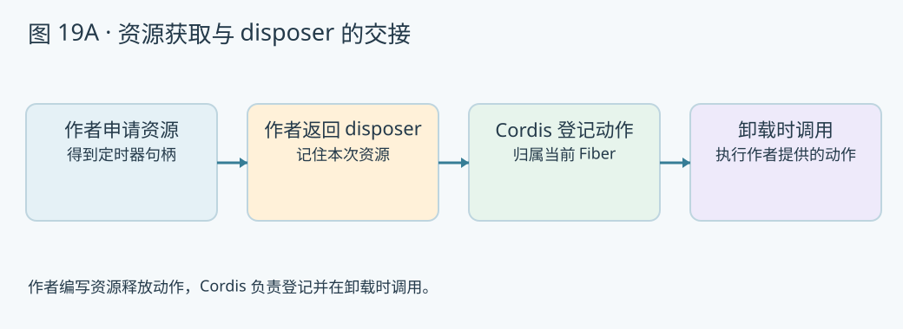

图 19A 从左向右展示资源交接：作者获取资源，返回记住这份资源的 disposer；Cordis 将它登记到当前 Fiber，卸载时调用作者提供的动作。
19.3 怎样把多个操作的撤回连起来
设一个组件先申请资源 A，再用 A 建立资源 B。撤离时先撤 B 再撤 A，才不会在清理 B 时发现基础资源已经消失。LIFO 是 Last-In-First-Out，后进先出；像把纸依次放到一摞的顶部，再从顶部取出。
论文把每一步返回的逆操作接到已有恢复动作之前，形成反向组合。effect iterator 让装入逐步推进；迭代器每次给出下一项，并说明是否结束。运行时因此可以在步骤之间记录进度、检查目标状态，决定继续装入还是进入撤离。
论文的反向组合、一个 ctx.effect 内的多步恢复、Fiber 上多个 effect 的释放采用不同组织方式。当前 Fiber._unload 用 Promise.all 等待同层释放任务，多个异步 disposer 会重叠运行。有严格依赖的两项清理，应写在同一个 disposer 中依次 await：先撤资源 B，再撤资源 A。
框架捕获并记录单项释放错误，其他释放任务继续推进。排查时，可以从错误记录找到所属实例和释放位置，再检查该项动作停在了哪里。
19.4 环境要求：coeffect、服务键与依赖
coeffect 描述组件执行需要从环境获取什么，例如文件服务；effect 描述执行对状态造成什么改变，例如注册工具。服务 key 是用于识别和解析某项能力的名称或标识。提供者发布该键下的能力，消费者声明自己需要它，Context 根据当前范围解析到实际实现。
理解一个组件时，可以依次查看它声明的依赖、提供的服务和装入行为。插件声明描述依赖，服务提供操作登记能力，Fiber 管理这次装入产生的资源。
例如插件 T 需要 tools 和 fs。tools 让它登记工具，fs 让它实现读取。只有依赖条件成立，运行时才推进该实例的装入。fs 的提供者撤去服务时，运行时通知相关消费者重新评价目标状态；它们需要退出当前装配或等待新的满足条件的环境。
响应式依赖意味着环境变化会推动实例重新计算目标状态。依赖注入使插件通过给定接口取能力，而不是自行硬编码每一个提供者。实例持有的连接、监听器和后台工作应通过资源管理接口登记，让卸载路径可以找到对应 disposer。
19.5 Fiber 与生命周期：目标变化时怎样收尾
Fiber 是组件的一次运行实例及其生命周期管理对象。每个 Fiber 保存自己的配置、依赖状态和释放动作。相同组件装入多次，可以有不同的 Context、配置、资源记录和状态；讨论清理时要指明是哪一个实例。
论文 §4 用抽象状态和转换规则研究装入、已激活、撤离等过程。论文中的 Reloading 包含推进装入的情形；论文用四类抽象状态表达规则；FiberState 枚举进一步区分运行时状态。实现与官方教程还区分 PENDING、FAILED、DISPOSED 等状态，用于表达依赖未满足、装入失败和实例终结。
装入正在等待连接建立时，配置可能改变。惯性原则要求先完成当前这一步，把结果与 disposer 交给框架，再决定继续装入还是撤回。资源由此及时进入清理记录。若外部操作迟迟不返回，这一步就一直等待；组件要在资源操作中配置超时或取消处理。
依赖撤离时还存在提供者与消费者的顺序问题。消费者的清理可能需要向提供者归还资源。论文的守卫演算通过等待关系限制过早回收，形式化讨论“提供者比它的消费者活得更久”的条件。
当前 Reflect.provide 的释放函数先从公共服务存储撤销入口，通知依赖实例，等待相关 Fiber，再清掉本实例保留的服务入口。这项 disposer 内部按上述顺序等待。Fiber 同层的其他 disposer 仍并发运行；需要消费者先退出才能释放的资源，应与该等待组织在同一受控释放流程中。
| 阶段 | 发生什么 | 需要核对什么 |
|---|---|---|
| 依赖可用 | 消费者可以开始当前装配 | 声明与实际解析是否一致 |
| 提供者撤去入口 | 新解析不能把它当作普通可用服务 | 是否通知了相应消费者 |
| 消费者收尾 | 处理仍属于旧实例的资源 | 清理是否还需提供者 |
| 提供者资源释放 | 撤去自身登记的贡献 | 是否按真实依赖组织等待 |
19.6 为什么“正向能交换”还不足以任意卸载
交换律表示先做 A 再做 B，与先做 B 再做 A，得到同样结果。设 A 登记自己的键 a，B 登记另一个键 b。若两项操作都只改变自己的独立槽位，最终集合可以相同。若两项都修改一个顺序敏感的中间件（请求依次经过的一串处理环节）列表，先后就可能改变请求经过的规则。
Definition 42 要求正向、撤回以及相关变换都满足独立性，并保持对方返回的逆操作与后续迭代。检查两次注册能否交换，只覆盖其中一部分；还要检查卸载 A 时，B 的贡献和后续运行是否保持。
一个错误清理例子是：A 注册前保存整个工具集合；B 后来登记自己的工具；A 卸载时把集合整体恢复成旧副本。A 确实记住了一个旧状态，却把 B 的合法贡献也抹掉。正确的撤回应识别并移除自己贡献的条目。遇到重名、覆盖、排序或共享资源时，还要把条目的替换和撤销规则纳入独立性检查。
这解释了为什么论文讨论服务提供者的责任：它发布的操作采用怎样的表示，直接影响其他组件能否独立撤回。服务提供者在设计注册和撤销规则时，就要处理这些独立性条件。
19.7 观测等价与证明条件
观测等价表示按指定的合法观察方式，看不到会影响契约的差别。相同工具集合不要求内存地址、分配顺序或运行时缓存逐字节相同。观察关系由模型规定；网络请求和外部设备写入则有它们自己的可观察状态。
论文 §3.3 通过观察关系界定状态相等的用途，§3.4 再讨论独立性与恢复。证明按这样的顺序展开：先规定状态、操作和观察；写下可逆和依赖条件；再证明满足条件的系统可怎样组合与撤回。
Theorem 73 的推进结果假设依赖先行关系无环、迭代长度有统一有限上界、整个序列涉及的实例名称有限，并且每一步遵守生命周期规则。无环意味着依赖箭头不会从某个组件绕回它自己。在这些条件下，论文给出没有规则层死锁以及有限推进到静止状态（不再有待推进的步骤）的结论。
例如 A 等 B、B 又等 A，构成依赖环，已经不满足 Theorem 73 的无环条件。这个例子说明，依赖图和步骤长度是推进定理本身的组成部分。
19.8 服务作用域与模块热重载
ctx.isolate(name, label) 为指定服务名建立新的解析标签，得到派生 Context。默认新标签使该名称在子范围中可以解析到另一项实现；相同标签可以让多个范围共享该服务解析空间。这些 Context 仍处于同一 JavaScript 宿主中，共享进程资源。
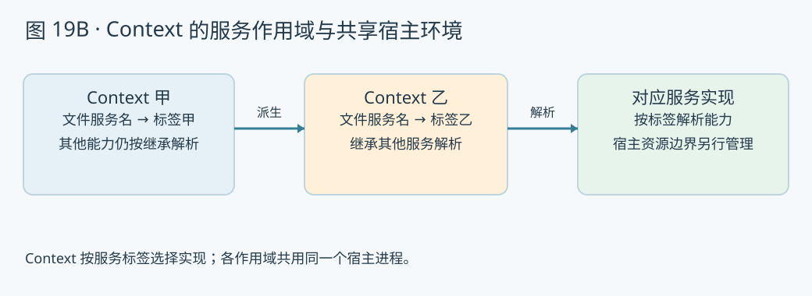

图 19B 先看两个 Context，再看右侧服务实现。派生箭头表示建立子 Context，解析箭头表示按服务标签找到实现。Context 乙为指定服务名使用新标签，其他服务继续沿继承关系解析；两个 Context 共用同一个宿主进程。
第 13 章的子 Session 组织历史与任务，第 11 章的执行环境限制资源访问，Context 的作用域组织服务解析。论文 §6.3 为不可信组件提出独立受限进程或容器等执行隔离，与这里的服务标签分工不同。
HMR 是 Hot Module Replacement，即热模块替换。项目的更新机制根据模块关系决定局部替换还是完整重载。当前 boot/hmr 检测到外部依赖变化时会走 fullReload（完整重载）并调用 loader.exit（结束当前进程以完成重载）。局部替换通过 disposer 释放旧贡献，完整重载则由 loader.exit 交给退出路径。
| 论文对象或问题 | 本项目对应观察位置 |
|---|---|
| effect 登记与 disposer 调用 | vendor/cordis 的 Fiber.effect 与卸载路径 |
| 服务提供与依赖通知 | Reflect.provide、notify 与 Fiber 状态 |
| 服务解析作用域 | Context.isolate |
| 工具贡献 | core/tools 注册与文件工具插件 |
| Session 事实持久化 | session-persistence-jsonl |
| 模块更新 | boot/hmr 的局部与完整重载路径 |
19.9 源码研读
E19A · 作者提供资源释放逻辑
阅读任务：这是仓库官方 Cordis 教程中 heartbeat 的 effect 片段。观察定时器句柄怎样进入释放函数，以及 Cordis 怎样获得这项动作。
代码类型：仓库官方教程示例。证据编号 E19A；下表的数字是原文件行号。
ctx.effect(() => {
const timer = setInterval(() => console.log('tick'), 200)
return () => {
clearInterval(timer)
console.log('heartbeat cleaned up')
}
})| 原文件行号 | 写法 | 在这段流程中的作用 |
|---|---|---|
| 20 | effect 接收函数并开始资源获取 | 把本次定时器生命周期登记给所属插件。 |
| 21 | const、setInterval 与回调 | 保存定时器句柄，每 200 毫秒调用日志回调。 |
| 22 | return 返回另一个函数 | 把释放动作作为值交给 Cordis，以后卸载时才调用。 |
| 23 | clearInterval 调用 | 作者使用已捕获的 timer 句柄停止该计时器。 |
| 24 | 日志调用 | 在实际清理时给出教程观察输出。 |
| 25 | 结束返回的释放函数 | 本次逆操作定义完成。 |
| 26 | 结束资源获取函数与 effect 调用 | 框架获得并登记释放函数。 |
执行推演：装入时创建定时器，effect 记录回调返回的释放函数。卸载时框架调用作者写下的 clearInterval；它没有从 setInterval 自动推导这行代码。
E19B · 服务名称作用域隔离
阅读任务：这是 Context.isolate 完整方法。name 是要隔离的服务名称，label 可让多个 Context 共享同一个服务作用域标签；重点观察返回的对象是否是操作系统沙箱。
代码类型：真实源码摘录。证据编号 E19B；下表的数字是原文件行号。
isolate(name: string, label?: symbol) {
const shadow = Object.create(this[symbols.isolate])
shadow[name] = label ?? Symbol(name)
return this.extend({ [symbols.isolate]: shadow })
}| 原文件行号 | 写法 | 在这段流程中的作用 |
|---|---|---|
| 121 | 方法、可选参数与 symbol 类型 | 指定哪个服务名称使用独立解析标签。 |
| 122 | Object.create | 建立继承父作用域表的新表，而不是复制整个宿主环境。 |
| 123 | 下标赋值与空值合并 | 为指定名称使用提供的标签或一个新 Symbol（语言内置的生成不重复值的工具，适合当标签）。 |
| 124 | return、extend 与计算属性 | 返回带新作用域表的派生 Context。 |
| 125 | 结束方法 | 隔离针对服务解析；物理执行边界需要另外的机制。 |
执行推演：不提供 label 时为指定服务建立新 Symbol 标签，其他继承关系仍保留；传相同 label 可加入同一服务作用域。没有创建进程、容器或文件权限边界。
E19C · 同层资源释放并发等待
阅读任务：这是 Fiber._unload 的释放开头。_disposables 保存所属 Fiber 的释放函数；本段之后还会清 store 并更新状态。观察 Promise.all 与逐个异常处理，不把论文的抽象回滚顺序直接套成这里的串行执行。
代码类型：真实源码摘录。证据编号 E19C；下表的数字是原文件行号。
private async _unload() {
await Promise.all(this._disposables.clear().map(async (dispose) => {
try {
await composeError(async (info) => {
await Promise.resolve()
info.error = new Error()
await runDisposable(dispose)
}, this._runner.getOuterStack)
} catch (reason) {
this.ctx.logger.error(reason)
}
}))| 原文件行号 | 写法 | 在这段流程中的作用 |
|---|---|---|
| 675 | private async 方法声明 | 内部卸载过程返回可等待的结果。 |
| 676 | Promise.all、clear 与 map | 取出已登记的释放动作，分别启动异步处理并等待整组。 |
| 677 | try | 每项释放有独立异常处理范围。 |
| 678 | await 与传入的异步函数 | 组合释放错误的诊断信息。 |
| 679 | await 已成功完成的 Promise | 先经过一个异步等待边界再继续此释放任务。 |
| 680 | new Error 赋给诊断对象 | 保存本次释放位置的信息。 |
| 681 | await runDisposable | 实际调用并等待这一项作者或注册 API 提供的释放动作。 |
| 682 | 结束诊断回调并传入栈提供者 | 为错误关联所属插件的外层调用信息。 |
| 683 | catch 接收失败原因 | 某项释放失败转入记录分支。 |
| 684 | logger.error | 记录该项释放失败，保留诊断信息；其他释放任务继续执行。 |
| 685 | 结束 catch | 该项处理结束。 |
| 686 | 结束 map 与 Promise.all | 等待这一组并发释放处理收尾，随后进入 store 和状态清理。 |
执行推演：多个释放函数被映射成异步任务，再统一等待。某项失败会记录错误；其他项仍被调用。严格顺序的资源需要在同一个释放动作中依次等待，不能依赖同层异步释放逐项完成。
19.10 理解检查与讲解问答
问题 1：框架能够调用释放函数，为什么不等于保证释放正确？
讲解：登记把 disposer 与当前 Fiber 联系起来，卸载时框架调用它。以定时器为例，作者必须在 disposer 内调用 clearInterval，并传入本次创建的句柄。论文的见证条件要求恢复原状态；运行时的登记与调用实现资源管理，具体恢复动作由作者完成。
问题 2：同层两个异步释放函数，能否只靠登记顺序保证第一个完全结束后第二个才开始？
讲解：_unload 将同层释放函数映射成异步任务，再用 Promise.all 汇总等待。后启动的任务可以先结束。有先后依赖时，在同一个 disposer 中依次 await。
问题 3：把插件放入 ctx.isolate 后，能否运行不可信代码而无须其他隔离？
讲解：不能。它改变指定服务名的解析标签，仍是语言内组织机制。不可信代码的物理执行边界、桥接接口和可访问资源要另行设计。
追问：怎样向别人准确讲述 Cordis 的价值？
Cordis 把插件组织成声明依赖、登记资源、响应环境变化并释放贡献的运行实例。Context 解析服务，Fiber 管理实例状态，effect 保存资源与 disposer 的对应关系。论文解释这些机制需要满足的可逆性和独立性条件，源码给出装入、撤离与依赖通知的具体执行方式。
19.11 论文阅读定位
本章实际依照原文讨论的部分：§3.1 revertible effect 及 Definition 8；§3.3 观察关系；§3.4 与 Definition 42 独立性；§4 生命周期与 Theorem 73；§5.1.1 effect tracking、§5.1.2 coeffect resolution、§5.1.3 组件生命周期；§6.1 外部 effect 的边界、§6.3 不可信组件隔离。